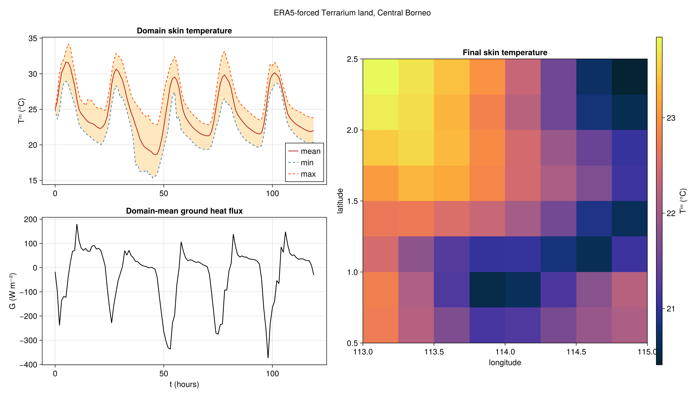

ERA5-forced Terrarium land over Central Borneo
This example couples a process-based Terrarium LandModel, solving the coupled heat and Richards equations in the soil column, into NumericalEarth's EarthSystemModel as the land component, forced by ERA5 reanalysis.
NumericalEarth owns the surface energy balance: it computes the turbulent fluxes with Monin–Obukhov similarity theory, the radiative fluxes from the prescribed downwelling radiation, and assembles their sum into the ground heat flux. Terrarium receives that flux as the top boundary condition of the soil column and owns the subsurface water budget (infiltration, runoff, and evapotranspiration).
The land runs on an ordinary Oceananigans LatitudeLongitudeGrid, so the ERA5 atmosphere and radiation are passed to the coupler directly on their native grid and regridded onto the land each step.
We run a short (~5 day) forward simulation over a snow-free equatorial box on the CPU.
CDS API credentials
Downloading ERA5 fields requires CDS API credentials at ~/.cdsapirc; see https://cds.climate.copernicus.eu/how-to-api.
Load packages
using NumericalEarth
using Terrarium
using Oceananigans
using Oceananigans.Units
using CopernicusClimateDataStore # activates the ERA5 download extension
using Printf
using Statistics
import CairoMakie: Makie
import Dates: DateTime
arch = Oceananigans.CPU()
NF = Float64 # match the EarthSystemModel clock precisionFloat64Domain: 2° × 2° Central Borneo box
The region is equatorial (snow-free), heavy-rainfall, and fully inland, which makes it a clean case for a soil-column land model with no snow or sea-ice coupling.
latitude = lat_min, lat_max = 0.5, 2.5
longitude = lon_min, lon_max = 113.0, 115.0(113.0, 115.0)ERA5 is loaded over a slightly larger region so that every land cell lies strictly inside the ERA5 grid. Cells on the edge of the ERA5 grid would otherwise interpolate into its halo.
era5_pad = 0.75
era5_region = BoundingBox(latitude = (lat_min - era5_pad, lat_max + era5_pad),
longitude = (lon_min - era5_pad, lon_max + era5_pad))NumericalEarth.DataWrangling.BoundingBox{Tuple{Float64, Float64}, Tuple{Float64, Float64}, Nothing}((112.25, 115.75), (-0.25, 3.25), nothing)Terrarium land grid
A 0.25° LatitudeLongitudeGrid over the box, matching the ERA5 resolution. Each horizontal cell holds a soil column with an exponentially stretched 10-layer discretization. The 10 cm surface layer sets the explicit stability limit on the time step. Heat conduction alone would allow several minutes, but the Richards equation is far stiffer: when the surface layer dries under strong midday heating, a 5-minute step lets the soil water oscillate between dry and saturated in alternating steps. We therefore use a 1-minute step.
vertical = ExponentialSpacing(Δz_min = 0.1, Δz_max = 1.0, N = 10)
land_grid = LatitudeLongitudeGrid(arch, NF;
size = (8, 8, num_layers(vertical)),
longitude,
latitude,
z = vertical,
topology = (Bounded, Bounded, Bounded))8×8×10 LatitudeLongitudeGrid{Float64, Bounded, Bounded, Bounded} on CPU with 3×3×3 halo
├── longitude: Bounded λ ∈ [113.0, 115.0] regularly spaced with Δλ=0.25
├── latitude: Bounded φ ∈ [0.5, 2.5] regularly spaced with Δφ=0.25
└── z: Bounded z ∈ [-4.08695, 0.0] variably spaced with min(Δz)=0.1, max(Δz)=1.0Terrarium land model
land_simulation builds the LandModel with a fully prescribed surface energy balance, initializes it, and returns an Oceananigans Simulation. We use the variably saturated Richards equation for the soil water.
initializers sets the initial state of the land model. Each entry names a Terrarium state variable and gives its initial value, either as a constant or as a function of position (x, y, z). Terrarium works in degrees Celsius, so we start from a uniform soil column at 25 °C that is 60% saturated with water and ice.
soil = SoilEnergyWaterCarbon(NF; hydrology = SoilHydrology(NF, RichardsEq()))
land = NumericalEarth.land_simulation(land_grid;
soil,
vegetation = nothing,
initializers = (temperature = 25.0,
saturation_water_ice = 0.6))Simulation of Terrarium.ModelIntegrator{Float64, Oceananigans.Architectures.CPU, Terrarium.LandGrid{Float64, Oceananigans.Grids.Bounded, Oceananigans.Grids.Bounded, Oceananigans.Grids.Bounded, Oceananigans.Architectures.CPU, Oceananigans.Grids.LatitudeLongitudeGrid{Float64, Oceananigans.Grids.Bounded, Oceananigans.Grids.Bounded, Oceananigans.Grids.Bounded, Oceananigans.Grids.StaticVerticalDiscretization{OffsetArrays.OffsetVector{Float64, Vector{Float64}}, OffsetArrays.OffsetVector{Float64, Vector{Float64}}, OffsetArrays.OffsetVector{Float64, Vector{Float64}}, OffsetArrays.OffsetVector{Float64, Vector{Float64}}}, Float64, Float64, OffsetArrays.OffsetVector{Float64, StepRangeLen{Float64, Base.TwicePrecision{Float64}, Base.TwicePrecision{Float64}, Int64}}, OffsetArrays.OffsetVector{Float64, StepRangeLen{Float64, Base.TwicePrecision{Float64}, Base.TwicePrecision{Float64}, Int64}}, Float64, Float64, OffsetArrays.OffsetVector{Float64, StepRangeLen{Float64, Base.TwicePrecision{Float64}, Base.TwicePrecision{Float64}, Int64}}, OffsetArrays.OffsetVector{Float64, StepRangeLen{Float64, Base.TwicePrecision{Float64}, Base.TwicePrecision{Float64}, Int64}}, OffsetArrays.OffsetVector{Float64, Vector{Float64}}, OffsetArrays.OffsetVector{Float64, Vector{Float64}}, OffsetArrays.OffsetVector{Float64, Vector{Float64}}, OffsetArrays.OffsetVector{Float64, Vector{Float64}}, Float64, Float64, Oceananigans.Architectures.CPU, Int64, Oceananigans.Grids.GridSize{8, 8, 10, 3, 3, 3}}, Nothing, Nothing}, Terrarium.ForwardEuler{Float64}, Terrarium.LandModel{Float64, Terrarium.LandGrid{Float64, Oceananigans.Grids.Bounded, Oceananigans.Grids.Bounded, Oceananigans.Grids.Bounded, Oceananigans.Architectures.CPU, Oceananigans.Grids.LatitudeLongitudeGrid{Float64, Oceananigans.Grids.Bounded, Oceananigans.Grids.Bounded, Oceananigans.Grids.Bounded, Oceananigans.Grids.StaticVerticalDiscretization{OffsetArrays.OffsetVector{Float64, Vector{Float64}}, OffsetArrays.OffsetVector{Float64, Vector{Float64}}, OffsetArrays.OffsetVector{Float64, Vector{Float64}}, OffsetArrays.OffsetVector{Float64, Vector{Float64}}}, Float64, Float64, OffsetArrays.OffsetVector{Float64, StepRangeLen{Float64, Base.TwicePrecision{Float64}, Base.TwicePrecision{Float64}, Int64}}, OffsetArrays.OffsetVector{Float64, StepRangeLen{Float64, Base.TwicePrecision{Float64}, Base.TwicePrecision{Float64}, Int64}}, Float64, Float64, OffsetArrays.OffsetVector{Float64, StepRangeLen{Float64, Base.TwicePrecision{Float64}, Base.TwicePrecision{Float64}, Int64}}, OffsetArrays.OffsetVector{Float64, StepRangeLen{Float64, Base.TwicePrecision{Float64}, Base.TwicePrecision{Float64}, Int64}}, OffsetArrays.OffsetVector{Float64, Vector{Float64}}, OffsetArrays.OffsetVector{Float64, Vector{Float64}}, OffsetArrays.OffsetVector{Float64, Vector{Float64}}, OffsetArrays.OffsetVector{Float64, Vector{Float64}}, Float64, Float64, Oceananigans.Architectures.CPU, Int64, Oceananigans.Grids.GridSize{8, 8, 10, 3, 3, 3}}, Nothing, Nothing}, Nothing, Terrarium.SoilEnergyWaterCarbon{Float64, Terrarium.SoilStratigraphy{Float64, 1, Tuple{Terrarium.ConstantSoilHorizon{Float64, :soil, Terrarium.ConstantSoilPorosity{Float64}}}}, Terrarium.SoilThermodynamics{Float64, Terrarium.ExplicitTwoPhaseHeatConduction, Terrarium.SoilEnergyTemperatureClosure, Terrarium.SoilThermalProperties{Float64, FreezeCurves.FreeWater, Terrarium.InverseQuadratic, Terrarium.SoilThermalConductivities{Float64}}}, Terrarium.SoilHydrology{Float64, Terrarium.RichardsEq, Terrarium.SoilSaturationPressureClosure, Terrarium.SoilHydraulicsSURFEX{Float64, FreezeCurves.BrooksCorey{FreezeCurves.SoilWaterVolume{Float64, Float64, Float64}, Float64, Float64}, Terrarium.UnsatKLinear{Float64}}, Nothing}, Terrarium.ConstantSoilCarbonDensity{Float64}}, Terrarium.SingleLayerSnow{Float64, Terrarium.FractionalSnowCover{Float64}, Terrarium.ConstantSnowDensity{Float64}, Terrarium.PowerLawSnowThermalConductivity{Float64}, Terrarium.ConstantSnowHydraulics{Float64}, Terrarium.ConstantSnowAlbedo{Float64}, Terrarium.SnowEnergyTemperatureClosure{Float64}}, Terrarium.PrescribedSurfaceEnergyBalance{Float64, Terrarium.DiagnosticAlbedo{Float64}, Terrarium.PrescribedSkinTemperature{Float64}, Terrarium.PrescribedRadiativeFluxes{Float64}, Terrarium.PrescribedTurbulentFluxes{Float64}, Terrarium.PrescribedGroundHeatFlux{Float64}}, Terrarium.SurfaceHydrology{Float64, Terrarium.NoCanopyInterception{Float64}, Terrarium.BareGroundEvaporation{Float64, Terrarium.SoilMoistureResistanceFactor{Float64}}, Terrarium.DirectSurfaceRunoff{Float64}}, Terrarium.PrescribedAtmosphere{Float64, (:CO2,), Terrarium.RainSnow, Terrarium.LongShortWaveRadiation, Terrarium.SpecificHumidity, Terrarium.Windspeed, Terrarium.ConstantAerodynamics{Float64}, Tuple{Terrarium.TracerGas{Float64, :CO2}}}, Terrarium.DefaultInitializer{Float64}, Terrarium.ForwardEuler{Float64}}, Terrarium.StateVariables{Float64, (:internal_energy, :saturation_water_ice, :snow_energy, :snow_water_equivalent, :surface_excess_water), (), (:temperature, :liquid_water_fraction, :pressure_head, :snow_temperature, :snow_liquid_fraction, :ground_temperature, :hydraulic_conductivity, :water_table, :snow_depth, :snow_cover_fraction, :albedo, :emissivity, :surface_net_radiation, :rainfall_ground, :ground_evaporation_conductance, :evaporation_ground, :surface_runoff, :infiltration, :soil_heat_flux, :snow_surface_heat_flux), (:surface_heat_flux, :basal_heat_flux, :sublimation, :skin_temperature, :surface_shortwave_up, :surface_longwave_up, :sensible_heat_flux, :latent_heat_flux, :ground_heat_flux, :air_temperature, :air_pressure, :windspeed, :specific_humidity, :rainfall, :snowfall, :surface_shortwave_down, :surface_longwave_down, :daytime_length, :CO2), (:soil,), Tuple{Oceananigans.Fields.Field{Oceananigans.Grids.Center, Oceananigans.Grids.Center, Oceananigans.Grids.Center, Nothing, Oceananigans.Grids.LatitudeLongitudeGrid{Float64, Oceananigans.Grids.Bounded, Oceananigans.Grids.Bounded, Oceananigans.Grids.Bounded, Oceananigans.Grids.StaticVerticalDiscretization{OffsetArrays.OffsetVector{Float64, Vector{Float64}}, OffsetArrays.OffsetVector{Float64, Vector{Float64}}, OffsetArrays.OffsetVector{Float64, Vector{Float64}}, OffsetArrays.OffsetVector{Float64, Vector{Float64}}}, Float64, Float64, OffsetArrays.OffsetVector{Float64, StepRangeLen{Float64, Base.TwicePrecision{Float64}, Base.TwicePrecision{Float64}, Int64}}, OffsetArrays.OffsetVector{Float64, StepRangeLen{Float64, Base.TwicePrecision{Float64}, Base.TwicePrecision{Float64}, Int64}}, Float64, Float64, OffsetArrays.OffsetVector{Float64, StepRangeLen{Float64, Base.TwicePrecision{Float64}, Base.TwicePrecision{Float64}, Int64}}, OffsetArrays.OffsetVector{Float64, StepRangeLen{Float64, Base.TwicePrecision{Float64}, Base.TwicePrecision{Float64}, Int64}}, OffsetArrays.OffsetVector{Float64, Vector{Float64}}, OffsetArrays.OffsetVector{Float64, Vector{Float64}}, OffsetArrays.OffsetVector{Float64, Vector{Float64}}, OffsetArrays.OffsetVector{Float64, Vector{Float64}}, Float64, Float64, Oceananigans.Architectures.CPU, Int64, Oceananigans.Grids.GridSize{8, 8, 10, 3, 3, 3}}, Tuple{Colon, Colon, Colon}, OffsetArrays.OffsetArray{Float64, 3, Array{Float64, 3}}, Float64, Oceananigans.BoundaryConditions.FieldBoundaryConditions{Oceananigans.BoundaryConditions.NoFluxBoundaryCondition{Oceananigans.BoundaryConditions.Flux{Oceananigans.Utils.ExplicitTimeDiscretization}}, Oceananigans.BoundaryConditions.NoFluxBoundaryCondition{Oceananigans.BoundaryConditions.Flux{Oceananigans.Utils.ExplicitTimeDiscretization}}, Oceananigans.BoundaryConditions.NoFluxBoundaryCondition{Oceananigans.BoundaryConditions.Flux{Oceananigans.Utils.ExplicitTimeDiscretization}}, Oceananigans.BoundaryConditions.NoFluxBoundaryCondition{Oceananigans.BoundaryConditions.Flux{Oceananigans.Utils.ExplicitTimeDiscretization}}, Nothing, Oceananigans.BoundaryConditions.BoundaryCondition{Oceananigans.BoundaryConditions.Flux{Oceananigans.Utils.ExplicitTimeDiscretization}, Oceananigans.Fields.Field{Oceananigans.Grids.Center, Oceananigans.Grids.Center, Oceananigans.Grids.Face, Nothing, Oceananigans.Grids.LatitudeLongitudeGrid{Float64, Oceananigans.Grids.Bounded, Oceananigans.Grids.Bounded, Oceananigans.Grids.Bounded, Oceananigans.Grids.StaticVerticalDiscretization{OffsetArrays.OffsetVector{Float64, Vector{Float64}}, OffsetArrays.OffsetVector{Float64, Vector{Float64}}, OffsetArrays.OffsetVector{Float64, Vector{Float64}}, OffsetArrays.OffsetVector{Float64, Vector{Float64}}}, Float64, Float64, OffsetArrays.OffsetVector{Float64, StepRangeLen{Float64, Base.TwicePrecision{Float64}, Base.TwicePrecision{Float64}, Int64}}, OffsetArrays.OffsetVector{Float64, StepRangeLen{Float64, Base.TwicePrecision{Float64}, Base.TwicePrecision{Float64}, Int64}}, Float64, Float64, OffsetArrays.OffsetVector{Float64, StepRangeLen{Float64, Base.TwicePrecision{Float64}, Base.TwicePrecision{Float64}, Int64}}, OffsetArrays.OffsetVector{Float64, StepRangeLen{Float64, Base.TwicePrecision{Float64}, Base.TwicePrecision{Float64}, Int64}}, OffsetArrays.OffsetVector{Float64, Vector{Float64}}, OffsetArrays.OffsetVector{Float64, Vector{Float64}}, OffsetArrays.OffsetVector{Float64, Vector{Float64}}, OffsetArrays.OffsetVector{Float64, Vector{Float64}}, Float64, Float64, Oceananigans.Architectures.CPU, Int64, Oceananigans.Grids.GridSize{8, 8, 10, 3, 3, 3}}, Tuple{Colon, Colon, UnitRange{Int64}}, OffsetArrays.OffsetArray{Float64, 3, Array{Float64, 3}}, Float64, Oceananigans.BoundaryConditions.FieldBoundaryConditions{Oceananigans.BoundaryConditions.NoFluxBoundaryCondition{Oceananigans.BoundaryConditions.Flux{Oceananigans.Utils.ExplicitTimeDiscretization}}, Oceananigans.BoundaryConditions.NoFluxBoundaryCondition{Oceananigans.BoundaryConditions.Flux{Oceananigans.Utils.ExplicitTimeDiscretization}}, Oceananigans.BoundaryConditions.NoFluxBoundaryCondition{Oceananigans.BoundaryConditions.Flux{Oceananigans.Utils.ExplicitTimeDiscretization}}, Oceananigans.BoundaryConditions.NoFluxBoundaryCondition{Oceananigans.BoundaryConditions.Flux{Oceananigans.Utils.ExplicitTimeDiscretization}}, Nothing, Nothing, Nothing, @NamedTuple{bottom_and_top::Nothing, south_and_north::KernelAbstractions.Kernel{KernelAbstractions.CPU, KernelAbstractions.NDIteration.StaticSize{(8, 1)}, Oceananigans.Utils.OffsetStaticSize{(1:8, 11:11)}, typeof(Oceananigans.BoundaryConditions.cpu__fill_south_and_north_halo!)}, west_and_east::KernelAbstractions.Kernel{KernelAbstractions.CPU, KernelAbstractions.NDIteration.StaticSize{(8, 1)}, Oceananigans.Utils.OffsetStaticSize{(1:8, 11:11)}, typeof(Oceananigans.BoundaryConditions.cpu__fill_west_and_east_halo!)}}, @NamedTuple{bottom_and_top::Tuple{Nothing, Nothing}, south_and_north::Tuple{Oceananigans.BoundaryConditions.NoFluxBoundaryCondition{Oceananigans.BoundaryConditions.Flux{Oceananigans.Utils.ExplicitTimeDiscretization}}, Oceananigans.BoundaryConditions.NoFluxBoundaryCondition{Oceananigans.BoundaryConditions.Flux{Oceananigans.Utils.ExplicitTimeDiscretization}}}, west_and_east::Tuple{Oceananigans.BoundaryConditions.NoFluxBoundaryCondition{Oceananigans.BoundaryConditions.Flux{Oceananigans.Utils.ExplicitTimeDiscretization}}, Oceananigans.BoundaryConditions.NoFluxBoundaryCondition{Oceananigans.BoundaryConditions.Flux{Oceananigans.Utils.ExplicitTimeDiscretization}}}}}, Nothing, Nothing}}, Nothing, @NamedTuple{bottom_and_top::KernelAbstractions.Kernel{KernelAbstractions.CPU, KernelAbstractions.NDIteration.StaticSize{(8, 1)}, Oceananigans.Utils.OffsetStaticSize{(1:8, 1:8)}, typeof(Oceananigans.BoundaryConditions.cpu__fill_bottom_and_top_halo!)}, south_and_north::KernelAbstractions.Kernel{KernelAbstractions.CPU, KernelAbstractions.NDIteration.StaticSize{(8, 1)}, Oceananigans.Utils.OffsetStaticSize{(1:8, 1:10)}, typeof(Oceananigans.BoundaryConditions.cpu__fill_south_and_north_halo!)}, west_and_east::KernelAbstractions.Kernel{KernelAbstractions.CPU, KernelAbstractions.NDIteration.StaticSize{(8, 1)}, Oceananigans.Utils.OffsetStaticSize{(1:8, 1:10)}, typeof(Oceananigans.BoundaryConditions.cpu__fill_west_and_east_halo!)}}, @NamedTuple{bottom_and_top::Tuple{Nothing, Oceananigans.BoundaryConditions.BoundaryCondition{Oceananigans.BoundaryConditions.Flux{Oceananigans.Utils.ExplicitTimeDiscretization}, Oceananigans.Fields.Field{Oceananigans.Grids.Center, Oceananigans.Grids.Center, Oceananigans.Grids.Face, Nothing, Oceananigans.Grids.LatitudeLongitudeGrid{Float64, Oceananigans.Grids.Bounded, Oceananigans.Grids.Bounded, Oceananigans.Grids.Bounded, Oceananigans.Grids.StaticVerticalDiscretization{OffsetArrays.OffsetVector{Float64, Vector{Float64}}, OffsetArrays.OffsetVector{Float64, Vector{Float64}}, OffsetArrays.OffsetVector{Float64, Vector{Float64}}, OffsetArrays.OffsetVector{Float64, Vector{Float64}}}, Float64, Float64, OffsetArrays.OffsetVector{Float64, StepRangeLen{Float64, Base.TwicePrecision{Float64}, Base.TwicePrecision{Float64}, Int64}}, OffsetArrays.OffsetVector{Float64, StepRangeLen{Float64, Base.TwicePrecision{Float64}, Base.TwicePrecision{Float64}, Int64}}, Float64, Float64, OffsetArrays.OffsetVector{Float64, StepRangeLen{Float64, Base.TwicePrecision{Float64}, Base.TwicePrecision{Float64}, Int64}}, OffsetArrays.OffsetVector{Float64, StepRangeLen{Float64, Base.TwicePrecision{Float64}, Base.TwicePrecision{Float64}, Int64}}, OffsetArrays.OffsetVector{Float64, Vector{Float64}}, OffsetArrays.OffsetVector{Float64, Vector{Float64}}, OffsetArrays.OffsetVector{Float64, Vector{Float64}}, OffsetArrays.OffsetVector{Float64, Vector{Float64}}, Float64, Float64, Oceananigans.Architectures.CPU, Int64, Oceananigans.Grids.GridSize{8, 8, 10, 3, 3, 3}}, Tuple{Colon, Colon, UnitRange{Int64}}, OffsetArrays.OffsetArray{Float64, 3, Array{Float64, 3}}, Float64, Oceananigans.BoundaryConditions.FieldBoundaryConditions{Oceananigans.BoundaryConditions.NoFluxBoundaryCondition{Oceananigans.BoundaryConditions.Flux{Oceananigans.Utils.ExplicitTimeDiscretization}}, Oceananigans.BoundaryConditions.NoFluxBoundaryCondition{Oceananigans.BoundaryConditions.Flux{Oceananigans.Utils.ExplicitTimeDiscretization}}, Oceananigans.BoundaryConditions.NoFluxBoundaryCondition{Oceananigans.BoundaryConditions.Flux{Oceananigans.Utils.ExplicitTimeDiscretization}}, Oceananigans.BoundaryConditions.NoFluxBoundaryCondition{Oceananigans.BoundaryConditions.Flux{Oceananigans.Utils.ExplicitTimeDiscretization}}, Nothing, Nothing, Nothing, @NamedTuple{bottom_and_top::Nothing, south_and_north::KernelAbstractions.Kernel{KernelAbstractions.CPU, KernelAbstractions.NDIteration.StaticSize{(8, 1)}, Oceananigans.Utils.OffsetStaticSize{(1:8, 11:11)}, typeof(Oceananigans.BoundaryConditions.cpu__fill_south_and_north_halo!)}, west_and_east::KernelAbstractions.Kernel{KernelAbstractions.CPU, KernelAbstractions.NDIteration.StaticSize{(8, 1)}, Oceananigans.Utils.OffsetStaticSize{(1:8, 11:11)}, typeof(Oceananigans.BoundaryConditions.cpu__fill_west_and_east_halo!)}}, @NamedTuple{bottom_and_top::Tuple{Nothing, Nothing}, south_and_north::Tuple{Oceananigans.BoundaryConditions.NoFluxBoundaryCondition{Oceananigans.BoundaryConditions.Flux{Oceananigans.Utils.ExplicitTimeDiscretization}}, Oceananigans.BoundaryConditions.NoFluxBoundaryCondition{Oceananigans.BoundaryConditions.Flux{Oceananigans.Utils.ExplicitTimeDiscretization}}}, west_and_east::Tuple{Oceananigans.BoundaryConditions.NoFluxBoundaryCondition{Oceananigans.BoundaryConditions.Flux{Oceananigans.Utils.ExplicitTimeDiscretization}}, Oceananigans.BoundaryConditions.NoFluxBoundaryCondition{Oceananigans.BoundaryConditions.Flux{Oceananigans.Utils.ExplicitTimeDiscretization}}}}}, Nothing, Nothing}}}, south_and_north::Tuple{Oceananigans.BoundaryConditions.NoFluxBoundaryCondition{Oceananigans.BoundaryConditions.Flux{Oceananigans.Utils.ExplicitTimeDiscretization}}, Oceananigans.BoundaryConditions.NoFluxBoundaryCondition{Oceananigans.BoundaryConditions.Flux{Oceananigans.Utils.ExplicitTimeDiscretization}}}, west_and_east::Tuple{Oceananigans.BoundaryConditions.NoFluxBoundaryCondition{Oceananigans.BoundaryConditions.Flux{Oceananigans.Utils.ExplicitTimeDiscretization}}, Oceananigans.BoundaryConditions.NoFluxBoundaryCondition{Oceananigans.BoundaryConditions.Flux{Oceananigans.Utils.ExplicitTimeDiscretization}}}}}, Nothing, Nothing}, Oceananigans.Fields.Field{Oceananigans.Grids.Center, Oceananigans.Grids.Center, Oceananigans.Grids.Center, Nothing, Oceananigans.Grids.LatitudeLongitudeGrid{Float64, Oceananigans.Grids.Bounded, Oceananigans.Grids.Bounded, Oceananigans.Grids.Bounded, Oceananigans.Grids.StaticVerticalDiscretization{OffsetArrays.OffsetVector{Float64, Vector{Float64}}, OffsetArrays.OffsetVector{Float64, Vector{Float64}}, OffsetArrays.OffsetVector{Float64, Vector{Float64}}, OffsetArrays.OffsetVector{Float64, Vector{Float64}}}, Float64, Float64, OffsetArrays.OffsetVector{Float64, StepRangeLen{Float64, Base.TwicePrecision{Float64}, Base.TwicePrecision{Float64}, Int64}}, OffsetArrays.OffsetVector{Float64, StepRangeLen{Float64, Base.TwicePrecision{Float64}, Base.TwicePrecision{Float64}, Int64}}, Float64, Float64, OffsetArrays.OffsetVector{Float64, StepRangeLen{Float64, Base.TwicePrecision{Float64}, Base.TwicePrecision{Float64}, Int64}}, OffsetArrays.OffsetVector{Float64, StepRangeLen{Float64, Base.TwicePrecision{Float64}, Base.TwicePrecision{Float64}, Int64}}, OffsetArrays.OffsetVector{Float64, Vector{Float64}}, OffsetArrays.OffsetVector{Float64, Vector{Float64}}, OffsetArrays.OffsetVector{Float64, Vector{Float64}}, OffsetArrays.OffsetVector{Float64, Vector{Float64}}, Float64, Float64, Oceananigans.Architectures.CPU, Int64, Oceananigans.Grids.GridSize{8, 8, 10, 3, 3, 3}}, Tuple{Colon, Colon, Colon}, OffsetArrays.OffsetArray{Float64, 3, Array{Float64, 3}}, Float64, Oceananigans.BoundaryConditions.FieldBoundaryConditions{Oceananigans.BoundaryConditions.NoFluxBoundaryCondition{Oceananigans.BoundaryConditions.Flux{Oceananigans.Utils.ExplicitTimeDiscretization}}, Oceananigans.BoundaryConditions.NoFluxBoundaryCondition{Oceananigans.BoundaryConditions.Flux{Oceananigans.Utils.ExplicitTimeDiscretization}}, Oceananigans.BoundaryConditions.NoFluxBoundaryCondition{Oceananigans.BoundaryConditions.Flux{Oceananigans.Utils.ExplicitTimeDiscretization}}, Oceananigans.BoundaryConditions.NoFluxBoundaryCondition{Oceananigans.BoundaryConditions.Flux{Oceananigans.Utils.ExplicitTimeDiscretization}}, Nothing, Oceananigans.BoundaryConditions.BoundaryCondition{Oceananigans.BoundaryConditions.Flux{Oceananigans.Utils.ExplicitTimeDiscretization}, Oceananigans.BoundaryConditions.DiscreteBoundaryFunction{@NamedTuple{strat::Terrarium.SoilStratigraphy{Float64, 1, Tuple{Terrarium.ConstantSoilHorizon{Float64, :soil, Terrarium.ConstantSoilPorosity{Float64}}}}, bgc::Terrarium.ConstantSoilCarbonDensity{Float64}}, typeof(Terrarium.saturation_infiltration_bc)}}, Nothing, @NamedTuple{bottom_and_top::KernelAbstractions.Kernel{KernelAbstractions.CPU, KernelAbstractions.NDIteration.StaticSize{(8, 1)}, Oceananigans.Utils.OffsetStaticSize{(1:8, 1:8)}, typeof(Oceananigans.BoundaryConditions.cpu__fill_bottom_and_top_halo!)}, south_and_north::KernelAbstractions.Kernel{KernelAbstractions.CPU, KernelAbstractions.NDIteration.StaticSize{(8, 1)}, Oceananigans.Utils.OffsetStaticSize{(1:8, 1:10)}, typeof(Oceananigans.BoundaryConditions.cpu__fill_south_and_north_halo!)}, west_and_east::KernelAbstractions.Kernel{KernelAbstractions.CPU, KernelAbstractions.NDIteration.StaticSize{(8, 1)}, Oceananigans.Utils.OffsetStaticSize{(1:8, 1:10)}, typeof(Oceananigans.BoundaryConditions.cpu__fill_west_and_east_halo!)}}, @NamedTuple{bottom_and_top::Tuple{Nothing, Oceananigans.BoundaryConditions.BoundaryCondition{Oceananigans.BoundaryConditions.Flux{Oceananigans.Utils.ExplicitTimeDiscretization}, Oceananigans.BoundaryConditions.DiscreteBoundaryFunction{@NamedTuple{strat::Terrarium.SoilStratigraphy{Float64, 1, Tuple{Terrarium.ConstantSoilHorizon{Float64, :soil, Terrarium.ConstantSoilPorosity{Float64}}}}, bgc::Terrarium.ConstantSoilCarbonDensity{Float64}}, typeof(Terrarium.saturation_infiltration_bc)}}}, south_and_north::Tuple{Oceananigans.BoundaryConditions.NoFluxBoundaryCondition{Oceananigans.BoundaryConditions.Flux{Oceananigans.Utils.ExplicitTimeDiscretization}}, Oceananigans.BoundaryConditions.NoFluxBoundaryCondition{Oceananigans.BoundaryConditions.Flux{Oceananigans.Utils.ExplicitTimeDiscretization}}}, west_and_east::Tuple{Oceananigans.BoundaryConditions.NoFluxBoundaryCondition{Oceananigans.BoundaryConditions.Flux{Oceananigans.Utils.ExplicitTimeDiscretization}}, Oceananigans.BoundaryConditions.NoFluxBoundaryCondition{Oceananigans.BoundaryConditions.Flux{Oceananigans.Utils.ExplicitTimeDiscretization}}}}}, Nothing, Nothing}, Oceananigans.Fields.Field{Oceananigans.Grids.Center, Oceananigans.Grids.Center, Nothing, Nothing, Oceananigans.Grids.LatitudeLongitudeGrid{Float64, Oceananigans.Grids.Bounded, Oceananigans.Grids.Bounded, Oceananigans.Grids.Bounded, Oceananigans.Grids.StaticVerticalDiscretization{OffsetArrays.OffsetVector{Float64, Vector{Float64}}, OffsetArrays.OffsetVector{Float64, Vector{Float64}}, OffsetArrays.OffsetVector{Float64, Vector{Float64}}, OffsetArrays.OffsetVector{Float64, Vector{Float64}}}, Float64, Float64, OffsetArrays.OffsetVector{Float64, StepRangeLen{Float64, Base.TwicePrecision{Float64}, Base.TwicePrecision{Float64}, Int64}}, OffsetArrays.OffsetVector{Float64, StepRangeLen{Float64, Base.TwicePrecision{Float64}, Base.TwicePrecision{Float64}, Int64}}, Float64, Float64, OffsetArrays.OffsetVector{Float64, StepRangeLen{Float64, Base.TwicePrecision{Float64}, Base.TwicePrecision{Float64}, Int64}}, OffsetArrays.OffsetVector{Float64, StepRangeLen{Float64, Base.TwicePrecision{Float64}, Base.TwicePrecision{Float64}, Int64}}, OffsetArrays.OffsetVector{Float64, Vector{Float64}}, OffsetArrays.OffsetVector{Float64, Vector{Float64}}, OffsetArrays.OffsetVector{Float64, Vector{Float64}}, OffsetArrays.OffsetVector{Float64, Vector{Float64}}, Float64, Float64, Oceananigans.Architectures.CPU, Int64, Oceananigans.Grids.GridSize{8, 8, 10, 3, 3, 3}}, Tuple{Colon, Colon, Colon}, OffsetArrays.OffsetArray{Float64, 3, Array{Float64, 3}}, Float64, Oceananigans.BoundaryConditions.FieldBoundaryConditions{Oceananigans.BoundaryConditions.NoFluxBoundaryCondition{Oceananigans.BoundaryConditions.Flux{Oceananigans.Utils.ExplicitTimeDiscretization}}, Oceananigans.BoundaryConditions.NoFluxBoundaryCondition{Oceananigans.BoundaryConditions.Flux{Oceananigans.Utils.ExplicitTimeDiscretization}}, Oceananigans.BoundaryConditions.NoFluxBoundaryCondition{Oceananigans.BoundaryConditions.Flux{Oceananigans.Utils.ExplicitTimeDiscretization}}, Oceananigans.BoundaryConditions.NoFluxBoundaryCondition{Oceananigans.BoundaryConditions.Flux{Oceananigans.Utils.ExplicitTimeDiscretization}}, Nothing, Nothing, Nothing, @NamedTuple{bottom_and_top::Nothing, south_and_north::KernelAbstractions.Kernel{KernelAbstractions.CPU, KernelAbstractions.NDIteration.StaticSize{(8, 1)}, Oceananigans.Utils.OffsetStaticSize{(1:8, 1:1)}, typeof(Oceananigans.BoundaryConditions.cpu__fill_south_and_north_halo!)}, west_and_east::KernelAbstractions.Kernel{KernelAbstractions.CPU, KernelAbstractions.NDIteration.StaticSize{(8, 1)}, Oceananigans.Utils.OffsetStaticSize{(1:8, 1:1)}, typeof(Oceananigans.BoundaryConditions.cpu__fill_west_and_east_halo!)}}, @NamedTuple{bottom_and_top::Tuple{Nothing, Nothing}, south_and_north::Tuple{Oceananigans.BoundaryConditions.NoFluxBoundaryCondition{Oceananigans.BoundaryConditions.Flux{Oceananigans.Utils.ExplicitTimeDiscretization}}, Oceananigans.BoundaryConditions.NoFluxBoundaryCondition{Oceananigans.BoundaryConditions.Flux{Oceananigans.Utils.ExplicitTimeDiscretization}}}, west_and_east::Tuple{Oceananigans.BoundaryConditions.NoFluxBoundaryCondition{Oceananigans.BoundaryConditions.Flux{Oceananigans.Utils.ExplicitTimeDiscretization}}, Oceananigans.BoundaryConditions.NoFluxBoundaryCondition{Oceananigans.BoundaryConditions.Flux{Oceananigans.Utils.ExplicitTimeDiscretization}}}}}, Nothing, Nothing}, Oceananigans.Fields.Field{Oceananigans.Grids.Center, Oceananigans.Grids.Center, Nothing, Nothing, Oceananigans.Grids.LatitudeLongitudeGrid{Float64, Oceananigans.Grids.Bounded, Oceananigans.Grids.Bounded, Oceananigans.Grids.Bounded, Oceananigans.Grids.StaticVerticalDiscretization{OffsetArrays.OffsetVector{Float64, Vector{Float64}}, OffsetArrays.OffsetVector{Float64, Vector{Float64}}, OffsetArrays.OffsetVector{Float64, Vector{Float64}}, OffsetArrays.OffsetVector{Float64, Vector{Float64}}}, Float64, Float64, OffsetArrays.OffsetVector{Float64, StepRangeLen{Float64, Base.TwicePrecision{Float64}, Base.TwicePrecision{Float64}, Int64}}, OffsetArrays.OffsetVector{Float64, StepRangeLen{Float64, Base.TwicePrecision{Float64}, Base.TwicePrecision{Float64}, Int64}}, Float64, Float64, OffsetArrays.OffsetVector{Float64, StepRangeLen{Float64, Base.TwicePrecision{Float64}, Base.TwicePrecision{Float64}, Int64}}, OffsetArrays.OffsetVector{Float64, StepRangeLen{Float64, Base.TwicePrecision{Float64}, Base.TwicePrecision{Float64}, Int64}}, OffsetArrays.OffsetVector{Float64, Vector{Float64}}, OffsetArrays.OffsetVector{Float64, Vector{Float64}}, OffsetArrays.OffsetVector{Float64, Vector{Float64}}, OffsetArrays.OffsetVector{Float64, Vector{Float64}}, Float64, Float64, Oceananigans.Architectures.CPU, Int64, Oceananigans.Grids.GridSize{8, 8, 10, 3, 3, 3}}, Tuple{Colon, Colon, Colon}, OffsetArrays.OffsetArray{Float64, 3, Array{Float64, 3}}, Float64, Oceananigans.BoundaryConditions.FieldBoundaryConditions{Oceananigans.BoundaryConditions.NoFluxBoundaryCondition{Oceananigans.BoundaryConditions.Flux{Oceananigans.Utils.ExplicitTimeDiscretization}}, Oceananigans.BoundaryConditions.NoFluxBoundaryCondition{Oceananigans.BoundaryConditions.Flux{Oceananigans.Utils.ExplicitTimeDiscretization}}, Oceananigans.BoundaryConditions.NoFluxBoundaryCondition{Oceananigans.BoundaryConditions.Flux{Oceananigans.Utils.ExplicitTimeDiscretization}}, Oceananigans.BoundaryConditions.NoFluxBoundaryCondition{Oceananigans.BoundaryConditions.Flux{Oceananigans.Utils.ExplicitTimeDiscretization}}, Nothing, Nothing, Nothing, @NamedTuple{bottom_and_top::Nothing, south_and_north::KernelAbstractions.Kernel{KernelAbstractions.CPU, KernelAbstractions.NDIteration.StaticSize{(8, 1)}, Oceananigans.Utils.OffsetStaticSize{(1:8, 1:1)}, typeof(Oceananigans.BoundaryConditions.cpu__fill_south_and_north_halo!)}, west_and_east::KernelAbstractions.Kernel{KernelAbstractions.CPU, KernelAbstractions.NDIteration.StaticSize{(8, 1)}, Oceananigans.Utils.OffsetStaticSize{(1:8, 1:1)}, typeof(Oceananigans.BoundaryConditions.cpu__fill_west_and_east_halo!)}}, @NamedTuple{bottom_and_top::Tuple{Nothing, Nothing}, south_and_north::Tuple{Oceananigans.BoundaryConditions.NoFluxBoundaryCondition{Oceananigans.BoundaryConditions.Flux{Oceananigans.Utils.ExplicitTimeDiscretization}}, Oceananigans.BoundaryConditions.NoFluxBoundaryCondition{Oceananigans.BoundaryConditions.Flux{Oceananigans.Utils.ExplicitTimeDiscretization}}}, west_and_east::Tuple{Oceananigans.BoundaryConditions.NoFluxBoundaryCondition{Oceananigans.BoundaryConditions.Flux{Oceananigans.Utils.ExplicitTimeDiscretization}}, Oceananigans.BoundaryConditions.NoFluxBoundaryCondition{Oceananigans.BoundaryConditions.Flux{Oceananigans.Utils.ExplicitTimeDiscretization}}}}}, Nothing, Nothing}, Oceananigans.Fields.Field{Oceananigans.Grids.Center, Oceananigans.Grids.Center, Oceananigans.Grids.Face, Nothing, Oceananigans.Grids.LatitudeLongitudeGrid{Float64, Oceananigans.Grids.Bounded, Oceananigans.Grids.Bounded, Oceananigans.Grids.Bounded, Oceananigans.Grids.StaticVerticalDiscretization{OffsetArrays.OffsetVector{Float64, Vector{Float64}}, OffsetArrays.OffsetVector{Float64, Vector{Float64}}, OffsetArrays.OffsetVector{Float64, Vector{Float64}}, OffsetArrays.OffsetVector{Float64, Vector{Float64}}}, Float64, Float64, OffsetArrays.OffsetVector{Float64, StepRangeLen{Float64, Base.TwicePrecision{Float64}, Base.TwicePrecision{Float64}, Int64}}, OffsetArrays.OffsetVector{Float64, StepRangeLen{Float64, Base.TwicePrecision{Float64}, Base.TwicePrecision{Float64}, Int64}}, Float64, Float64, OffsetArrays.OffsetVector{Float64, StepRangeLen{Float64, Base.TwicePrecision{Float64}, Base.TwicePrecision{Float64}, Int64}}, OffsetArrays.OffsetVector{Float64, StepRangeLen{Float64, Base.TwicePrecision{Float64}, Base.TwicePrecision{Float64}, Int64}}, OffsetArrays.OffsetVector{Float64, Vector{Float64}}, OffsetArrays.OffsetVector{Float64, Vector{Float64}}, OffsetArrays.OffsetVector{Float64, Vector{Float64}}, OffsetArrays.OffsetVector{Float64, Vector{Float64}}, Float64, Float64, Oceananigans.Architectures.CPU, Int64, Oceananigans.Grids.GridSize{8, 8, 10, 3, 3, 3}}, Tuple{Colon, Colon, UnitRange{Int64}}, OffsetArrays.OffsetArray{Float64, 3, Array{Float64, 3}}, Float64, Oceananigans.BoundaryConditions.FieldBoundaryConditions{Oceananigans.BoundaryConditions.NoFluxBoundaryCondition{Oceananigans.BoundaryConditions.Flux{Oceananigans.Utils.ExplicitTimeDiscretization}}, Oceananigans.BoundaryConditions.NoFluxBoundaryCondition{Oceananigans.BoundaryConditions.Flux{Oceananigans.Utils.ExplicitTimeDiscretization}}, Oceananigans.BoundaryConditions.NoFluxBoundaryCondition{Oceananigans.BoundaryConditions.Flux{Oceananigans.Utils.ExplicitTimeDiscretization}}, Oceananigans.BoundaryConditions.NoFluxBoundaryCondition{Oceananigans.BoundaryConditions.Flux{Oceananigans.Utils.ExplicitTimeDiscretization}}, Nothing, Nothing, Nothing, @NamedTuple{bottom_and_top::Nothing, south_and_north::KernelAbstractions.Kernel{KernelAbstractions.CPU, KernelAbstractions.NDIteration.StaticSize{(8, 1)}, Oceananigans.Utils.OffsetStaticSize{(1:8, 11:11)}, typeof(Oceananigans.BoundaryConditions.cpu__fill_south_and_north_halo!)}, west_and_east::KernelAbstractions.Kernel{KernelAbstractions.CPU, KernelAbstractions.NDIteration.StaticSize{(8, 1)}, Oceananigans.Utils.OffsetStaticSize{(1:8, 11:11)}, typeof(Oceananigans.BoundaryConditions.cpu__fill_west_and_east_halo!)}}, @NamedTuple{bottom_and_top::Tuple{Nothing, Nothing}, south_and_north::Tuple{Oceananigans.BoundaryConditions.NoFluxBoundaryCondition{Oceananigans.BoundaryConditions.Flux{Oceananigans.Utils.ExplicitTimeDiscretization}}, Oceananigans.BoundaryConditions.NoFluxBoundaryCondition{Oceananigans.BoundaryConditions.Flux{Oceananigans.Utils.ExplicitTimeDiscretization}}}, west_and_east::Tuple{Oceananigans.BoundaryConditions.NoFluxBoundaryCondition{Oceananigans.BoundaryConditions.Flux{Oceananigans.Utils.ExplicitTimeDiscretization}}, Oceananigans.BoundaryConditions.NoFluxBoundaryCondition{Oceananigans.BoundaryConditions.Flux{Oceananigans.Utils.ExplicitTimeDiscretization}}}}}, Nothing, Nothing}}, Tuple{Oceananigans.Fields.Field{Oceananigans.Grids.Center, Oceananigans.Grids.Center, Oceananigans.Grids.Center, Nothing, Oceananigans.Grids.LatitudeLongitudeGrid{Float64, Oceananigans.Grids.Bounded, Oceananigans.Grids.Bounded, Oceananigans.Grids.Bounded, Oceananigans.Grids.StaticVerticalDiscretization{OffsetArrays.OffsetVector{Float64, Vector{Float64}}, OffsetArrays.OffsetVector{Float64, Vector{Float64}}, OffsetArrays.OffsetVector{Float64, Vector{Float64}}, OffsetArrays.OffsetVector{Float64, Vector{Float64}}}, Float64, Float64, OffsetArrays.OffsetVector{Float64, StepRangeLen{Float64, Base.TwicePrecision{Float64}, Base.TwicePrecision{Float64}, Int64}}, OffsetArrays.OffsetVector{Float64, StepRangeLen{Float64, Base.TwicePrecision{Float64}, Base.TwicePrecision{Float64}, Int64}}, Float64, Float64, OffsetArrays.OffsetVector{Float64, StepRangeLen{Float64, Base.TwicePrecision{Float64}, Base.TwicePrecision{Float64}, Int64}}, OffsetArrays.OffsetVector{Float64, StepRangeLen{Float64, Base.TwicePrecision{Float64}, Base.TwicePrecision{Float64}, Int64}}, OffsetArrays.OffsetVector{Float64, Vector{Float64}}, OffsetArrays.OffsetVector{Float64, Vector{Float64}}, OffsetArrays.OffsetVector{Float64, Vector{Float64}}, OffsetArrays.OffsetVector{Float64, Vector{Float64}}, Float64, Float64, Oceananigans.Architectures.CPU, Int64, Oceananigans.Grids.GridSize{8, 8, 10, 3, 3, 3}}, Tuple{Colon, Colon, Colon}, OffsetArrays.OffsetArray{Float64, 3, Array{Float64, 3}}, Float64, Oceananigans.BoundaryConditions.FieldBoundaryConditions{Oceananigans.BoundaryConditions.NoFluxBoundaryCondition{Oceananigans.BoundaryConditions.Flux{Oceananigans.Utils.ExplicitTimeDiscretization}}, Oceananigans.BoundaryConditions.NoFluxBoundaryCondition{Oceananigans.BoundaryConditions.Flux{Oceananigans.Utils.ExplicitTimeDiscretization}}, Oceananigans.BoundaryConditions.NoFluxBoundaryCondition{Oceananigans.BoundaryConditions.Flux{Oceananigans.Utils.ExplicitTimeDiscretization}}, Oceananigans.BoundaryConditions.NoFluxBoundaryCondition{Oceananigans.BoundaryConditions.Flux{Oceananigans.Utils.ExplicitTimeDiscretization}}, Nothing, Oceananigans.BoundaryConditions.BoundaryCondition{Oceananigans.BoundaryConditions.Flux{Oceananigans.Utils.ExplicitTimeDiscretization}, Oceananigans.Fields.Field{Oceananigans.Grids.Center, Oceananigans.Grids.Center, Oceananigans.Grids.Face, Nothing, Oceananigans.Grids.LatitudeLongitudeGrid{Float64, Oceananigans.Grids.Bounded, Oceananigans.Grids.Bounded, Oceananigans.Grids.Bounded, Oceananigans.Grids.StaticVerticalDiscretization{OffsetArrays.OffsetVector{Float64, Vector{Float64}}, OffsetArrays.OffsetVector{Float64, Vector{Float64}}, OffsetArrays.OffsetVector{Float64, Vector{Float64}}, OffsetArrays.OffsetVector{Float64, Vector{Float64}}}, Float64, Float64, OffsetArrays.OffsetVector{Float64, StepRangeLen{Float64, Base.TwicePrecision{Float64}, Base.TwicePrecision{Float64}, Int64}}, OffsetArrays.OffsetVector{Float64, StepRangeLen{Float64, Base.TwicePrecision{Float64}, Base.TwicePrecision{Float64}, Int64}}, Float64, Float64, OffsetArrays.OffsetVector{Float64, StepRangeLen{Float64, Base.TwicePrecision{Float64}, Base.TwicePrecision{Float64}, Int64}}, OffsetArrays.OffsetVector{Float64, StepRangeLen{Float64, Base.TwicePrecision{Float64}, Base.TwicePrecision{Float64}, Int64}}, OffsetArrays.OffsetVector{Float64, Vector{Float64}}, OffsetArrays.OffsetVector{Float64, Vector{Float64}}, OffsetArrays.OffsetVector{Float64, Vector{Float64}}, OffsetArrays.OffsetVector{Float64, Vector{Float64}}, Float64, Float64, Oceananigans.Architectures.CPU, Int64, Oceananigans.Grids.GridSize{8, 8, 10, 3, 3, 3}}, Tuple{Colon, Colon, UnitRange{Int64}}, OffsetArrays.OffsetArray{Float64, 3, Array{Float64, 3}}, Float64, Oceananigans.BoundaryConditions.FieldBoundaryConditions{Oceananigans.BoundaryConditions.NoFluxBoundaryCondition{Oceananigans.BoundaryConditions.Flux{Oceananigans.Utils.ExplicitTimeDiscretization}}, Oceananigans.BoundaryConditions.NoFluxBoundaryCondition{Oceananigans.BoundaryConditions.Flux{Oceananigans.Utils.ExplicitTimeDiscretization}}, Oceananigans.BoundaryConditions.NoFluxBoundaryCondition{Oceananigans.BoundaryConditions.Flux{Oceananigans.Utils.ExplicitTimeDiscretization}}, Oceananigans.BoundaryConditions.NoFluxBoundaryCondition{Oceananigans.BoundaryConditions.Flux{Oceananigans.Utils.ExplicitTimeDiscretization}}, Nothing, Nothing, Nothing, @NamedTuple{bottom_and_top::Nothing, south_and_north::KernelAbstractions.Kernel{KernelAbstractions.CPU, KernelAbstractions.NDIteration.StaticSize{(8, 1)}, Oceananigans.Utils.OffsetStaticSize{(1:8, 11:11)}, typeof(Oceananigans.BoundaryConditions.cpu__fill_south_and_north_halo!)}, west_and_east::KernelAbstractions.Kernel{KernelAbstractions.CPU, KernelAbstractions.NDIteration.StaticSize{(8, 1)}, Oceananigans.Utils.OffsetStaticSize{(1:8, 11:11)}, typeof(Oceananigans.BoundaryConditions.cpu__fill_west_and_east_halo!)}}, @NamedTuple{bottom_and_top::Tuple{Nothing, Nothing}, south_and_north::Tuple{Oceananigans.BoundaryConditions.NoFluxBoundaryCondition{Oceananigans.BoundaryConditions.Flux{Oceananigans.Utils.ExplicitTimeDiscretization}}, Oceananigans.BoundaryConditions.NoFluxBoundaryCondition{Oceananigans.BoundaryConditions.Flux{Oceananigans.Utils.ExplicitTimeDiscretization}}}, west_and_east::Tuple{Oceananigans.BoundaryConditions.NoFluxBoundaryCondition{Oceananigans.BoundaryConditions.Flux{Oceananigans.Utils.ExplicitTimeDiscretization}}, Oceananigans.BoundaryConditions.NoFluxBoundaryCondition{Oceananigans.BoundaryConditions.Flux{Oceananigans.Utils.ExplicitTimeDiscretization}}}}}, Nothing, Nothing}}, Nothing, @NamedTuple{bottom_and_top::KernelAbstractions.Kernel{KernelAbstractions.CPU, KernelAbstractions.NDIteration.StaticSize{(8, 1)}, Oceananigans.Utils.OffsetStaticSize{(1:8, 1:8)}, typeof(Oceananigans.BoundaryConditions.cpu__fill_bottom_and_top_halo!)}, south_and_north::KernelAbstractions.Kernel{KernelAbstractions.CPU, KernelAbstractions.NDIteration.StaticSize{(8, 1)}, Oceananigans.Utils.OffsetStaticSize{(1:8, 1:10)}, typeof(Oceananigans.BoundaryConditions.cpu__fill_south_and_north_halo!)}, west_and_east::KernelAbstractions.Kernel{KernelAbstractions.CPU, KernelAbstractions.NDIteration.StaticSize{(8, 1)}, Oceananigans.Utils.OffsetStaticSize{(1:8, 1:10)}, typeof(Oceananigans.BoundaryConditions.cpu__fill_west_and_east_halo!)}}, @NamedTuple{bottom_and_top::Tuple{Nothing, Oceananigans.BoundaryConditions.BoundaryCondition{Oceananigans.BoundaryConditions.Flux{Oceananigans.Utils.ExplicitTimeDiscretization}, Oceananigans.Fields.Field{Oceananigans.Grids.Center, Oceananigans.Grids.Center, Oceananigans.Grids.Face, Nothing, Oceananigans.Grids.LatitudeLongitudeGrid{Float64, Oceananigans.Grids.Bounded, Oceananigans.Grids.Bounded, Oceananigans.Grids.Bounded, Oceananigans.Grids.StaticVerticalDiscretization{OffsetArrays.OffsetVector{Float64, Vector{Float64}}, OffsetArrays.OffsetVector{Float64, Vector{Float64}}, OffsetArrays.OffsetVector{Float64, Vector{Float64}}, OffsetArrays.OffsetVector{Float64, Vector{Float64}}}, Float64, Float64, OffsetArrays.OffsetVector{Float64, StepRangeLen{Float64, Base.TwicePrecision{Float64}, Base.TwicePrecision{Float64}, Int64}}, OffsetArrays.OffsetVector{Float64, StepRangeLen{Float64, Base.TwicePrecision{Float64}, Base.TwicePrecision{Float64}, Int64}}, Float64, Float64, OffsetArrays.OffsetVector{Float64, StepRangeLen{Float64, Base.TwicePrecision{Float64}, Base.TwicePrecision{Float64}, Int64}}, OffsetArrays.OffsetVector{Float64, StepRangeLen{Float64, Base.TwicePrecision{Float64}, Base.TwicePrecision{Float64}, Int64}}, OffsetArrays.OffsetVector{Float64, Vector{Float64}}, OffsetArrays.OffsetVector{Float64, Vector{Float64}}, OffsetArrays.OffsetVector{Float64, Vector{Float64}}, OffsetArrays.OffsetVector{Float64, Vector{Float64}}, Float64, Float64, Oceananigans.Architectures.CPU, Int64, Oceananigans.Grids.GridSize{8, 8, 10, 3, 3, 3}}, Tuple{Colon, Colon, UnitRange{Int64}}, OffsetArrays.OffsetArray{Float64, 3, Array{Float64, 3}}, Float64, Oceananigans.BoundaryConditions.FieldBoundaryConditions{Oceananigans.BoundaryConditions.NoFluxBoundaryCondition{Oceananigans.BoundaryConditions.Flux{Oceananigans.Utils.ExplicitTimeDiscretization}}, Oceananigans.BoundaryConditions.NoFluxBoundaryCondition{Oceananigans.BoundaryConditions.Flux{Oceananigans.Utils.ExplicitTimeDiscretization}}, Oceananigans.BoundaryConditions.NoFluxBoundaryCondition{Oceananigans.BoundaryConditions.Flux{Oceananigans.Utils.ExplicitTimeDiscretization}}, Oceananigans.BoundaryConditions.NoFluxBoundaryCondition{Oceananigans.BoundaryConditions.Flux{Oceananigans.Utils.ExplicitTimeDiscretization}}, Nothing, Nothing, Nothing, @NamedTuple{bottom_and_top::Nothing, south_and_north::KernelAbstractions.Kernel{KernelAbstractions.CPU, KernelAbstractions.NDIteration.StaticSize{(8, 1)}, Oceananigans.Utils.OffsetStaticSize{(1:8, 11:11)}, typeof(Oceananigans.BoundaryConditions.cpu__fill_south_and_north_halo!)}, west_and_east::KernelAbstractions.Kernel{KernelAbstractions.CPU, KernelAbstractions.NDIteration.StaticSize{(8, 1)}, Oceananigans.Utils.OffsetStaticSize{(1:8, 11:11)}, typeof(Oceananigans.BoundaryConditions.cpu__fill_west_and_east_halo!)}}, @NamedTuple{bottom_and_top::Tuple{Nothing, Nothing}, south_and_north::Tuple{Oceananigans.BoundaryConditions.NoFluxBoundaryCondition{Oceananigans.BoundaryConditions.Flux{Oceananigans.Utils.ExplicitTimeDiscretization}}, Oceananigans.BoundaryConditions.NoFluxBoundaryCondition{Oceananigans.BoundaryConditions.Flux{Oceananigans.Utils.ExplicitTimeDiscretization}}}, west_and_east::Tuple{Oceananigans.BoundaryConditions.NoFluxBoundaryCondition{Oceananigans.BoundaryConditions.Flux{Oceananigans.Utils.ExplicitTimeDiscretization}}, Oceananigans.BoundaryConditions.NoFluxBoundaryCondition{Oceananigans.BoundaryConditions.Flux{Oceananigans.Utils.ExplicitTimeDiscretization}}}}}, Nothing, Nothing}}}, south_and_north::Tuple{Oceananigans.BoundaryConditions.NoFluxBoundaryCondition{Oceananigans.BoundaryConditions.Flux{Oceananigans.Utils.ExplicitTimeDiscretization}}, Oceananigans.BoundaryConditions.NoFluxBoundaryCondition{Oceananigans.BoundaryConditions.Flux{Oceananigans.Utils.ExplicitTimeDiscretization}}}, west_and_east::Tuple{Oceananigans.BoundaryConditions.NoFluxBoundaryCondition{Oceananigans.BoundaryConditions.Flux{Oceananigans.Utils.ExplicitTimeDiscretization}}, Oceananigans.BoundaryConditions.NoFluxBoundaryCondition{Oceananigans.BoundaryConditions.Flux{Oceananigans.Utils.ExplicitTimeDiscretization}}}}}, Nothing, Nothing}, Oceananigans.Fields.Field{Oceananigans.Grids.Center, Oceananigans.Grids.Center, Oceananigans.Grids.Center, Nothing, Oceananigans.Grids.LatitudeLongitudeGrid{Float64, Oceananigans.Grids.Bounded, Oceananigans.Grids.Bounded, Oceananigans.Grids.Bounded, Oceananigans.Grids.StaticVerticalDiscretization{OffsetArrays.OffsetVector{Float64, Vector{Float64}}, OffsetArrays.OffsetVector{Float64, Vector{Float64}}, OffsetArrays.OffsetVector{Float64, Vector{Float64}}, OffsetArrays.OffsetVector{Float64, Vector{Float64}}}, Float64, Float64, OffsetArrays.OffsetVector{Float64, StepRangeLen{Float64, Base.TwicePrecision{Float64}, Base.TwicePrecision{Float64}, Int64}}, OffsetArrays.OffsetVector{Float64, StepRangeLen{Float64, Base.TwicePrecision{Float64}, Base.TwicePrecision{Float64}, Int64}}, Float64, Float64, OffsetArrays.OffsetVector{Float64, StepRangeLen{Float64, Base.TwicePrecision{Float64}, Base.TwicePrecision{Float64}, Int64}}, OffsetArrays.OffsetVector{Float64, StepRangeLen{Float64, Base.TwicePrecision{Float64}, Base.TwicePrecision{Float64}, Int64}}, OffsetArrays.OffsetVector{Float64, Vector{Float64}}, OffsetArrays.OffsetVector{Float64, Vector{Float64}}, OffsetArrays.OffsetVector{Float64, Vector{Float64}}, OffsetArrays.OffsetVector{Float64, Vector{Float64}}, Float64, Float64, Oceananigans.Architectures.CPU, Int64, Oceananigans.Grids.GridSize{8, 8, 10, 3, 3, 3}}, Tuple{Colon, Colon, Colon}, OffsetArrays.OffsetArray{Float64, 3, Array{Float64, 3}}, Float64, Oceananigans.BoundaryConditions.FieldBoundaryConditions{Oceananigans.BoundaryConditions.NoFluxBoundaryCondition{Oceananigans.BoundaryConditions.Flux{Oceananigans.Utils.ExplicitTimeDiscretization}}, Oceananigans.BoundaryConditions.NoFluxBoundaryCondition{Oceananigans.BoundaryConditions.Flux{Oceananigans.Utils.ExplicitTimeDiscretization}}, Oceananigans.BoundaryConditions.NoFluxBoundaryCondition{Oceananigans.BoundaryConditions.Flux{Oceananigans.Utils.ExplicitTimeDiscretization}}, Oceananigans.BoundaryConditions.NoFluxBoundaryCondition{Oceananigans.BoundaryConditions.Flux{Oceananigans.Utils.ExplicitTimeDiscretization}}, Nothing, Oceananigans.BoundaryConditions.BoundaryCondition{Oceananigans.BoundaryConditions.Flux{Oceananigans.Utils.ExplicitTimeDiscretization}, Oceananigans.BoundaryConditions.DiscreteBoundaryFunction{@NamedTuple{strat::Terrarium.SoilStratigraphy{Float64, 1, Tuple{Terrarium.ConstantSoilHorizon{Float64, :soil, Terrarium.ConstantSoilPorosity{Float64}}}}, bgc::Terrarium.ConstantSoilCarbonDensity{Float64}}, typeof(Terrarium.saturation_infiltration_bc)}}, Nothing, @NamedTuple{bottom_and_top::KernelAbstractions.Kernel{KernelAbstractions.CPU, KernelAbstractions.NDIteration.StaticSize{(8, 1)}, Oceananigans.Utils.OffsetStaticSize{(1:8, 1:8)}, typeof(Oceananigans.BoundaryConditions.cpu__fill_bottom_and_top_halo!)}, south_and_north::KernelAbstractions.Kernel{KernelAbstractions.CPU, KernelAbstractions.NDIteration.StaticSize{(8, 1)}, Oceananigans.Utils.OffsetStaticSize{(1:8, 1:10)}, typeof(Oceananigans.BoundaryConditions.cpu__fill_south_and_north_halo!)}, west_and_east::KernelAbstractions.Kernel{KernelAbstractions.CPU, KernelAbstractions.NDIteration.StaticSize{(8, 1)}, Oceananigans.Utils.OffsetStaticSize{(1:8, 1:10)}, typeof(Oceananigans.BoundaryConditions.cpu__fill_west_and_east_halo!)}}, @NamedTuple{bottom_and_top::Tuple{Nothing, Oceananigans.BoundaryConditions.BoundaryCondition{Oceananigans.BoundaryConditions.Flux{Oceananigans.Utils.ExplicitTimeDiscretization}, Oceananigans.BoundaryConditions.DiscreteBoundaryFunction{@NamedTuple{strat::Terrarium.SoilStratigraphy{Float64, 1, Tuple{Terrarium.ConstantSoilHorizon{Float64, :soil, Terrarium.ConstantSoilPorosity{Float64}}}}, bgc::Terrarium.ConstantSoilCarbonDensity{Float64}}, typeof(Terrarium.saturation_infiltration_bc)}}}, south_and_north::Tuple{Oceananigans.BoundaryConditions.NoFluxBoundaryCondition{Oceananigans.BoundaryConditions.Flux{Oceananigans.Utils.ExplicitTimeDiscretization}}, Oceananigans.BoundaryConditions.NoFluxBoundaryCondition{Oceananigans.BoundaryConditions.Flux{Oceananigans.Utils.ExplicitTimeDiscretization}}}, west_and_east::Tuple{Oceananigans.BoundaryConditions.NoFluxBoundaryCondition{Oceananigans.BoundaryConditions.Flux{Oceananigans.Utils.ExplicitTimeDiscretization}}, Oceananigans.BoundaryConditions.NoFluxBoundaryCondition{Oceananigans.BoundaryConditions.Flux{Oceananigans.Utils.ExplicitTimeDiscretization}}}}}, Nothing, Nothing}, Oceananigans.Fields.Field{Oceananigans.Grids.Center, Oceananigans.Grids.Center, Nothing, Nothing, Oceananigans.Grids.LatitudeLongitudeGrid{Float64, Oceananigans.Grids.Bounded, Oceananigans.Grids.Bounded, Oceananigans.Grids.Bounded, Oceananigans.Grids.StaticVerticalDiscretization{OffsetArrays.OffsetVector{Float64, Vector{Float64}}, OffsetArrays.OffsetVector{Float64, Vector{Float64}}, OffsetArrays.OffsetVector{Float64, Vector{Float64}}, OffsetArrays.OffsetVector{Float64, Vector{Float64}}}, Float64, Float64, OffsetArrays.OffsetVector{Float64, StepRangeLen{Float64, Base.TwicePrecision{Float64}, Base.TwicePrecision{Float64}, Int64}}, OffsetArrays.OffsetVector{Float64, StepRangeLen{Float64, Base.TwicePrecision{Float64}, Base.TwicePrecision{Float64}, Int64}}, Float64, Float64, OffsetArrays.OffsetVector{Float64, StepRangeLen{Float64, Base.TwicePrecision{Float64}, Base.TwicePrecision{Float64}, Int64}}, OffsetArrays.OffsetVector{Float64, StepRangeLen{Float64, Base.TwicePrecision{Float64}, Base.TwicePrecision{Float64}, Int64}}, OffsetArrays.OffsetVector{Float64, Vector{Float64}}, OffsetArrays.OffsetVector{Float64, Vector{Float64}}, OffsetArrays.OffsetVector{Float64, Vector{Float64}}, OffsetArrays.OffsetVector{Float64, Vector{Float64}}, Float64, Float64, Oceananigans.Architectures.CPU, Int64, Oceananigans.Grids.GridSize{8, 8, 10, 3, 3, 3}}, Tuple{Colon, Colon, Colon}, OffsetArrays.OffsetArray{Float64, 3, Array{Float64, 3}}, Float64, Oceananigans.BoundaryConditions.FieldBoundaryConditions{Oceananigans.BoundaryConditions.NoFluxBoundaryCondition{Oceananigans.BoundaryConditions.Flux{Oceananigans.Utils.ExplicitTimeDiscretization}}, Oceananigans.BoundaryConditions.NoFluxBoundaryCondition{Oceananigans.BoundaryConditions.Flux{Oceananigans.Utils.ExplicitTimeDiscretization}}, Oceananigans.BoundaryConditions.NoFluxBoundaryCondition{Oceananigans.BoundaryConditions.Flux{Oceananigans.Utils.ExplicitTimeDiscretization}}, Oceananigans.BoundaryConditions.NoFluxBoundaryCondition{Oceananigans.BoundaryConditions.Flux{Oceananigans.Utils.ExplicitTimeDiscretization}}, Nothing, Nothing, Nothing, @NamedTuple{bottom_and_top::Nothing, south_and_north::KernelAbstractions.Kernel{KernelAbstractions.CPU, KernelAbstractions.NDIteration.StaticSize{(8, 1)}, Oceananigans.Utils.OffsetStaticSize{(1:8, 1:1)}, typeof(Oceananigans.BoundaryConditions.cpu__fill_south_and_north_halo!)}, west_and_east::KernelAbstractions.Kernel{KernelAbstractions.CPU, KernelAbstractions.NDIteration.StaticSize{(8, 1)}, Oceananigans.Utils.OffsetStaticSize{(1:8, 1:1)}, typeof(Oceananigans.BoundaryConditions.cpu__fill_west_and_east_halo!)}}, @NamedTuple{bottom_and_top::Tuple{Nothing, Nothing}, south_and_north::Tuple{Oceananigans.BoundaryConditions.NoFluxBoundaryCondition{Oceananigans.BoundaryConditions.Flux{Oceananigans.Utils.ExplicitTimeDiscretization}}, Oceananigans.BoundaryConditions.NoFluxBoundaryCondition{Oceananigans.BoundaryConditions.Flux{Oceananigans.Utils.ExplicitTimeDiscretization}}}, west_and_east::Tuple{Oceananigans.BoundaryConditions.NoFluxBoundaryCondition{Oceananigans.BoundaryConditions.Flux{Oceananigans.Utils.ExplicitTimeDiscretization}}, Oceananigans.BoundaryConditions.NoFluxBoundaryCondition{Oceananigans.BoundaryConditions.Flux{Oceananigans.Utils.ExplicitTimeDiscretization}}}}}, Nothing, Nothing}, Oceananigans.Fields.Field{Oceananigans.Grids.Center, Oceananigans.Grids.Center, Nothing, Nothing, Oceananigans.Grids.LatitudeLongitudeGrid{Float64, Oceananigans.Grids.Bounded, Oceananigans.Grids.Bounded, Oceananigans.Grids.Bounded, Oceananigans.Grids.StaticVerticalDiscretization{OffsetArrays.OffsetVector{Float64, Vector{Float64}}, OffsetArrays.OffsetVector{Float64, Vector{Float64}}, OffsetArrays.OffsetVector{Float64, Vector{Float64}}, OffsetArrays.OffsetVector{Float64, Vector{Float64}}}, Float64, Float64, OffsetArrays.OffsetVector{Float64, StepRangeLen{Float64, Base.TwicePrecision{Float64}, Base.TwicePrecision{Float64}, Int64}}, OffsetArrays.OffsetVector{Float64, StepRangeLen{Float64, Base.TwicePrecision{Float64}, Base.TwicePrecision{Float64}, Int64}}, Float64, Float64, OffsetArrays.OffsetVector{Float64, StepRangeLen{Float64, Base.TwicePrecision{Float64}, Base.TwicePrecision{Float64}, Int64}}, OffsetArrays.OffsetVector{Float64, StepRangeLen{Float64, Base.TwicePrecision{Float64}, Base.TwicePrecision{Float64}, Int64}}, OffsetArrays.OffsetVector{Float64, Vector{Float64}}, OffsetArrays.OffsetVector{Float64, Vector{Float64}}, OffsetArrays.OffsetVector{Float64, Vector{Float64}}, OffsetArrays.OffsetVector{Float64, Vector{Float64}}, Float64, Float64, Oceananigans.Architectures.CPU, Int64, Oceananigans.Grids.GridSize{8, 8, 10, 3, 3, 3}}, Tuple{Colon, Colon, Colon}, OffsetArrays.OffsetArray{Float64, 3, Array{Float64, 3}}, Float64, Oceananigans.BoundaryConditions.FieldBoundaryConditions{Oceananigans.BoundaryConditions.NoFluxBoundaryCondition{Oceananigans.BoundaryConditions.Flux{Oceananigans.Utils.ExplicitTimeDiscretization}}, Oceananigans.BoundaryConditions.NoFluxBoundaryCondition{Oceananigans.BoundaryConditions.Flux{Oceananigans.Utils.ExplicitTimeDiscretization}}, Oceananigans.BoundaryConditions.NoFluxBoundaryCondition{Oceananigans.BoundaryConditions.Flux{Oceananigans.Utils.ExplicitTimeDiscretization}}, Oceananigans.BoundaryConditions.NoFluxBoundaryCondition{Oceananigans.BoundaryConditions.Flux{Oceananigans.Utils.ExplicitTimeDiscretization}}, Nothing, Nothing, Nothing, @NamedTuple{bottom_and_top::Nothing, south_and_north::KernelAbstractions.Kernel{KernelAbstractions.CPU, KernelAbstractions.NDIteration.StaticSize{(8, 1)}, Oceananigans.Utils.OffsetStaticSize{(1:8, 1:1)}, typeof(Oceananigans.BoundaryConditions.cpu__fill_south_and_north_halo!)}, west_and_east::KernelAbstractions.Kernel{KernelAbstractions.CPU, KernelAbstractions.NDIteration.StaticSize{(8, 1)}, Oceananigans.Utils.OffsetStaticSize{(1:8, 1:1)}, typeof(Oceananigans.BoundaryConditions.cpu__fill_west_and_east_halo!)}}, @NamedTuple{bottom_and_top::Tuple{Nothing, Nothing}, south_and_north::Tuple{Oceananigans.BoundaryConditions.NoFluxBoundaryCondition{Oceananigans.BoundaryConditions.Flux{Oceananigans.Utils.ExplicitTimeDiscretization}}, Oceananigans.BoundaryConditions.NoFluxBoundaryCondition{Oceananigans.BoundaryConditions.Flux{Oceananigans.Utils.ExplicitTimeDiscretization}}}, west_and_east::Tuple{Oceananigans.BoundaryConditions.NoFluxBoundaryCondition{Oceananigans.BoundaryConditions.Flux{Oceananigans.Utils.ExplicitTimeDiscretization}}, Oceananigans.BoundaryConditions.NoFluxBoundaryCondition{Oceananigans.BoundaryConditions.Flux{Oceananigans.Utils.ExplicitTimeDiscretization}}}}}, Nothing, Nothing}, Oceananigans.Fields.Field{Oceananigans.Grids.Center, Oceananigans.Grids.Center, Oceananigans.Grids.Face, Nothing, Oceananigans.Grids.LatitudeLongitudeGrid{Float64, Oceananigans.Grids.Bounded, Oceananigans.Grids.Bounded, Oceananigans.Grids.Bounded, Oceananigans.Grids.StaticVerticalDiscretization{OffsetArrays.OffsetVector{Float64, Vector{Float64}}, OffsetArrays.OffsetVector{Float64, Vector{Float64}}, OffsetArrays.OffsetVector{Float64, Vector{Float64}}, OffsetArrays.OffsetVector{Float64, Vector{Float64}}}, Float64, Float64, OffsetArrays.OffsetVector{Float64, StepRangeLen{Float64, Base.TwicePrecision{Float64}, Base.TwicePrecision{Float64}, Int64}}, OffsetArrays.OffsetVector{Float64, StepRangeLen{Float64, Base.TwicePrecision{Float64}, Base.TwicePrecision{Float64}, Int64}}, Float64, Float64, OffsetArrays.OffsetVector{Float64, StepRangeLen{Float64, Base.TwicePrecision{Float64}, Base.TwicePrecision{Float64}, Int64}}, OffsetArrays.OffsetVector{Float64, StepRangeLen{Float64, Base.TwicePrecision{Float64}, Base.TwicePrecision{Float64}, Int64}}, OffsetArrays.OffsetVector{Float64, Vector{Float64}}, OffsetArrays.OffsetVector{Float64, Vector{Float64}}, OffsetArrays.OffsetVector{Float64, Vector{Float64}}, OffsetArrays.OffsetVector{Float64, Vector{Float64}}, Float64, Float64, Oceananigans.Architectures.CPU, Int64, Oceananigans.Grids.GridSize{8, 8, 10, 3, 3, 3}}, Tuple{Colon, Colon, UnitRange{Int64}}, OffsetArrays.OffsetArray{Float64, 3, Array{Float64, 3}}, Float64, Oceananigans.BoundaryConditions.FieldBoundaryConditions{Oceananigans.BoundaryConditions.NoFluxBoundaryCondition{Oceananigans.BoundaryConditions.Flux{Oceananigans.Utils.ExplicitTimeDiscretization}}, Oceananigans.BoundaryConditions.NoFluxBoundaryCondition{Oceananigans.BoundaryConditions.Flux{Oceananigans.Utils.ExplicitTimeDiscretization}}, Oceananigans.BoundaryConditions.NoFluxBoundaryCondition{Oceananigans.BoundaryConditions.Flux{Oceananigans.Utils.ExplicitTimeDiscretization}}, Oceananigans.BoundaryConditions.NoFluxBoundaryCondition{Oceananigans.BoundaryConditions.Flux{Oceananigans.Utils.ExplicitTimeDiscretization}}, Nothing, Nothing, Nothing, @NamedTuple{bottom_and_top::Nothing, south_and_north::KernelAbstractions.Kernel{KernelAbstractions.CPU, KernelAbstractions.NDIteration.StaticSize{(8, 1)}, Oceananigans.Utils.OffsetStaticSize{(1:8, 11:11)}, typeof(Oceananigans.BoundaryConditions.cpu__fill_south_and_north_halo!)}, west_and_east::KernelAbstractions.Kernel{KernelAbstractions.CPU, KernelAbstractions.NDIteration.StaticSize{(8, 1)}, Oceananigans.Utils.OffsetStaticSize{(1:8, 11:11)}, typeof(Oceananigans.BoundaryConditions.cpu__fill_west_and_east_halo!)}}, @NamedTuple{bottom_and_top::Tuple{Nothing, Nothing}, south_and_north::Tuple{Oceananigans.BoundaryConditions.NoFluxBoundaryCondition{Oceananigans.BoundaryConditions.Flux{Oceananigans.Utils.ExplicitTimeDiscretization}}, Oceananigans.BoundaryConditions.NoFluxBoundaryCondition{Oceananigans.BoundaryConditions.Flux{Oceananigans.Utils.ExplicitTimeDiscretization}}}, west_and_east::Tuple{Oceananigans.BoundaryConditions.NoFluxBoundaryCondition{Oceananigans.BoundaryConditions.Flux{Oceananigans.Utils.ExplicitTimeDiscretization}}, Oceananigans.BoundaryConditions.NoFluxBoundaryCondition{Oceananigans.BoundaryConditions.Flux{Oceananigans.Utils.ExplicitTimeDiscretization}}}}}, Nothing, Nothing}}, Tuple{Oceananigans.Fields.Field{Oceananigans.Grids.Center, Oceananigans.Grids.Center, Oceananigans.Grids.Center, Nothing, Oceananigans.Grids.LatitudeLongitudeGrid{Float64, Oceananigans.Grids.Bounded, Oceananigans.Grids.Bounded, Oceananigans.Grids.Bounded, Oceananigans.Grids.StaticVerticalDiscretization{OffsetArrays.OffsetVector{Float64, Vector{Float64}}, OffsetArrays.OffsetVector{Float64, Vector{Float64}}, OffsetArrays.OffsetVector{Float64, Vector{Float64}}, OffsetArrays.OffsetVector{Float64, Vector{Float64}}}, Float64, Float64, OffsetArrays.OffsetVector{Float64, StepRangeLen{Float64, Base.TwicePrecision{Float64}, Base.TwicePrecision{Float64}, Int64}}, OffsetArrays.OffsetVector{Float64, StepRangeLen{Float64, Base.TwicePrecision{Float64}, Base.TwicePrecision{Float64}, Int64}}, Float64, Float64, OffsetArrays.OffsetVector{Float64, StepRangeLen{Float64, Base.TwicePrecision{Float64}, Base.TwicePrecision{Float64}, Int64}}, OffsetArrays.OffsetVector{Float64, StepRangeLen{Float64, Base.TwicePrecision{Float64}, Base.TwicePrecision{Float64}, Int64}}, OffsetArrays.OffsetVector{Float64, Vector{Float64}}, OffsetArrays.OffsetVector{Float64, Vector{Float64}}, OffsetArrays.OffsetVector{Float64, Vector{Float64}}, OffsetArrays.OffsetVector{Float64, Vector{Float64}}, Float64, Float64, Oceananigans.Architectures.CPU, Int64, Oceananigans.Grids.GridSize{8, 8, 10, 3, 3, 3}}, Tuple{Colon, Colon, Colon}, OffsetArrays.OffsetArray{Float64, 3, Array{Float64, 3}}, Float64, Oceananigans.BoundaryConditions.FieldBoundaryConditions{Oceananigans.BoundaryConditions.NoFluxBoundaryCondition{Oceananigans.BoundaryConditions.Flux{Oceananigans.Utils.ExplicitTimeDiscretization}}, Oceananigans.BoundaryConditions.NoFluxBoundaryCondition{Oceananigans.BoundaryConditions.Flux{Oceananigans.Utils.ExplicitTimeDiscretization}}, Oceananigans.BoundaryConditions.NoFluxBoundaryCondition{Oceananigans.BoundaryConditions.Flux{Oceananigans.Utils.ExplicitTimeDiscretization}}, Oceananigans.BoundaryConditions.NoFluxBoundaryCondition{Oceananigans.BoundaryConditions.Flux{Oceananigans.Utils.ExplicitTimeDiscretization}}, Oceananigans.BoundaryConditions.NoFluxBoundaryCondition{Oceananigans.BoundaryConditions.Flux{Oceananigans.Utils.ExplicitTimeDiscretization}}, Oceananigans.BoundaryConditions.NoFluxBoundaryCondition{Oceananigans.BoundaryConditions.Flux{Oceananigans.Utils.ExplicitTimeDiscretization}}, Nothing, @NamedTuple{bottom_and_top::KernelAbstractions.Kernel{KernelAbstractions.CPU, KernelAbstractions.NDIteration.StaticSize{(8, 1)}, Oceananigans.Utils.OffsetStaticSize{(1:8, 1:8)}, typeof(Oceananigans.BoundaryConditions.cpu__fill_bottom_and_top_halo!)}, south_and_north::KernelAbstractions.Kernel{KernelAbstractions.CPU, KernelAbstractions.NDIteration.StaticSize{(8, 1)}, Oceananigans.Utils.OffsetStaticSize{(1:8, 1:10)}, typeof(Oceananigans.BoundaryConditions.cpu__fill_south_and_north_halo!)}, west_and_east::KernelAbstractions.Kernel{KernelAbstractions.CPU, KernelAbstractions.NDIteration.StaticSize{(8, 1)}, Oceananigans.Utils.OffsetStaticSize{(1:8, 1:10)}, typeof(Oceananigans.BoundaryConditions.cpu__fill_west_and_east_halo!)}}, @NamedTuple{bottom_and_top::Tuple{Oceananigans.BoundaryConditions.NoFluxBoundaryCondition{Oceananigans.BoundaryConditions.Flux{Oceananigans.Utils.ExplicitTimeDiscretization}}, Oceananigans.BoundaryConditions.NoFluxBoundaryCondition{Oceananigans.BoundaryConditions.Flux{Oceananigans.Utils.ExplicitTimeDiscretization}}}, south_and_north::Tuple{Oceananigans.BoundaryConditions.NoFluxBoundaryCondition{Oceananigans.BoundaryConditions.Flux{Oceananigans.Utils.ExplicitTimeDiscretization}}, Oceananigans.BoundaryConditions.NoFluxBoundaryCondition{Oceananigans.BoundaryConditions.Flux{Oceananigans.Utils.ExplicitTimeDiscretization}}}, west_and_east::Tuple{Oceananigans.BoundaryConditions.NoFluxBoundaryCondition{Oceananigans.BoundaryConditions.Flux{Oceananigans.Utils.ExplicitTimeDiscretization}}, Oceananigans.BoundaryConditions.NoFluxBoundaryCondition{Oceananigans.BoundaryConditions.Flux{Oceananigans.Utils.ExplicitTimeDiscretization}}}}}, Nothing, Nothing}, Oceananigans.Fields.Field{Oceananigans.Grids.Center, Oceananigans.Grids.Center, Oceananigans.Grids.Center, Nothing, Oceananigans.Grids.LatitudeLongitudeGrid{Float64, Oceananigans.Grids.Bounded, Oceananigans.Grids.Bounded, Oceananigans.Grids.Bounded, Oceananigans.Grids.StaticVerticalDiscretization{OffsetArrays.OffsetVector{Float64, Vector{Float64}}, OffsetArrays.OffsetVector{Float64, Vector{Float64}}, OffsetArrays.OffsetVector{Float64, Vector{Float64}}, OffsetArrays.OffsetVector{Float64, Vector{Float64}}}, Float64, Float64, OffsetArrays.OffsetVector{Float64, StepRangeLen{Float64, Base.TwicePrecision{Float64}, Base.TwicePrecision{Float64}, Int64}}, OffsetArrays.OffsetVector{Float64, StepRangeLen{Float64, Base.TwicePrecision{Float64}, Base.TwicePrecision{Float64}, Int64}}, Float64, Float64, OffsetArrays.OffsetVector{Float64, StepRangeLen{Float64, Base.TwicePrecision{Float64}, Base.TwicePrecision{Float64}, Int64}}, OffsetArrays.OffsetVector{Float64, StepRangeLen{Float64, Base.TwicePrecision{Float64}, Base.TwicePrecision{Float64}, Int64}}, OffsetArrays.OffsetVector{Float64, Vector{Float64}}, OffsetArrays.OffsetVector{Float64, Vector{Float64}}, OffsetArrays.OffsetVector{Float64, Vector{Float64}}, OffsetArrays.OffsetVector{Float64, Vector{Float64}}, Float64, Float64, Oceananigans.Architectures.CPU, Int64, Oceananigans.Grids.GridSize{8, 8, 10, 3, 3, 3}}, Tuple{Colon, Colon, Colon}, OffsetArrays.OffsetArray{Float64, 3, Array{Float64, 3}}, Float64, Oceananigans.BoundaryConditions.FieldBoundaryConditions{Oceananigans.BoundaryConditions.NoFluxBoundaryCondition{Oceananigans.BoundaryConditions.Flux{Oceananigans.Utils.ExplicitTimeDiscretization}}, Oceananigans.BoundaryConditions.NoFluxBoundaryCondition{Oceananigans.BoundaryConditions.Flux{Oceananigans.Utils.ExplicitTimeDiscretization}}, Oceananigans.BoundaryConditions.NoFluxBoundaryCondition{Oceananigans.BoundaryConditions.Flux{Oceananigans.Utils.ExplicitTimeDiscretization}}, Oceananigans.BoundaryConditions.NoFluxBoundaryCondition{Oceananigans.BoundaryConditions.Flux{Oceananigans.Utils.ExplicitTimeDiscretization}}, Oceananigans.BoundaryConditions.NoFluxBoundaryCondition{Oceananigans.BoundaryConditions.Flux{Oceananigans.Utils.ExplicitTimeDiscretization}}, Oceananigans.BoundaryConditions.NoFluxBoundaryCondition{Oceananigans.BoundaryConditions.Flux{Oceananigans.Utils.ExplicitTimeDiscretization}}, Nothing, @NamedTuple{bottom_and_top::KernelAbstractions.Kernel{KernelAbstractions.CPU, KernelAbstractions.NDIteration.StaticSize{(8, 1)}, Oceananigans.Utils.OffsetStaticSize{(1:8, 1:8)}, typeof(Oceananigans.BoundaryConditions.cpu__fill_bottom_and_top_halo!)}, south_and_north::KernelAbstractions.Kernel{KernelAbstractions.CPU, KernelAbstractions.NDIteration.StaticSize{(8, 1)}, Oceananigans.Utils.OffsetStaticSize{(1:8, 1:10)}, typeof(Oceananigans.BoundaryConditions.cpu__fill_south_and_north_halo!)}, west_and_east::KernelAbstractions.Kernel{KernelAbstractions.CPU, KernelAbstractions.NDIteration.StaticSize{(8, 1)}, Oceananigans.Utils.OffsetStaticSize{(1:8, 1:10)}, typeof(Oceananigans.BoundaryConditions.cpu__fill_west_and_east_halo!)}}, @NamedTuple{bottom_and_top::Tuple{Oceananigans.BoundaryConditions.NoFluxBoundaryCondition{Oceananigans.BoundaryConditions.Flux{Oceananigans.Utils.ExplicitTimeDiscretization}}, Oceananigans.BoundaryConditions.NoFluxBoundaryCondition{Oceananigans.BoundaryConditions.Flux{Oceananigans.Utils.ExplicitTimeDiscretization}}}, south_and_north::Tuple{Oceananigans.BoundaryConditions.NoFluxBoundaryCondition{Oceananigans.BoundaryConditions.Flux{Oceananigans.Utils.ExplicitTimeDiscretization}}, Oceananigans.BoundaryConditions.NoFluxBoundaryCondition{Oceananigans.BoundaryConditions.Flux{Oceananigans.Utils.ExplicitTimeDiscretization}}}, west_and_east::Tuple{Oceananigans.BoundaryConditions.NoFluxBoundaryCondition{Oceananigans.BoundaryConditions.Flux{Oceananigans.Utils.ExplicitTimeDiscretization}}, Oceananigans.BoundaryConditions.NoFluxBoundaryCondition{Oceananigans.BoundaryConditions.Flux{Oceananigans.Utils.ExplicitTimeDiscretization}}}}}, Nothing, Nothing}, Oceananigans.Fields.Field{Oceananigans.Grids.Center, Oceananigans.Grids.Center, Oceananigans.Grids.Center, Nothing, Oceananigans.Grids.LatitudeLongitudeGrid{Float64, Oceananigans.Grids.Bounded, Oceananigans.Grids.Bounded, Oceananigans.Grids.Bounded, Oceananigans.Grids.StaticVerticalDiscretization{OffsetArrays.OffsetVector{Float64, Vector{Float64}}, OffsetArrays.OffsetVector{Float64, Vector{Float64}}, OffsetArrays.OffsetVector{Float64, Vector{Float64}}, OffsetArrays.OffsetVector{Float64, Vector{Float64}}}, Float64, Float64, OffsetArrays.OffsetVector{Float64, StepRangeLen{Float64, Base.TwicePrecision{Float64}, Base.TwicePrecision{Float64}, Int64}}, OffsetArrays.OffsetVector{Float64, StepRangeLen{Float64, Base.TwicePrecision{Float64}, Base.TwicePrecision{Float64}, Int64}}, Float64, Float64, OffsetArrays.OffsetVector{Float64, StepRangeLen{Float64, Base.TwicePrecision{Float64}, Base.TwicePrecision{Float64}, Int64}}, OffsetArrays.OffsetVector{Float64, StepRangeLen{Float64, Base.TwicePrecision{Float64}, Base.TwicePrecision{Float64}, Int64}}, OffsetArrays.OffsetVector{Float64, Vector{Float64}}, OffsetArrays.OffsetVector{Float64, Vector{Float64}}, OffsetArrays.OffsetVector{Float64, Vector{Float64}}, OffsetArrays.OffsetVector{Float64, Vector{Float64}}, Float64, Float64, Oceananigans.Architectures.CPU, Int64, Oceananigans.Grids.GridSize{8, 8, 10, 3, 3, 3}}, Tuple{Colon, Colon, Colon}, OffsetArrays.OffsetArray{Float64, 3, Array{Float64, 3}}, Float64, Oceananigans.BoundaryConditions.FieldBoundaryConditions{Oceananigans.BoundaryConditions.NoFluxBoundaryCondition{Oceananigans.BoundaryConditions.Flux{Oceananigans.Utils.ExplicitTimeDiscretization}}, Oceananigans.BoundaryConditions.NoFluxBoundaryCondition{Oceananigans.BoundaryConditions.Flux{Oceananigans.Utils.ExplicitTimeDiscretization}}, Oceananigans.BoundaryConditions.NoFluxBoundaryCondition{Oceananigans.BoundaryConditions.Flux{Oceananigans.Utils.ExplicitTimeDiscretization}}, Oceananigans.BoundaryConditions.NoFluxBoundaryCondition{Oceananigans.BoundaryConditions.Flux{Oceananigans.Utils.ExplicitTimeDiscretization}}, Oceananigans.BoundaryConditions.NoFluxBoundaryCondition{Oceananigans.BoundaryConditions.Flux{Oceananigans.Utils.ExplicitTimeDiscretization}}, Oceananigans.BoundaryConditions.NoFluxBoundaryCondition{Oceananigans.BoundaryConditions.Flux{Oceananigans.Utils.ExplicitTimeDiscretization}}, Nothing, @NamedTuple{bottom_and_top::KernelAbstractions.Kernel{KernelAbstractions.CPU, KernelAbstractions.NDIteration.StaticSize{(8, 1)}, Oceananigans.Utils.OffsetStaticSize{(1:8, 1:8)}, typeof(Oceananigans.BoundaryConditions.cpu__fill_bottom_and_top_halo!)}, south_and_north::KernelAbstractions.Kernel{KernelAbstractions.CPU, KernelAbstractions.NDIteration.StaticSize{(8, 1)}, Oceananigans.Utils.OffsetStaticSize{(1:8, 1:10)}, typeof(Oceananigans.BoundaryConditions.cpu__fill_south_and_north_halo!)}, west_and_east::KernelAbstractions.Kernel{KernelAbstractions.CPU, KernelAbstractions.NDIteration.StaticSize{(8, 1)}, Oceananigans.Utils.OffsetStaticSize{(1:8, 1:10)}, typeof(Oceananigans.BoundaryConditions.cpu__fill_west_and_east_halo!)}}, @NamedTuple{bottom_and_top::Tuple{Oceananigans.BoundaryConditions.NoFluxBoundaryCondition{Oceananigans.BoundaryConditions.Flux{Oceananigans.Utils.ExplicitTimeDiscretization}}, Oceananigans.BoundaryConditions.NoFluxBoundaryCondition{Oceananigans.BoundaryConditions.Flux{Oceananigans.Utils.ExplicitTimeDiscretization}}}, south_and_north::Tuple{Oceananigans.BoundaryConditions.NoFluxBoundaryCondition{Oceananigans.BoundaryConditions.Flux{Oceananigans.Utils.ExplicitTimeDiscretization}}, Oceananigans.BoundaryConditions.NoFluxBoundaryCondition{Oceananigans.BoundaryConditions.Flux{Oceananigans.Utils.ExplicitTimeDiscretization}}}, west_and_east::Tuple{Oceananigans.BoundaryConditions.NoFluxBoundaryCondition{Oceananigans.BoundaryConditions.Flux{Oceananigans.Utils.ExplicitTimeDiscretization}}, Oceananigans.BoundaryConditions.NoFluxBoundaryCondition{Oceananigans.BoundaryConditions.Flux{Oceananigans.Utils.ExplicitTimeDiscretization}}}}}, Nothing, Nothing}, Oceananigans.Fields.Field{Oceananigans.Grids.Center, Oceananigans.Grids.Center, Nothing, Nothing, Oceananigans.Grids.LatitudeLongitudeGrid{Float64, Oceananigans.Grids.Bounded, Oceananigans.Grids.Bounded, Oceananigans.Grids.Bounded, Oceananigans.Grids.StaticVerticalDiscretization{OffsetArrays.OffsetVector{Float64, Vector{Float64}}, OffsetArrays.OffsetVector{Float64, Vector{Float64}}, OffsetArrays.OffsetVector{Float64, Vector{Float64}}, OffsetArrays.OffsetVector{Float64, Vector{Float64}}}, Float64, Float64, OffsetArrays.OffsetVector{Float64, StepRangeLen{Float64, Base.TwicePrecision{Float64}, Base.TwicePrecision{Float64}, Int64}}, OffsetArrays.OffsetVector{Float64, StepRangeLen{Float64, Base.TwicePrecision{Float64}, Base.TwicePrecision{Float64}, Int64}}, Float64, Float64, OffsetArrays.OffsetVector{Float64, StepRangeLen{Float64, Base.TwicePrecision{Float64}, Base.TwicePrecision{Float64}, Int64}}, OffsetArrays.OffsetVector{Float64, StepRangeLen{Float64, Base.TwicePrecision{Float64}, Base.TwicePrecision{Float64}, Int64}}, OffsetArrays.OffsetVector{Float64, Vector{Float64}}, OffsetArrays.OffsetVector{Float64, Vector{Float64}}, OffsetArrays.OffsetVector{Float64, Vector{Float64}}, OffsetArrays.OffsetVector{Float64, Vector{Float64}}, Float64, Float64, Oceananigans.Architectures.CPU, Int64, Oceananigans.Grids.GridSize{8, 8, 10, 3, 3, 3}}, Tuple{Colon, Colon, Colon}, OffsetArrays.OffsetArray{Float64, 3, Array{Float64, 3}}, Float64, Oceananigans.BoundaryConditions.FieldBoundaryConditions{Oceananigans.BoundaryConditions.NoFluxBoundaryCondition{Oceananigans.BoundaryConditions.Flux{Oceananigans.Utils.ExplicitTimeDiscretization}}, Oceananigans.BoundaryConditions.NoFluxBoundaryCondition{Oceananigans.BoundaryConditions.Flux{Oceananigans.Utils.ExplicitTimeDiscretization}}, Oceananigans.BoundaryConditions.NoFluxBoundaryCondition{Oceananigans.BoundaryConditions.Flux{Oceananigans.Utils.ExplicitTimeDiscretization}}, Oceananigans.BoundaryConditions.NoFluxBoundaryCondition{Oceananigans.BoundaryConditions.Flux{Oceananigans.Utils.ExplicitTimeDiscretization}}, Nothing, Nothing, Nothing, @NamedTuple{bottom_and_top::Nothing, south_and_north::KernelAbstractions.Kernel{KernelAbstractions.CPU, KernelAbstractions.NDIteration.StaticSize{(8, 1)}, Oceananigans.Utils.OffsetStaticSize{(1:8, 1:1)}, typeof(Oceananigans.BoundaryConditions.cpu__fill_south_and_north_halo!)}, west_and_east::KernelAbstractions.Kernel{KernelAbstractions.CPU, KernelAbstractions.NDIteration.StaticSize{(8, 1)}, Oceananigans.Utils.OffsetStaticSize{(1:8, 1:1)}, typeof(Oceananigans.BoundaryConditions.cpu__fill_west_and_east_halo!)}}, @NamedTuple{bottom_and_top::Tuple{Nothing, Nothing}, south_and_north::Tuple{Oceananigans.BoundaryConditions.NoFluxBoundaryCondition{Oceananigans.BoundaryConditions.Flux{Oceananigans.Utils.ExplicitTimeDiscretization}}, Oceananigans.BoundaryConditions.NoFluxBoundaryCondition{Oceananigans.BoundaryConditions.Flux{Oceananigans.Utils.ExplicitTimeDiscretization}}}, west_and_east::Tuple{Oceananigans.BoundaryConditions.NoFluxBoundaryCondition{Oceananigans.BoundaryConditions.Flux{Oceananigans.Utils.ExplicitTimeDiscretization}}, Oceananigans.BoundaryConditions.NoFluxBoundaryCondition{Oceananigans.BoundaryConditions.Flux{Oceananigans.Utils.ExplicitTimeDiscretization}}}}}, Nothing, Nothing}, Oceananigans.Fields.Field{Oceananigans.Grids.Center, Oceananigans.Grids.Center, Nothing, Nothing, Oceananigans.Grids.LatitudeLongitudeGrid{Float64, Oceananigans.Grids.Bounded, Oceananigans.Grids.Bounded, Oceananigans.Grids.Bounded, Oceananigans.Grids.StaticVerticalDiscretization{OffsetArrays.OffsetVector{Float64, Vector{Float64}}, OffsetArrays.OffsetVector{Float64, Vector{Float64}}, OffsetArrays.OffsetVector{Float64, Vector{Float64}}, OffsetArrays.OffsetVector{Float64, Vector{Float64}}}, Float64, Float64, OffsetArrays.OffsetVector{Float64, StepRangeLen{Float64, Base.TwicePrecision{Float64}, Base.TwicePrecision{Float64}, Int64}}, OffsetArrays.OffsetVector{Float64, StepRangeLen{Float64, Base.TwicePrecision{Float64}, Base.TwicePrecision{Float64}, Int64}}, Float64, Float64, OffsetArrays.OffsetVector{Float64, StepRangeLen{Float64, Base.TwicePrecision{Float64}, Base.TwicePrecision{Float64}, Int64}}, OffsetArrays.OffsetVector{Float64, StepRangeLen{Float64, Base.TwicePrecision{Float64}, Base.TwicePrecision{Float64}, Int64}}, OffsetArrays.OffsetVector{Float64, Vector{Float64}}, OffsetArrays.OffsetVector{Float64, Vector{Float64}}, OffsetArrays.OffsetVector{Float64, Vector{Float64}}, OffsetArrays.OffsetVector{Float64, Vector{Float64}}, Float64, Float64, Oceananigans.Architectures.CPU, Int64, Oceananigans.Grids.GridSize{8, 8, 10, 3, 3, 3}}, Tuple{Colon, Colon, Colon}, OffsetArrays.OffsetArray{Float64, 3, Array{Float64, 3}}, Float64, Oceananigans.BoundaryConditions.FieldBoundaryConditions{Oceananigans.BoundaryConditions.NoFluxBoundaryCondition{Oceananigans.BoundaryConditions.Flux{Oceananigans.Utils.ExplicitTimeDiscretization}}, Oceananigans.BoundaryConditions.NoFluxBoundaryCondition{Oceananigans.BoundaryConditions.Flux{Oceananigans.Utils.ExplicitTimeDiscretization}}, Oceananigans.BoundaryConditions.NoFluxBoundaryCondition{Oceananigans.BoundaryConditions.Flux{Oceananigans.Utils.ExplicitTimeDiscretization}}, Oceananigans.BoundaryConditions.NoFluxBoundaryCondition{Oceananigans.BoundaryConditions.Flux{Oceananigans.Utils.ExplicitTimeDiscretization}}, Nothing, Nothing, Nothing, @NamedTuple{bottom_and_top::Nothing, south_and_north::KernelAbstractions.Kernel{KernelAbstractions.CPU, KernelAbstractions.NDIteration.StaticSize{(8, 1)}, Oceananigans.Utils.OffsetStaticSize{(1:8, 1:1)}, typeof(Oceananigans.BoundaryConditions.cpu__fill_south_and_north_halo!)}, west_and_east::KernelAbstractions.Kernel{KernelAbstractions.CPU, KernelAbstractions.NDIteration.StaticSize{(8, 1)}, Oceananigans.Utils.OffsetStaticSize{(1:8, 1:1)}, typeof(Oceananigans.BoundaryConditions.cpu__fill_west_and_east_halo!)}}, @NamedTuple{bottom_and_top::Tuple{Nothing, Nothing}, south_and_north::Tuple{Oceananigans.BoundaryConditions.NoFluxBoundaryCondition{Oceananigans.BoundaryConditions.Flux{Oceananigans.Utils.ExplicitTimeDiscretization}}, Oceananigans.BoundaryConditions.NoFluxBoundaryCondition{Oceananigans.BoundaryConditions.Flux{Oceananigans.Utils.ExplicitTimeDiscretization}}}, west_and_east::Tuple{Oceananigans.BoundaryConditions.NoFluxBoundaryCondition{Oceananigans.BoundaryConditions.Flux{Oceananigans.Utils.ExplicitTimeDiscretization}}, Oceananigans.BoundaryConditions.NoFluxBoundaryCondition{Oceananigans.BoundaryConditions.Flux{Oceananigans.Utils.ExplicitTimeDiscretization}}}}}, Nothing, Nothing}, Oceananigans.Fields.Field{Oceananigans.Grids.Center, Oceananigans.Grids.Center, Oceananigans.Grids.Center, Nothing, Oceananigans.Grids.LatitudeLongitudeGrid{Float64, Oceananigans.Grids.Bounded, Oceananigans.Grids.Bounded, Oceananigans.Grids.Bounded, Oceananigans.Grids.StaticVerticalDiscretization{OffsetArrays.OffsetVector{Float64, Vector{Float64}}, OffsetArrays.OffsetVector{Float64, Vector{Float64}}, OffsetArrays.OffsetVector{Float64, Vector{Float64}}, OffsetArrays.OffsetVector{Float64, Vector{Float64}}}, Float64, Float64, OffsetArrays.OffsetVector{Float64, StepRangeLen{Float64, Base.TwicePrecision{Float64}, Base.TwicePrecision{Float64}, Int64}}, OffsetArrays.OffsetVector{Float64, StepRangeLen{Float64, Base.TwicePrecision{Float64}, Base.TwicePrecision{Float64}, Int64}}, Float64, Float64, OffsetArrays.OffsetVector{Float64, StepRangeLen{Float64, Base.TwicePrecision{Float64}, Base.TwicePrecision{Float64}, Int64}}, OffsetArrays.OffsetVector{Float64, StepRangeLen{Float64, Base.TwicePrecision{Float64}, Base.TwicePrecision{Float64}, Int64}}, OffsetArrays.OffsetVector{Float64, Vector{Float64}}, OffsetArrays.OffsetVector{Float64, Vector{Float64}}, OffsetArrays.OffsetVector{Float64, Vector{Float64}}, OffsetArrays.OffsetVector{Float64, Vector{Float64}}, Float64, Float64, Oceananigans.Architectures.CPU, Int64, Oceananigans.Grids.GridSize{8, 8, 10, 3, 3, 3}}, Tuple{Colon, Colon, UnitRange{Int64}}, OffsetArrays.OffsetArray{Float64, 3, SubArray{Float64, 3, Array{Float64, 3}, Tuple{Base.Slice{Base.OneTo{Int64}}, Base.Slice{Base.OneTo{Int64}}, UnitRange{Int64}}, true}}, Float64, Oceananigans.BoundaryConditions.FieldBoundaryConditions{Oceananigans.BoundaryConditions.NoFluxBoundaryCondition{Oceananigans.BoundaryConditions.Flux{Oceananigans.Utils.ExplicitTimeDiscretization}}, Oceananigans.BoundaryConditions.NoFluxBoundaryCondition{Oceananigans.BoundaryConditions.Flux{Oceananigans.Utils.ExplicitTimeDiscretization}}, Oceananigans.BoundaryConditions.NoFluxBoundaryCondition{Oceananigans.BoundaryConditions.Flux{Oceananigans.Utils.ExplicitTimeDiscretization}}, Oceananigans.BoundaryConditions.NoFluxBoundaryCondition{Oceananigans.BoundaryConditions.Flux{Oceananigans.Utils.ExplicitTimeDiscretization}}, Nothing, Nothing, Nothing, @NamedTuple{bottom_and_top::Nothing, south_and_north::KernelAbstractions.Kernel{KernelAbstractions.CPU, KernelAbstractions.NDIteration.StaticSize{(8, 1)}, Oceananigans.Utils.OffsetStaticSize{(1:8, 10:10)}, typeof(Oceananigans.BoundaryConditions.cpu__fill_south_and_north_halo!)}, west_and_east::KernelAbstractions.Kernel{KernelAbstractions.CPU, KernelAbstractions.NDIteration.StaticSize{(8, 1)}, Oceananigans.Utils.OffsetStaticSize{(1:8, 10:10)}, typeof(Oceananigans.BoundaryConditions.cpu__fill_west_and_east_halo!)}}, @NamedTuple{bottom_and_top::Tuple{Nothing, Nothing}, south_and_north::Tuple{Oceananigans.BoundaryConditions.NoFluxBoundaryCondition{Oceananigans.BoundaryConditions.Flux{Oceananigans.Utils.ExplicitTimeDiscretization}}, Oceananigans.BoundaryConditions.NoFluxBoundaryCondition{Oceananigans.BoundaryConditions.Flux{Oceananigans.Utils.ExplicitTimeDiscretization}}}, west_and_east::Tuple{Oceananigans.BoundaryConditions.NoFluxBoundaryCondition{Oceananigans.BoundaryConditions.Flux{Oceananigans.Utils.ExplicitTimeDiscretization}}, Oceananigans.BoundaryConditions.NoFluxBoundaryCondition{Oceananigans.BoundaryConditions.Flux{Oceananigans.Utils.ExplicitTimeDiscretization}}}}}, Nothing, Nothing}, Oceananigans.Fields.Field{Oceananigans.Grids.Center, Oceananigans.Grids.Center, Oceananigans.Grids.Face, Nothing, Oceananigans.Grids.LatitudeLongitudeGrid{Float64, Oceananigans.Grids.Bounded, Oceananigans.Grids.Bounded, Oceananigans.Grids.Bounded, Oceananigans.Grids.StaticVerticalDiscretization{OffsetArrays.OffsetVector{Float64, Vector{Float64}}, OffsetArrays.OffsetVector{Float64, Vector{Float64}}, OffsetArrays.OffsetVector{Float64, Vector{Float64}}, OffsetArrays.OffsetVector{Float64, Vector{Float64}}}, Float64, Float64, OffsetArrays.OffsetVector{Float64, StepRangeLen{Float64, Base.TwicePrecision{Float64}, Base.TwicePrecision{Float64}, Int64}}, OffsetArrays.OffsetVector{Float64, StepRangeLen{Float64, Base.TwicePrecision{Float64}, Base.TwicePrecision{Float64}, Int64}}, Float64, Float64, OffsetArrays.OffsetVector{Float64, StepRangeLen{Float64, Base.TwicePrecision{Float64}, Base.TwicePrecision{Float64}, Int64}}, OffsetArrays.OffsetVector{Float64, StepRangeLen{Float64, Base.TwicePrecision{Float64}, Base.TwicePrecision{Float64}, Int64}}, OffsetArrays.OffsetVector{Float64, Vector{Float64}}, OffsetArrays.OffsetVector{Float64, Vector{Float64}}, OffsetArrays.OffsetVector{Float64, Vector{Float64}}, OffsetArrays.OffsetVector{Float64, Vector{Float64}}, Float64, Float64, Oceananigans.Architectures.CPU, Int64, Oceananigans.Grids.GridSize{8, 8, 10, 3, 3, 3}}, Tuple{Colon, Colon, Colon}, OffsetArrays.OffsetArray{Float64, 3, Array{Float64, 3}}, Float64, Oceananigans.BoundaryConditions.FieldBoundaryConditions{Oceananigans.BoundaryConditions.NoFluxBoundaryCondition{Oceananigans.BoundaryConditions.Flux{Oceananigans.Utils.ExplicitTimeDiscretization}}, Oceananigans.BoundaryConditions.NoFluxBoundaryCondition{Oceananigans.BoundaryConditions.Flux{Oceananigans.Utils.ExplicitTimeDiscretization}}, Oceananigans.BoundaryConditions.NoFluxBoundaryCondition{Oceananigans.BoundaryConditions.Flux{Oceananigans.Utils.ExplicitTimeDiscretization}}, Oceananigans.BoundaryConditions.NoFluxBoundaryCondition{Oceananigans.BoundaryConditions.Flux{Oceananigans.Utils.ExplicitTimeDiscretization}}, Nothing, Nothing, Nothing, @NamedTuple{bottom_and_top::Nothing, south_and_north::KernelAbstractions.Kernel{KernelAbstractions.CPU, KernelAbstractions.NDIteration.StaticSize{(8, 1)}, Oceananigans.Utils.OffsetStaticSize{(1:8, 1:11)}, typeof(Oceananigans.BoundaryConditions.cpu__fill_south_and_north_halo!)}, west_and_east::KernelAbstractions.Kernel{KernelAbstractions.CPU, KernelAbstractions.NDIteration.StaticSize{(8, 1)}, Oceananigans.Utils.OffsetStaticSize{(1:8, 1:11)}, typeof(Oceananigans.BoundaryConditions.cpu__fill_west_and_east_halo!)}}, @NamedTuple{bottom_and_top::Tuple{Nothing, Nothing}, south_and_north::Tuple{Oceananigans.BoundaryConditions.NoFluxBoundaryCondition{Oceananigans.BoundaryConditions.Flux{Oceananigans.Utils.ExplicitTimeDiscretization}}, Oceananigans.BoundaryConditions.NoFluxBoundaryCondition{Oceananigans.BoundaryConditions.Flux{Oceananigans.Utils.ExplicitTimeDiscretization}}}, west_and_east::Tuple{Oceananigans.BoundaryConditions.NoFluxBoundaryCondition{Oceananigans.BoundaryConditions.Flux{Oceananigans.Utils.ExplicitTimeDiscretization}}, Oceananigans.BoundaryConditions.NoFluxBoundaryCondition{Oceananigans.BoundaryConditions.Flux{Oceananigans.Utils.ExplicitTimeDiscretization}}}}}, Nothing, Nothing}, Oceananigans.Fields.Field{Oceananigans.Grids.Center, Oceananigans.Grids.Center, Nothing, Nothing, Oceananigans.Grids.LatitudeLongitudeGrid{Float64, Oceananigans.Grids.Bounded, Oceananigans.Grids.Bounded, Oceananigans.Grids.Bounded, Oceananigans.Grids.StaticVerticalDiscretization{OffsetArrays.OffsetVector{Float64, Vector{Float64}}, OffsetArrays.OffsetVector{Float64, Vector{Float64}}, OffsetArrays.OffsetVector{Float64, Vector{Float64}}, OffsetArrays.OffsetVector{Float64, Vector{Float64}}}, Float64, Float64, OffsetArrays.OffsetVector{Float64, StepRangeLen{Float64, Base.TwicePrecision{Float64}, Base.TwicePrecision{Float64}, Int64}}, OffsetArrays.OffsetVector{Float64, StepRangeLen{Float64, Base.TwicePrecision{Float64}, Base.TwicePrecision{Float64}, Int64}}, Float64, Float64, OffsetArrays.OffsetVector{Float64, StepRangeLen{Float64, Base.TwicePrecision{Float64}, Base.TwicePrecision{Float64}, Int64}}, OffsetArrays.OffsetVector{Float64, StepRangeLen{Float64, Base.TwicePrecision{Float64}, Base.TwicePrecision{Float64}, Int64}}, OffsetArrays.OffsetVector{Float64, Vector{Float64}}, OffsetArrays.OffsetVector{Float64, Vector{Float64}}, OffsetArrays.OffsetVector{Float64, Vector{Float64}}, OffsetArrays.OffsetVector{Float64, Vector{Float64}}, Float64, Float64, Oceananigans.Architectures.CPU, Int64, Oceananigans.Grids.GridSize{8, 8, 10, 3, 3, 3}}, Tuple{Colon, Colon, Colon}, OffsetArrays.OffsetArray{Float64, 3, Array{Float64, 3}}, Float64, Oceananigans.BoundaryConditions.FieldBoundaryConditions{Oceananigans.BoundaryConditions.NoFluxBoundaryCondition{Oceananigans.BoundaryConditions.Flux{Oceananigans.Utils.ExplicitTimeDiscretization}}, Oceananigans.BoundaryConditions.NoFluxBoundaryCondition{Oceananigans.BoundaryConditions.Flux{Oceananigans.Utils.ExplicitTimeDiscretization}}, Oceananigans.BoundaryConditions.NoFluxBoundaryCondition{Oceananigans.BoundaryConditions.Flux{Oceananigans.Utils.ExplicitTimeDiscretization}}, Oceananigans.BoundaryConditions.NoFluxBoundaryCondition{Oceananigans.BoundaryConditions.Flux{Oceananigans.Utils.ExplicitTimeDiscretization}}, Nothing, Nothing, Nothing, @NamedTuple{bottom_and_top::Nothing, south_and_north::KernelAbstractions.Kernel{KernelAbstractions.CPU, KernelAbstractions.NDIteration.StaticSize{(8, 1)}, Oceananigans.Utils.OffsetStaticSize{(1:8, 1:1)}, typeof(Oceananigans.BoundaryConditions.cpu__fill_south_and_north_halo!)}, west_and_east::KernelAbstractions.Kernel{KernelAbstractions.CPU, KernelAbstractions.NDIteration.StaticSize{(8, 1)}, Oceananigans.Utils.OffsetStaticSize{(1:8, 1:1)}, typeof(Oceananigans.BoundaryConditions.cpu__fill_west_and_east_halo!)}}, @NamedTuple{bottom_and_top::Tuple{Nothing, Nothing}, south_and_north::Tuple{Oceananigans.BoundaryConditions.NoFluxBoundaryCondition{Oceananigans.BoundaryConditions.Flux{Oceananigans.Utils.ExplicitTimeDiscretization}}, Oceananigans.BoundaryConditions.NoFluxBoundaryCondition{Oceananigans.BoundaryConditions.Flux{Oceananigans.Utils.ExplicitTimeDiscretization}}}, west_and_east::Tuple{Oceananigans.BoundaryConditions.NoFluxBoundaryCondition{Oceananigans.BoundaryConditions.Flux{Oceananigans.Utils.ExplicitTimeDiscretization}}, Oceananigans.BoundaryConditions.NoFluxBoundaryCondition{Oceananigans.BoundaryConditions.Flux{Oceananigans.Utils.ExplicitTimeDiscretization}}}}}, Nothing, Nothing}, Oceananigans.Fields.Field{Oceananigans.Grids.Center, Oceananigans.Grids.Center, Nothing, Nothing, Oceananigans.Grids.LatitudeLongitudeGrid{Float64, Oceananigans.Grids.Bounded, Oceananigans.Grids.Bounded, Oceananigans.Grids.Bounded, Oceananigans.Grids.StaticVerticalDiscretization{OffsetArrays.OffsetVector{Float64, Vector{Float64}}, OffsetArrays.OffsetVector{Float64, Vector{Float64}}, OffsetArrays.OffsetVector{Float64, Vector{Float64}}, OffsetArrays.OffsetVector{Float64, Vector{Float64}}}, Float64, Float64, OffsetArrays.OffsetVector{Float64, StepRangeLen{Float64, Base.TwicePrecision{Float64}, Base.TwicePrecision{Float64}, Int64}}, OffsetArrays.OffsetVector{Float64, StepRangeLen{Float64, Base.TwicePrecision{Float64}, Base.TwicePrecision{Float64}, Int64}}, Float64, Float64, OffsetArrays.OffsetVector{Float64, StepRangeLen{Float64, Base.TwicePrecision{Float64}, Base.TwicePrecision{Float64}, Int64}}, OffsetArrays.OffsetVector{Float64, StepRangeLen{Float64, Base.TwicePrecision{Float64}, Base.TwicePrecision{Float64}, Int64}}, OffsetArrays.OffsetVector{Float64, Vector{Float64}}, OffsetArrays.OffsetVector{Float64, Vector{Float64}}, OffsetArrays.OffsetVector{Float64, Vector{Float64}}, OffsetArrays.OffsetVector{Float64, Vector{Float64}}, Float64, Float64, Oceananigans.Architectures.CPU, Int64, Oceananigans.Grids.GridSize{8, 8, 10, 3, 3, 3}}, Tuple{Colon, Colon, Colon}, OffsetArrays.OffsetArray{Float64, 3, Array{Float64, 3}}, Float64, Oceananigans.BoundaryConditions.FieldBoundaryConditions{Oceananigans.BoundaryConditions.NoFluxBoundaryCondition{Oceananigans.BoundaryConditions.Flux{Oceananigans.Utils.ExplicitTimeDiscretization}}, Oceananigans.BoundaryConditions.NoFluxBoundaryCondition{Oceananigans.BoundaryConditions.Flux{Oceananigans.Utils.ExplicitTimeDiscretization}}, Oceananigans.BoundaryConditions.NoFluxBoundaryCondition{Oceananigans.BoundaryConditions.Flux{Oceananigans.Utils.ExplicitTimeDiscretization}}, Oceananigans.BoundaryConditions.NoFluxBoundaryCondition{Oceananigans.BoundaryConditions.Flux{Oceananigans.Utils.ExplicitTimeDiscretization}}, Nothing, Nothing, Nothing, @NamedTuple{bottom_and_top::Nothing, south_and_north::KernelAbstractions.Kernel{KernelAbstractions.CPU, KernelAbstractions.NDIteration.StaticSize{(8, 1)}, Oceananigans.Utils.OffsetStaticSize{(1:8, 1:1)}, typeof(Oceananigans.BoundaryConditions.cpu__fill_south_and_north_halo!)}, west_and_east::KernelAbstractions.Kernel{KernelAbstractions.CPU, KernelAbstractions.NDIteration.StaticSize{(8, 1)}, Oceananigans.Utils.OffsetStaticSize{(1:8, 1:1)}, typeof(Oceananigans.BoundaryConditions.cpu__fill_west_and_east_halo!)}}, @NamedTuple{bottom_and_top::Tuple{Nothing, Nothing}, south_and_north::Tuple{Oceananigans.BoundaryConditions.NoFluxBoundaryCondition{Oceananigans.BoundaryConditions.Flux{Oceananigans.Utils.ExplicitTimeDiscretization}}, Oceananigans.BoundaryConditions.NoFluxBoundaryCondition{Oceananigans.BoundaryConditions.Flux{Oceananigans.Utils.ExplicitTimeDiscretization}}}, west_and_east::Tuple{Oceananigans.BoundaryConditions.NoFluxBoundaryCondition{Oceananigans.BoundaryConditions.Flux{Oceananigans.Utils.ExplicitTimeDiscretization}}, Oceananigans.BoundaryConditions.NoFluxBoundaryCondition{Oceananigans.BoundaryConditions.Flux{Oceananigans.Utils.ExplicitTimeDiscretization}}}}}, Nothing, Nothing}, Oceananigans.Fields.Field{Oceananigans.Grids.Center, Oceananigans.Grids.Center, Nothing, Nothing, Oceananigans.Grids.LatitudeLongitudeGrid{Float64, Oceananigans.Grids.Bounded, Oceananigans.Grids.Bounded, Oceananigans.Grids.Bounded, Oceananigans.Grids.StaticVerticalDiscretization{OffsetArrays.OffsetVector{Float64, Vector{Float64}}, OffsetArrays.OffsetVector{Float64, Vector{Float64}}, OffsetArrays.OffsetVector{Float64, Vector{Float64}}, OffsetArrays.OffsetVector{Float64, Vector{Float64}}}, Float64, Float64, OffsetArrays.OffsetVector{Float64, StepRangeLen{Float64, Base.TwicePrecision{Float64}, Base.TwicePrecision{Float64}, Int64}}, OffsetArrays.OffsetVector{Float64, StepRangeLen{Float64, Base.TwicePrecision{Float64}, Base.TwicePrecision{Float64}, Int64}}, Float64, Float64, OffsetArrays.OffsetVector{Float64, StepRangeLen{Float64, Base.TwicePrecision{Float64}, Base.TwicePrecision{Float64}, Int64}}, OffsetArrays.OffsetVector{Float64, StepRangeLen{Float64, Base.TwicePrecision{Float64}, Base.TwicePrecision{Float64}, Int64}}, OffsetArrays.OffsetVector{Float64, Vector{Float64}}, OffsetArrays.OffsetVector{Float64, Vector{Float64}}, OffsetArrays.OffsetVector{Float64, Vector{Float64}}, OffsetArrays.OffsetVector{Float64, Vector{Float64}}, Float64, Float64, Oceananigans.Architectures.CPU, Int64, Oceananigans.Grids.GridSize{8, 8, 10, 3, 3, 3}}, Tuple{Colon, Colon, Colon}, OffsetArrays.OffsetArray{Float64, 3, Array{Float64, 3}}, Float64, Oceananigans.BoundaryConditions.FieldBoundaryConditions{Oceananigans.BoundaryConditions.NoFluxBoundaryCondition{Oceananigans.BoundaryConditions.Flux{Oceananigans.Utils.ExplicitTimeDiscretization}}, Oceananigans.BoundaryConditions.NoFluxBoundaryCondition{Oceananigans.BoundaryConditions.Flux{Oceananigans.Utils.ExplicitTimeDiscretization}}, Oceananigans.BoundaryConditions.NoFluxBoundaryCondition{Oceananigans.BoundaryConditions.Flux{Oceananigans.Utils.ExplicitTimeDiscretization}}, Oceananigans.BoundaryConditions.NoFluxBoundaryCondition{Oceananigans.BoundaryConditions.Flux{Oceananigans.Utils.ExplicitTimeDiscretization}}, Nothing, Nothing, Nothing, @NamedTuple{bottom_and_top::Nothing, south_and_north::KernelAbstractions.Kernel{KernelAbstractions.CPU, KernelAbstractions.NDIteration.StaticSize{(8, 1)}, Oceananigans.Utils.OffsetStaticSize{(1:8, 1:1)}, typeof(Oceananigans.BoundaryConditions.cpu__fill_south_and_north_halo!)}, west_and_east::KernelAbstractions.Kernel{KernelAbstractions.CPU, KernelAbstractions.NDIteration.StaticSize{(8, 1)}, Oceananigans.Utils.OffsetStaticSize{(1:8, 1:1)}, typeof(Oceananigans.BoundaryConditions.cpu__fill_west_and_east_halo!)}}, @NamedTuple{bottom_and_top::Tuple{Nothing, Nothing}, south_and_north::Tuple{Oceananigans.BoundaryConditions.NoFluxBoundaryCondition{Oceananigans.BoundaryConditions.Flux{Oceananigans.Utils.ExplicitTimeDiscretization}}, Oceananigans.BoundaryConditions.NoFluxBoundaryCondition{Oceananigans.BoundaryConditions.Flux{Oceananigans.Utils.ExplicitTimeDiscretization}}}, west_and_east::Tuple{Oceananigans.BoundaryConditions.NoFluxBoundaryCondition{Oceananigans.BoundaryConditions.Flux{Oceananigans.Utils.ExplicitTimeDiscretization}}, Oceananigans.BoundaryConditions.NoFluxBoundaryCondition{Oceananigans.BoundaryConditions.Flux{Oceananigans.Utils.ExplicitTimeDiscretization}}}}}, Nothing, Nothing}, Oceananigans.Fields.Field{Oceananigans.Grids.Center, Oceananigans.Grids.Center, Nothing, Nothing, Oceananigans.Grids.LatitudeLongitudeGrid{Float64, Oceananigans.Grids.Bounded, Oceananigans.Grids.Bounded, Oceananigans.Grids.Bounded, Oceananigans.Grids.StaticVerticalDiscretization{OffsetArrays.OffsetVector{Float64, Vector{Float64}}, OffsetArrays.OffsetVector{Float64, Vector{Float64}}, OffsetArrays.OffsetVector{Float64, Vector{Float64}}, OffsetArrays.OffsetVector{Float64, Vector{Float64}}}, Float64, Float64, OffsetArrays.OffsetVector{Float64, StepRangeLen{Float64, Base.TwicePrecision{Float64}, Base.TwicePrecision{Float64}, Int64}}, OffsetArrays.OffsetVector{Float64, StepRangeLen{Float64, Base.TwicePrecision{Float64}, Base.TwicePrecision{Float64}, Int64}}, Float64, Float64, OffsetArrays.OffsetVector{Float64, StepRangeLen{Float64, Base.TwicePrecision{Float64}, Base.TwicePrecision{Float64}, Int64}}, OffsetArrays.OffsetVector{Float64, StepRangeLen{Float64, Base.TwicePrecision{Float64}, Base.TwicePrecision{Float64}, Int64}}, OffsetArrays.OffsetVector{Float64, Vector{Float64}}, OffsetArrays.OffsetVector{Float64, Vector{Float64}}, OffsetArrays.OffsetVector{Float64, Vector{Float64}}, OffsetArrays.OffsetVector{Float64, Vector{Float64}}, Float64, Float64, Oceananigans.Architectures.CPU, Int64, Oceananigans.Grids.GridSize{8, 8, 10, 3, 3, 3}}, Tuple{Colon, Colon, Colon}, OffsetArrays.OffsetArray{Float64, 3, Array{Float64, 3}}, Float64, Oceananigans.BoundaryConditions.FieldBoundaryConditions{Oceananigans.BoundaryConditions.NoFluxBoundaryCondition{Oceananigans.BoundaryConditions.Flux{Oceananigans.Utils.ExplicitTimeDiscretization}}, Oceananigans.BoundaryConditions.NoFluxBoundaryCondition{Oceananigans.BoundaryConditions.Flux{Oceananigans.Utils.ExplicitTimeDiscretization}}, Oceananigans.BoundaryConditions.NoFluxBoundaryCondition{Oceananigans.BoundaryConditions.Flux{Oceananigans.Utils.ExplicitTimeDiscretization}}, Oceananigans.BoundaryConditions.NoFluxBoundaryCondition{Oceananigans.BoundaryConditions.Flux{Oceananigans.Utils.ExplicitTimeDiscretization}}, Nothing, Nothing, Nothing, @NamedTuple{bottom_and_top::Nothing, south_and_north::KernelAbstractions.Kernel{KernelAbstractions.CPU, KernelAbstractions.NDIteration.StaticSize{(8, 1)}, Oceananigans.Utils.OffsetStaticSize{(1:8, 1:1)}, typeof(Oceananigans.BoundaryConditions.cpu__fill_south_and_north_halo!)}, west_and_east::KernelAbstractions.Kernel{KernelAbstractions.CPU, KernelAbstractions.NDIteration.StaticSize{(8, 1)}, Oceananigans.Utils.OffsetStaticSize{(1:8, 1:1)}, typeof(Oceananigans.BoundaryConditions.cpu__fill_west_and_east_halo!)}}, @NamedTuple{bottom_and_top::Tuple{Nothing, Nothing}, south_and_north::Tuple{Oceananigans.BoundaryConditions.NoFluxBoundaryCondition{Oceananigans.BoundaryConditions.Flux{Oceananigans.Utils.ExplicitTimeDiscretization}}, Oceananigans.BoundaryConditions.NoFluxBoundaryCondition{Oceananigans.BoundaryConditions.Flux{Oceananigans.Utils.ExplicitTimeDiscretization}}}, west_and_east::Tuple{Oceananigans.BoundaryConditions.NoFluxBoundaryCondition{Oceananigans.BoundaryConditions.Flux{Oceananigans.Utils.ExplicitTimeDiscretization}}, Oceananigans.BoundaryConditions.NoFluxBoundaryCondition{Oceananigans.BoundaryConditions.Flux{Oceananigans.Utils.ExplicitTimeDiscretization}}}}}, Nothing, Nothing}, Oceananigans.Fields.Field{Oceananigans.Grids.Center, Oceananigans.Grids.Center, Nothing, Nothing, Oceananigans.Grids.LatitudeLongitudeGrid{Float64, Oceananigans.Grids.Bounded, Oceananigans.Grids.Bounded, Oceananigans.Grids.Bounded, Oceananigans.Grids.StaticVerticalDiscretization{OffsetArrays.OffsetVector{Float64, Vector{Float64}}, OffsetArrays.OffsetVector{Float64, Vector{Float64}}, OffsetArrays.OffsetVector{Float64, Vector{Float64}}, OffsetArrays.OffsetVector{Float64, Vector{Float64}}}, Float64, Float64, OffsetArrays.OffsetVector{Float64, StepRangeLen{Float64, Base.TwicePrecision{Float64}, Base.TwicePrecision{Float64}, Int64}}, OffsetArrays.OffsetVector{Float64, StepRangeLen{Float64, Base.TwicePrecision{Float64}, Base.TwicePrecision{Float64}, Int64}}, Float64, Float64, OffsetArrays.OffsetVector{Float64, StepRangeLen{Float64, Base.TwicePrecision{Float64}, Base.TwicePrecision{Float64}, Int64}}, OffsetArrays.OffsetVector{Float64, StepRangeLen{Float64, Base.TwicePrecision{Float64}, Base.TwicePrecision{Float64}, Int64}}, OffsetArrays.OffsetVector{Float64, Vector{Float64}}, OffsetArrays.OffsetVector{Float64, Vector{Float64}}, OffsetArrays.OffsetVector{Float64, Vector{Float64}}, OffsetArrays.OffsetVector{Float64, Vector{Float64}}, Float64, Float64, Oceananigans.Architectures.CPU, Int64, Oceananigans.Grids.GridSize{8, 8, 10, 3, 3, 3}}, Tuple{Colon, Colon, Colon}, OffsetArrays.OffsetArray{Float64, 3, Array{Float64, 3}}, Float64, Oceananigans.BoundaryConditions.FieldBoundaryConditions{Oceananigans.BoundaryConditions.NoFluxBoundaryCondition{Oceananigans.BoundaryConditions.Flux{Oceananigans.Utils.ExplicitTimeDiscretization}}, Oceananigans.BoundaryConditions.NoFluxBoundaryCondition{Oceananigans.BoundaryConditions.Flux{Oceananigans.Utils.ExplicitTimeDiscretization}}, Oceananigans.BoundaryConditions.NoFluxBoundaryCondition{Oceananigans.BoundaryConditions.Flux{Oceananigans.Utils.ExplicitTimeDiscretization}}, Oceananigans.BoundaryConditions.NoFluxBoundaryCondition{Oceananigans.BoundaryConditions.Flux{Oceananigans.Utils.ExplicitTimeDiscretization}}, Nothing, Nothing, Nothing, @NamedTuple{bottom_and_top::Nothing, south_and_north::KernelAbstractions.Kernel{KernelAbstractions.CPU, KernelAbstractions.NDIteration.StaticSize{(8, 1)}, Oceananigans.Utils.OffsetStaticSize{(1:8, 1:1)}, typeof(Oceananigans.BoundaryConditions.cpu__fill_south_and_north_halo!)}, west_and_east::KernelAbstractions.Kernel{KernelAbstractions.CPU, KernelAbstractions.NDIteration.StaticSize{(8, 1)}, Oceananigans.Utils.OffsetStaticSize{(1:8, 1:1)}, typeof(Oceananigans.BoundaryConditions.cpu__fill_west_and_east_halo!)}}, @NamedTuple{bottom_and_top::Tuple{Nothing, Nothing}, south_and_north::Tuple{Oceananigans.BoundaryConditions.NoFluxBoundaryCondition{Oceananigans.BoundaryConditions.Flux{Oceananigans.Utils.ExplicitTimeDiscretization}}, Oceananigans.BoundaryConditions.NoFluxBoundaryCondition{Oceananigans.BoundaryConditions.Flux{Oceananigans.Utils.ExplicitTimeDiscretization}}}, west_and_east::Tuple{Oceananigans.BoundaryConditions.NoFluxBoundaryCondition{Oceananigans.BoundaryConditions.Flux{Oceananigans.Utils.ExplicitTimeDiscretization}}, Oceananigans.BoundaryConditions.NoFluxBoundaryCondition{Oceananigans.BoundaryConditions.Flux{Oceananigans.Utils.ExplicitTimeDiscretization}}}}}, Nothing, Nothing}, Oceananigans.Fields.Field{Oceananigans.Grids.Center, Oceananigans.Grids.Center, Nothing, Nothing, Oceananigans.Grids.LatitudeLongitudeGrid{Float64, Oceananigans.Grids.Bounded, Oceananigans.Grids.Bounded, Oceananigans.Grids.Bounded, Oceananigans.Grids.StaticVerticalDiscretization{OffsetArrays.OffsetVector{Float64, Vector{Float64}}, OffsetArrays.OffsetVector{Float64, Vector{Float64}}, OffsetArrays.OffsetVector{Float64, Vector{Float64}}, OffsetArrays.OffsetVector{Float64, Vector{Float64}}}, Float64, Float64, OffsetArrays.OffsetVector{Float64, StepRangeLen{Float64, Base.TwicePrecision{Float64}, Base.TwicePrecision{Float64}, Int64}}, OffsetArrays.OffsetVector{Float64, StepRangeLen{Float64, Base.TwicePrecision{Float64}, Base.TwicePrecision{Float64}, Int64}}, Float64, Float64, OffsetArrays.OffsetVector{Float64, StepRangeLen{Float64, Base.TwicePrecision{Float64}, Base.TwicePrecision{Float64}, Int64}}, OffsetArrays.OffsetVector{Float64, StepRangeLen{Float64, Base.TwicePrecision{Float64}, Base.TwicePrecision{Float64}, Int64}}, OffsetArrays.OffsetVector{Float64, Vector{Float64}}, OffsetArrays.OffsetVector{Float64, Vector{Float64}}, OffsetArrays.OffsetVector{Float64, Vector{Float64}}, OffsetArrays.OffsetVector{Float64, Vector{Float64}}, Float64, Float64, Oceananigans.Architectures.CPU, Int64, Oceananigans.Grids.GridSize{8, 8, 10, 3, 3, 3}}, Tuple{Colon, Colon, Colon}, OffsetArrays.OffsetArray{Float64, 3, Array{Float64, 3}}, Float64, Oceananigans.BoundaryConditions.FieldBoundaryConditions{Oceananigans.BoundaryConditions.NoFluxBoundaryCondition{Oceananigans.BoundaryConditions.Flux{Oceananigans.Utils.ExplicitTimeDiscretization}}, Oceananigans.BoundaryConditions.NoFluxBoundaryCondition{Oceananigans.BoundaryConditions.Flux{Oceananigans.Utils.ExplicitTimeDiscretization}}, Oceananigans.BoundaryConditions.NoFluxBoundaryCondition{Oceananigans.BoundaryConditions.Flux{Oceananigans.Utils.ExplicitTimeDiscretization}}, Oceananigans.BoundaryConditions.NoFluxBoundaryCondition{Oceananigans.BoundaryConditions.Flux{Oceananigans.Utils.ExplicitTimeDiscretization}}, Nothing, Nothing, Nothing, @NamedTuple{bottom_and_top::Nothing, south_and_north::KernelAbstractions.Kernel{KernelAbstractions.CPU, KernelAbstractions.NDIteration.StaticSize{(8, 1)}, Oceananigans.Utils.OffsetStaticSize{(1:8, 1:1)}, typeof(Oceananigans.BoundaryConditions.cpu__fill_south_and_north_halo!)}, west_and_east::KernelAbstractions.Kernel{KernelAbstractions.CPU, KernelAbstractions.NDIteration.StaticSize{(8, 1)}, Oceananigans.Utils.OffsetStaticSize{(1:8, 1:1)}, typeof(Oceananigans.BoundaryConditions.cpu__fill_west_and_east_halo!)}}, @NamedTuple{bottom_and_top::Tuple{Nothing, Nothing}, south_and_north::Tuple{Oceananigans.BoundaryConditions.NoFluxBoundaryCondition{Oceananigans.BoundaryConditions.Flux{Oceananigans.Utils.ExplicitTimeDiscretization}}, Oceananigans.BoundaryConditions.NoFluxBoundaryCondition{Oceananigans.BoundaryConditions.Flux{Oceananigans.Utils.ExplicitTimeDiscretization}}}, west_and_east::Tuple{Oceananigans.BoundaryConditions.NoFluxBoundaryCondition{Oceananigans.BoundaryConditions.Flux{Oceananigans.Utils.ExplicitTimeDiscretization}}, Oceananigans.BoundaryConditions.NoFluxBoundaryCondition{Oceananigans.BoundaryConditions.Flux{Oceananigans.Utils.ExplicitTimeDiscretization}}}}}, Nothing, Nothing}, Oceananigans.Fields.Field{Oceananigans.Grids.Center, Oceananigans.Grids.Center, Nothing, Nothing, Oceananigans.Grids.LatitudeLongitudeGrid{Float64, Oceananigans.Grids.Bounded, Oceananigans.Grids.Bounded, Oceananigans.Grids.Bounded, Oceananigans.Grids.StaticVerticalDiscretization{OffsetArrays.OffsetVector{Float64, Vector{Float64}}, OffsetArrays.OffsetVector{Float64, Vector{Float64}}, OffsetArrays.OffsetVector{Float64, Vector{Float64}}, OffsetArrays.OffsetVector{Float64, Vector{Float64}}}, Float64, Float64, OffsetArrays.OffsetVector{Float64, StepRangeLen{Float64, Base.TwicePrecision{Float64}, Base.TwicePrecision{Float64}, Int64}}, OffsetArrays.OffsetVector{Float64, StepRangeLen{Float64, Base.TwicePrecision{Float64}, Base.TwicePrecision{Float64}, Int64}}, Float64, Float64, OffsetArrays.OffsetVector{Float64, StepRangeLen{Float64, Base.TwicePrecision{Float64}, Base.TwicePrecision{Float64}, Int64}}, OffsetArrays.OffsetVector{Float64, StepRangeLen{Float64, Base.TwicePrecision{Float64}, Base.TwicePrecision{Float64}, Int64}}, OffsetArrays.OffsetVector{Float64, Vector{Float64}}, OffsetArrays.OffsetVector{Float64, Vector{Float64}}, OffsetArrays.OffsetVector{Float64, Vector{Float64}}, OffsetArrays.OffsetVector{Float64, Vector{Float64}}, Float64, Float64, Oceananigans.Architectures.CPU, Int64, Oceananigans.Grids.GridSize{8, 8, 10, 3, 3, 3}}, Tuple{Colon, Colon, Colon}, OffsetArrays.OffsetArray{Float64, 3, Array{Float64, 3}}, Float64, Oceananigans.BoundaryConditions.FieldBoundaryConditions{Oceananigans.BoundaryConditions.NoFluxBoundaryCondition{Oceananigans.BoundaryConditions.Flux{Oceananigans.Utils.ExplicitTimeDiscretization}}, Oceananigans.BoundaryConditions.NoFluxBoundaryCondition{Oceananigans.BoundaryConditions.Flux{Oceananigans.Utils.ExplicitTimeDiscretization}}, Oceananigans.BoundaryConditions.NoFluxBoundaryCondition{Oceananigans.BoundaryConditions.Flux{Oceananigans.Utils.ExplicitTimeDiscretization}}, Oceananigans.BoundaryConditions.NoFluxBoundaryCondition{Oceananigans.BoundaryConditions.Flux{Oceananigans.Utils.ExplicitTimeDiscretization}}, Nothing, Nothing, Nothing, @NamedTuple{bottom_and_top::Nothing, south_and_north::KernelAbstractions.Kernel{KernelAbstractions.CPU, KernelAbstractions.NDIteration.StaticSize{(8, 1)}, Oceananigans.Utils.OffsetStaticSize{(1:8, 1:1)}, typeof(Oceananigans.BoundaryConditions.cpu__fill_south_and_north_halo!)}, west_and_east::KernelAbstractions.Kernel{KernelAbstractions.CPU, KernelAbstractions.NDIteration.StaticSize{(8, 1)}, Oceananigans.Utils.OffsetStaticSize{(1:8, 1:1)}, typeof(Oceananigans.BoundaryConditions.cpu__fill_west_and_east_halo!)}}, @NamedTuple{bottom_and_top::Tuple{Nothing, Nothing}, south_and_north::Tuple{Oceananigans.BoundaryConditions.NoFluxBoundaryCondition{Oceananigans.BoundaryConditions.Flux{Oceananigans.Utils.ExplicitTimeDiscretization}}, Oceananigans.BoundaryConditions.NoFluxBoundaryCondition{Oceananigans.BoundaryConditions.Flux{Oceananigans.Utils.ExplicitTimeDiscretization}}}, west_and_east::Tuple{Oceananigans.BoundaryConditions.NoFluxBoundaryCondition{Oceananigans.BoundaryConditions.Flux{Oceananigans.Utils.ExplicitTimeDiscretization}}, Oceananigans.BoundaryConditions.NoFluxBoundaryCondition{Oceananigans.BoundaryConditions.Flux{Oceananigans.Utils.ExplicitTimeDiscretization}}}}}, Nothing, Nothing}, Oceananigans.Fields.Field{Oceananigans.Grids.Center, Oceananigans.Grids.Center, Nothing, Nothing, Oceananigans.Grids.LatitudeLongitudeGrid{Float64, Oceananigans.Grids.Bounded, Oceananigans.Grids.Bounded, Oceananigans.Grids.Bounded, Oceananigans.Grids.StaticVerticalDiscretization{OffsetArrays.OffsetVector{Float64, Vector{Float64}}, OffsetArrays.OffsetVector{Float64, Vector{Float64}}, OffsetArrays.OffsetVector{Float64, Vector{Float64}}, OffsetArrays.OffsetVector{Float64, Vector{Float64}}}, Float64, Float64, OffsetArrays.OffsetVector{Float64, StepRangeLen{Float64, Base.TwicePrecision{Float64}, Base.TwicePrecision{Float64}, Int64}}, OffsetArrays.OffsetVector{Float64, StepRangeLen{Float64, Base.TwicePrecision{Float64}, Base.TwicePrecision{Float64}, Int64}}, Float64, Float64, OffsetArrays.OffsetVector{Float64, StepRangeLen{Float64, Base.TwicePrecision{Float64}, Base.TwicePrecision{Float64}, Int64}}, OffsetArrays.OffsetVector{Float64, StepRangeLen{Float64, Base.TwicePrecision{Float64}, Base.TwicePrecision{Float64}, Int64}}, OffsetArrays.OffsetVector{Float64, Vector{Float64}}, OffsetArrays.OffsetVector{Float64, Vector{Float64}}, OffsetArrays.OffsetVector{Float64, Vector{Float64}}, OffsetArrays.OffsetVector{Float64, Vector{Float64}}, Float64, Float64, Oceananigans.Architectures.CPU, Int64, Oceananigans.Grids.GridSize{8, 8, 10, 3, 3, 3}}, Tuple{Colon, Colon, Colon}, OffsetArrays.OffsetArray{Float64, 3, Array{Float64, 3}}, Float64, Oceananigans.BoundaryConditions.FieldBoundaryConditions{Oceananigans.BoundaryConditions.NoFluxBoundaryCondition{Oceananigans.BoundaryConditions.Flux{Oceananigans.Utils.ExplicitTimeDiscretization}}, Oceananigans.BoundaryConditions.NoFluxBoundaryCondition{Oceananigans.BoundaryConditions.Flux{Oceananigans.Utils.ExplicitTimeDiscretization}}, Oceananigans.BoundaryConditions.NoFluxBoundaryCondition{Oceananigans.BoundaryConditions.Flux{Oceananigans.Utils.ExplicitTimeDiscretization}}, Oceananigans.BoundaryConditions.NoFluxBoundaryCondition{Oceananigans.BoundaryConditions.Flux{Oceananigans.Utils.ExplicitTimeDiscretization}}, Nothing, Nothing, Nothing, @NamedTuple{bottom_and_top::Nothing, south_and_north::KernelAbstractions.Kernel{KernelAbstractions.CPU, KernelAbstractions.NDIteration.StaticSize{(8, 1)}, Oceananigans.Utils.OffsetStaticSize{(1:8, 1:1)}, typeof(Oceananigans.BoundaryConditions.cpu__fill_south_and_north_halo!)}, west_and_east::KernelAbstractions.Kernel{KernelAbstractions.CPU, KernelAbstractions.NDIteration.StaticSize{(8, 1)}, Oceananigans.Utils.OffsetStaticSize{(1:8, 1:1)}, typeof(Oceananigans.BoundaryConditions.cpu__fill_west_and_east_halo!)}}, @NamedTuple{bottom_and_top::Tuple{Nothing, Nothing}, south_and_north::Tuple{Oceananigans.BoundaryConditions.NoFluxBoundaryCondition{Oceananigans.BoundaryConditions.Flux{Oceananigans.Utils.ExplicitTimeDiscretization}}, Oceananigans.BoundaryConditions.NoFluxBoundaryCondition{Oceananigans.BoundaryConditions.Flux{Oceananigans.Utils.ExplicitTimeDiscretization}}}, west_and_east::Tuple{Oceananigans.BoundaryConditions.NoFluxBoundaryCondition{Oceananigans.BoundaryConditions.Flux{Oceananigans.Utils.ExplicitTimeDiscretization}}, Oceananigans.BoundaryConditions.NoFluxBoundaryCondition{Oceananigans.BoundaryConditions.Flux{Oceananigans.Utils.ExplicitTimeDiscretization}}}}}, Nothing, Nothing}, Oceananigans.Fields.Field{Oceananigans.Grids.Center, Oceananigans.Grids.Center, Nothing, Nothing, Oceananigans.Grids.LatitudeLongitudeGrid{Float64, Oceananigans.Grids.Bounded, Oceananigans.Grids.Bounded, Oceananigans.Grids.Bounded, Oceananigans.Grids.StaticVerticalDiscretization{OffsetArrays.OffsetVector{Float64, Vector{Float64}}, OffsetArrays.OffsetVector{Float64, Vector{Float64}}, OffsetArrays.OffsetVector{Float64, Vector{Float64}}, OffsetArrays.OffsetVector{Float64, Vector{Float64}}}, Float64, Float64, OffsetArrays.OffsetVector{Float64, StepRangeLen{Float64, Base.TwicePrecision{Float64}, Base.TwicePrecision{Float64}, Int64}}, OffsetArrays.OffsetVector{Float64, StepRangeLen{Float64, Base.TwicePrecision{Float64}, Base.TwicePrecision{Float64}, Int64}}, Float64, Float64, OffsetArrays.OffsetVector{Float64, StepRangeLen{Float64, Base.TwicePrecision{Float64}, Base.TwicePrecision{Float64}, Int64}}, OffsetArrays.OffsetVector{Float64, StepRangeLen{Float64, Base.TwicePrecision{Float64}, Base.TwicePrecision{Float64}, Int64}}, OffsetArrays.OffsetVector{Float64, Vector{Float64}}, OffsetArrays.OffsetVector{Float64, Vector{Float64}}, OffsetArrays.OffsetVector{Float64, Vector{Float64}}, OffsetArrays.OffsetVector{Float64, Vector{Float64}}, Float64, Float64, Oceananigans.Architectures.CPU, Int64, Oceananigans.Grids.GridSize{8, 8, 10, 3, 3, 3}}, Tuple{Colon, Colon, Colon}, OffsetArrays.OffsetArray{Float64, 3, Array{Float64, 3}}, Float64, Oceananigans.BoundaryConditions.FieldBoundaryConditions{Oceananigans.BoundaryConditions.NoFluxBoundaryCondition{Oceananigans.BoundaryConditions.Flux{Oceananigans.Utils.ExplicitTimeDiscretization}}, Oceananigans.BoundaryConditions.NoFluxBoundaryCondition{Oceananigans.BoundaryConditions.Flux{Oceananigans.Utils.ExplicitTimeDiscretization}}, Oceananigans.BoundaryConditions.NoFluxBoundaryCondition{Oceananigans.BoundaryConditions.Flux{Oceananigans.Utils.ExplicitTimeDiscretization}}, Oceananigans.BoundaryConditions.NoFluxBoundaryCondition{Oceananigans.BoundaryConditions.Flux{Oceananigans.Utils.ExplicitTimeDiscretization}}, Nothing, Nothing, Nothing, @NamedTuple{bottom_and_top::Nothing, south_and_north::KernelAbstractions.Kernel{KernelAbstractions.CPU, KernelAbstractions.NDIteration.StaticSize{(8, 1)}, Oceananigans.Utils.OffsetStaticSize{(1:8, 1:1)}, typeof(Oceananigans.BoundaryConditions.cpu__fill_south_and_north_halo!)}, west_and_east::KernelAbstractions.Kernel{KernelAbstractions.CPU, KernelAbstractions.NDIteration.StaticSize{(8, 1)}, Oceananigans.Utils.OffsetStaticSize{(1:8, 1:1)}, typeof(Oceananigans.BoundaryConditions.cpu__fill_west_and_east_halo!)}}, @NamedTuple{bottom_and_top::Tuple{Nothing, Nothing}, south_and_north::Tuple{Oceananigans.BoundaryConditions.NoFluxBoundaryCondition{Oceananigans.BoundaryConditions.Flux{Oceananigans.Utils.ExplicitTimeDiscretization}}, Oceananigans.BoundaryConditions.NoFluxBoundaryCondition{Oceananigans.BoundaryConditions.Flux{Oceananigans.Utils.ExplicitTimeDiscretization}}}, west_and_east::Tuple{Oceananigans.BoundaryConditions.NoFluxBoundaryCondition{Oceananigans.BoundaryConditions.Flux{Oceananigans.Utils.ExplicitTimeDiscretization}}, Oceananigans.BoundaryConditions.NoFluxBoundaryCondition{Oceananigans.BoundaryConditions.Flux{Oceananigans.Utils.ExplicitTimeDiscretization}}}}}, Nothing, Nothing}, Vararg{Oceananigans.Fields.Field{Oceananigans.Grids.Center, Oceananigans.Grids.Center, Oceananigans.Grids.Face, Nothing, Oceananigans.Grids.LatitudeLongitudeGrid{Float64, Oceananigans.Grids.Bounded, Oceananigans.Grids.Bounded, Oceananigans.Grids.Bounded, Oceananigans.Grids.StaticVerticalDiscretization{OffsetArrays.OffsetVector{Float64, Vector{Float64}}, OffsetArrays.OffsetVector{Float64, Vector{Float64}}, OffsetArrays.OffsetVector{Float64, Vector{Float64}}, OffsetArrays.OffsetVector{Float64, Vector{Float64}}}, Float64, Float64, OffsetArrays.OffsetVector{Float64, StepRangeLen{Float64, Base.TwicePrecision{Float64}, Base.TwicePrecision{Float64}, Int64}}, OffsetArrays.OffsetVector{Float64, StepRangeLen{Float64, Base.TwicePrecision{Float64}, Base.TwicePrecision{Float64}, Int64}}, Float64, Float64, OffsetArrays.OffsetVector{Float64, StepRangeLen{Float64, Base.TwicePrecision{Float64}, Base.TwicePrecision{Float64}, Int64}}, OffsetArrays.OffsetVector{Float64, StepRangeLen{Float64, Base.TwicePrecision{Float64}, Base.TwicePrecision{Float64}, Int64}}, OffsetArrays.OffsetVector{Float64, Vector{Float64}}, OffsetArrays.OffsetVector{Float64, Vector{Float64}}, OffsetArrays.OffsetVector{Float64, Vector{Float64}}, OffsetArrays.OffsetVector{Float64, Vector{Float64}}, Float64, Float64, Oceananigans.Architectures.CPU, Int64, Oceananigans.Grids.GridSize{8, 8, 10, 3, 3, 3}}, Tuple{Colon, Colon, UnitRange{Int64}}, OffsetArrays.OffsetArray{Float64, 3, Array{Float64, 3}}, Float64, Oceananigans.BoundaryConditions.FieldBoundaryConditions{Oceananigans.BoundaryConditions.NoFluxBoundaryCondition{Oceananigans.BoundaryConditions.Flux{Oceananigans.Utils.ExplicitTimeDiscretization}}, Oceananigans.BoundaryConditions.NoFluxBoundaryCondition{Oceananigans.BoundaryConditions.Flux{Oceananigans.Utils.ExplicitTimeDiscretization}}, Oceananigans.BoundaryConditions.NoFluxBoundaryCondition{Oceananigans.BoundaryConditions.Flux{Oceananigans.Utils.ExplicitTimeDiscretization}}, Oceananigans.BoundaryConditions.NoFluxBoundaryCondition{Oceananigans.BoundaryConditions.Flux{Oceananigans.Utils.ExplicitTimeDiscretization}}, Nothing, Nothing, Nothing, @NamedTuple{bottom_and_top::Nothing, south_and_north::KernelAbstractions.Kernel{KernelAbstractions.CPU, KernelAbstractions.NDIteration.StaticSize{(8, 1)}, Oceananigans.Utils.OffsetStaticSize{(1:8, 11:11)}, typeof(Oceananigans.BoundaryConditions.cpu__fill_south_and_north_halo!)}, west_and_east::KernelAbstractions.Kernel{KernelAbstractions.CPU, KernelAbstractions.NDIteration.StaticSize{(8, 1)}, Oceananigans.Utils.OffsetStaticSize{(1:8, 11:11)}, typeof(Oceananigans.BoundaryConditions.cpu__fill_west_and_east_halo!)}}, @NamedTuple{bottom_and_top::Tuple{Nothing, Nothing}, south_and_north::Tuple{Oceananigans.BoundaryConditions.NoFluxBoundaryCondition{Oceananigans.BoundaryConditions.Flux{Oceananigans.Utils.ExplicitTimeDiscretization}}, Oceananigans.BoundaryConditions.NoFluxBoundaryCondition{Oceananigans.BoundaryConditions.Flux{Oceananigans.Utils.ExplicitTimeDiscretization}}}, west_and_east::Tuple{Oceananigans.BoundaryConditions.NoFluxBoundaryCondition{Oceananigans.BoundaryConditions.Flux{Oceananigans.Utils.ExplicitTimeDiscretization}}, Oceananigans.BoundaryConditions.NoFluxBoundaryCondition{Oceananigans.BoundaryConditions.Flux{Oceananigans.Utils.ExplicitTimeDiscretization}}}}}, Nothing, Nothing}, 4}}, Tuple{Oceananigans.Fields.Field{Oceananigans.Grids.Center, Oceananigans.Grids.Center, Oceananigans.Grids.Face, Nothing, Oceananigans.Grids.LatitudeLongitudeGrid{Float64, Oceananigans.Grids.Bounded, Oceananigans.Grids.Bounded, Oceananigans.Grids.Bounded, Oceananigans.Grids.StaticVerticalDiscretization{OffsetArrays.OffsetVector{Float64, Vector{Float64}}, OffsetArrays.OffsetVector{Float64, Vector{Float64}}, OffsetArrays.OffsetVector{Float64, Vector{Float64}}, OffsetArrays.OffsetVector{Float64, Vector{Float64}}}, Float64, Float64, OffsetArrays.OffsetVector{Float64, StepRangeLen{Float64, Base.TwicePrecision{Float64}, Base.TwicePrecision{Float64}, Int64}}, OffsetArrays.OffsetVector{Float64, StepRangeLen{Float64, Base.TwicePrecision{Float64}, Base.TwicePrecision{Float64}, Int64}}, Float64, Float64, OffsetArrays.OffsetVector{Float64, StepRangeLen{Float64, Base.TwicePrecision{Float64}, Base.TwicePrecision{Float64}, Int64}}, OffsetArrays.OffsetVector{Float64, StepRangeLen{Float64, Base.TwicePrecision{Float64}, Base.TwicePrecision{Float64}, Int64}}, OffsetArrays.OffsetVector{Float64, Vector{Float64}}, OffsetArrays.OffsetVector{Float64, Vector{Float64}}, OffsetArrays.OffsetVector{Float64, Vector{Float64}}, OffsetArrays.OffsetVector{Float64, Vector{Float64}}, Float64, Float64, Oceananigans.Architectures.CPU, Int64, Oceananigans.Grids.GridSize{8, 8, 10, 3, 3, 3}}, Tuple{Colon, Colon, UnitRange{Int64}}, OffsetArrays.OffsetArray{Float64, 3, Array{Float64, 3}}, Float64, Oceananigans.BoundaryConditions.FieldBoundaryConditions{Oceananigans.BoundaryConditions.NoFluxBoundaryCondition{Oceananigans.BoundaryConditions.Flux{Oceananigans.Utils.ExplicitTimeDiscretization}}, Oceananigans.BoundaryConditions.NoFluxBoundaryCondition{Oceananigans.BoundaryConditions.Flux{Oceananigans.Utils.ExplicitTimeDiscretization}}, Oceananigans.BoundaryConditions.NoFluxBoundaryCondition{Oceananigans.BoundaryConditions.Flux{Oceananigans.Utils.ExplicitTimeDiscretization}}, Oceananigans.BoundaryConditions.NoFluxBoundaryCondition{Oceananigans.BoundaryConditions.Flux{Oceananigans.Utils.ExplicitTimeDiscretization}}, Nothing, Nothing, Nothing, @NamedTuple{bottom_and_top::Nothing, south_and_north::KernelAbstractions.Kernel{KernelAbstractions.CPU, KernelAbstractions.NDIteration.StaticSize{(8, 1)}, Oceananigans.Utils.OffsetStaticSize{(1:8, 11:11)}, typeof(Oceananigans.BoundaryConditions.cpu__fill_south_and_north_halo!)}, west_and_east::KernelAbstractions.Kernel{KernelAbstractions.CPU, KernelAbstractions.NDIteration.StaticSize{(8, 1)}, Oceananigans.Utils.OffsetStaticSize{(1:8, 11:11)}, typeof(Oceananigans.BoundaryConditions.cpu__fill_west_and_east_halo!)}}, @NamedTuple{bottom_and_top::Tuple{Nothing, Nothing}, south_and_north::Tuple{Oceananigans.BoundaryConditions.NoFluxBoundaryCondition{Oceananigans.BoundaryConditions.Flux{Oceananigans.Utils.ExplicitTimeDiscretization}}, Oceananigans.BoundaryConditions.NoFluxBoundaryCondition{Oceananigans.BoundaryConditions.Flux{Oceananigans.Utils.ExplicitTimeDiscretization}}}, west_and_east::Tuple{Oceananigans.BoundaryConditions.NoFluxBoundaryCondition{Oceananigans.BoundaryConditions.Flux{Oceananigans.Utils.ExplicitTimeDiscretization}}, Oceananigans.BoundaryConditions.NoFluxBoundaryCondition{Oceananigans.BoundaryConditions.Flux{Oceananigans.Utils.ExplicitTimeDiscretization}}}}}, Nothing, Nothing}, Oceananigans.Fields.Field{Oceananigans.Grids.Center, Oceananigans.Grids.Center, Oceananigans.Grids.Face, Nothing, Oceananigans.Grids.LatitudeLongitudeGrid{Float64, Oceananigans.Grids.Bounded, Oceananigans.Grids.Bounded, Oceananigans.Grids.Bounded, Oceananigans.Grids.StaticVerticalDiscretization{OffsetArrays.OffsetVector{Float64, Vector{Float64}}, OffsetArrays.OffsetVector{Float64, Vector{Float64}}, OffsetArrays.OffsetVector{Float64, Vector{Float64}}, OffsetArrays.OffsetVector{Float64, Vector{Float64}}}, Float64, Float64, OffsetArrays.OffsetVector{Float64, StepRangeLen{Float64, Base.TwicePrecision{Float64}, Base.TwicePrecision{Float64}, Int64}}, OffsetArrays.OffsetVector{Float64, StepRangeLen{Float64, Base.TwicePrecision{Float64}, Base.TwicePrecision{Float64}, Int64}}, Float64, Float64, OffsetArrays.OffsetVector{Float64, StepRangeLen{Float64, Base.TwicePrecision{Float64}, Base.TwicePrecision{Float64}, Int64}}, OffsetArrays.OffsetVector{Float64, StepRangeLen{Float64, Base.TwicePrecision{Float64}, Base.TwicePrecision{Float64}, Int64}}, OffsetArrays.OffsetVector{Float64, Vector{Float64}}, OffsetArrays.OffsetVector{Float64, Vector{Float64}}, OffsetArrays.OffsetVector{Float64, Vector{Float64}}, OffsetArrays.OffsetVector{Float64, Vector{Float64}}, Float64, Float64, Oceananigans.Architectures.CPU, Int64, Oceananigans.Grids.GridSize{8, 8, 10, 3, 3, 3}}, Tuple{Colon, Colon, UnitRange{Int64}}, OffsetArrays.OffsetArray{Float64, 3, Array{Float64, 3}}, Float64, Oceananigans.BoundaryConditions.FieldBoundaryConditions{Oceananigans.BoundaryConditions.NoFluxBoundaryCondition{Oceananigans.BoundaryConditions.Flux{Oceananigans.Utils.ExplicitTimeDiscretization}}, Oceananigans.BoundaryConditions.NoFluxBoundaryCondition{Oceananigans.BoundaryConditions.Flux{Oceananigans.Utils.ExplicitTimeDiscretization}}, Oceananigans.BoundaryConditions.NoFluxBoundaryCondition{Oceananigans.BoundaryConditions.Flux{Oceananigans.Utils.ExplicitTimeDiscretization}}, Oceananigans.BoundaryConditions.NoFluxBoundaryCondition{Oceananigans.BoundaryConditions.Flux{Oceananigans.Utils.ExplicitTimeDiscretization}}, Nothing, Nothing, Nothing, @NamedTuple{bottom_and_top::Nothing, south_and_north::KernelAbstractions.Kernel{KernelAbstractions.CPU, KernelAbstractions.NDIteration.StaticSize{(8, 1)}, Oceananigans.Utils.OffsetStaticSize{(1:8, 11:11)}, typeof(Oceananigans.BoundaryConditions.cpu__fill_south_and_north_halo!)}, west_and_east::KernelAbstractions.Kernel{KernelAbstractions.CPU, KernelAbstractions.NDIteration.StaticSize{(8, 1)}, Oceananigans.Utils.OffsetStaticSize{(1:8, 11:11)}, typeof(Oceananigans.BoundaryConditions.cpu__fill_west_and_east_halo!)}}, @NamedTuple{bottom_and_top::Tuple{Nothing, Nothing}, south_and_north::Tuple{Oceananigans.BoundaryConditions.NoFluxBoundaryCondition{Oceananigans.BoundaryConditions.Flux{Oceananigans.Utils.ExplicitTimeDiscretization}}, Oceananigans.BoundaryConditions.NoFluxBoundaryCondition{Oceananigans.BoundaryConditions.Flux{Oceananigans.Utils.ExplicitTimeDiscretization}}}, west_and_east::Tuple{Oceananigans.BoundaryConditions.NoFluxBoundaryCondition{Oceananigans.BoundaryConditions.Flux{Oceananigans.Utils.ExplicitTimeDiscretization}}, Oceananigans.BoundaryConditions.NoFluxBoundaryCondition{Oceananigans.BoundaryConditions.Flux{Oceananigans.Utils.ExplicitTimeDiscretization}}}}}, Nothing, Nothing}, Oceananigans.Fields.Field{Oceananigans.Grids.Center, Oceananigans.Grids.Center, Oceananigans.Grids.Face, Nothing, Oceananigans.Grids.LatitudeLongitudeGrid{Float64, Oceananigans.Grids.Bounded, Oceananigans.Grids.Bounded, Oceananigans.Grids.Bounded, Oceananigans.Grids.StaticVerticalDiscretization{OffsetArrays.OffsetVector{Float64, Vector{Float64}}, OffsetArrays.OffsetVector{Float64, Vector{Float64}}, OffsetArrays.OffsetVector{Float64, Vector{Float64}}, OffsetArrays.OffsetVector{Float64, Vector{Float64}}}, Float64, Float64, OffsetArrays.OffsetVector{Float64, StepRangeLen{Float64, Base.TwicePrecision{Float64}, Base.TwicePrecision{Float64}, Int64}}, OffsetArrays.OffsetVector{Float64, StepRangeLen{Float64, Base.TwicePrecision{Float64}, Base.TwicePrecision{Float64}, Int64}}, Float64, Float64, OffsetArrays.OffsetVector{Float64, StepRangeLen{Float64, Base.TwicePrecision{Float64}, Base.TwicePrecision{Float64}, Int64}}, OffsetArrays.OffsetVector{Float64, StepRangeLen{Float64, Base.TwicePrecision{Float64}, Base.TwicePrecision{Float64}, Int64}}, OffsetArrays.OffsetVector{Float64, Vector{Float64}}, OffsetArrays.OffsetVector{Float64, Vector{Float64}}, OffsetArrays.OffsetVector{Float64, Vector{Float64}}, OffsetArrays.OffsetVector{Float64, Vector{Float64}}, Float64, Float64, Oceananigans.Architectures.CPU, Int64, Oceananigans.Grids.GridSize{8, 8, 10, 3, 3, 3}}, Tuple{Colon, Colon, UnitRange{Int64}}, OffsetArrays.OffsetArray{Float64, 3, Array{Float64, 3}}, Float64, Oceananigans.BoundaryConditions.FieldBoundaryConditions{Oceananigans.BoundaryConditions.NoFluxBoundaryCondition{Oceananigans.BoundaryConditions.Flux{Oceananigans.Utils.ExplicitTimeDiscretization}}, Oceananigans.BoundaryConditions.NoFluxBoundaryCondition{Oceananigans.BoundaryConditions.Flux{Oceananigans.Utils.ExplicitTimeDiscretization}}, Oceananigans.BoundaryConditions.NoFluxBoundaryCondition{Oceananigans.BoundaryConditions.Flux{Oceananigans.Utils.ExplicitTimeDiscretization}}, Oceananigans.BoundaryConditions.NoFluxBoundaryCondition{Oceananigans.BoundaryConditions.Flux{Oceananigans.Utils.ExplicitTimeDiscretization}}, Nothing, Nothing, Nothing, @NamedTuple{bottom_and_top::Nothing, south_and_north::KernelAbstractions.Kernel{KernelAbstractions.CPU, KernelAbstractions.NDIteration.StaticSize{(8, 1)}, Oceananigans.Utils.OffsetStaticSize{(1:8, 11:11)}, typeof(Oceananigans.BoundaryConditions.cpu__fill_south_and_north_halo!)}, west_and_east::KernelAbstractions.Kernel{KernelAbstractions.CPU, KernelAbstractions.NDIteration.StaticSize{(8, 1)}, Oceananigans.Utils.OffsetStaticSize{(1:8, 11:11)}, typeof(Oceananigans.BoundaryConditions.cpu__fill_west_and_east_halo!)}}, @NamedTuple{bottom_and_top::Tuple{Nothing, Nothing}, south_and_north::Tuple{Oceananigans.BoundaryConditions.NoFluxBoundaryCondition{Oceananigans.BoundaryConditions.Flux{Oceananigans.Utils.ExplicitTimeDiscretization}}, Oceananigans.BoundaryConditions.NoFluxBoundaryCondition{Oceananigans.BoundaryConditions.Flux{Oceananigans.Utils.ExplicitTimeDiscretization}}}, west_and_east::Tuple{Oceananigans.BoundaryConditions.NoFluxBoundaryCondition{Oceananigans.BoundaryConditions.Flux{Oceananigans.Utils.ExplicitTimeDiscretization}}, Oceananigans.BoundaryConditions.NoFluxBoundaryCondition{Oceananigans.BoundaryConditions.Flux{Oceananigans.Utils.ExplicitTimeDiscretization}}}}}, Nothing, Nothing}, Oceananigans.Fields.Field{Oceananigans.Grids.Center, Oceananigans.Grids.Center, Nothing, Nothing, Oceananigans.Grids.LatitudeLongitudeGrid{Float64, Oceananigans.Grids.Bounded, Oceananigans.Grids.Bounded, Oceananigans.Grids.Bounded, Oceananigans.Grids.StaticVerticalDiscretization{OffsetArrays.OffsetVector{Float64, Vector{Float64}}, OffsetArrays.OffsetVector{Float64, Vector{Float64}}, OffsetArrays.OffsetVector{Float64, Vector{Float64}}, OffsetArrays.OffsetVector{Float64, Vector{Float64}}}, Float64, Float64, OffsetArrays.OffsetVector{Float64, StepRangeLen{Float64, Base.TwicePrecision{Float64}, Base.TwicePrecision{Float64}, Int64}}, OffsetArrays.OffsetVector{Float64, StepRangeLen{Float64, Base.TwicePrecision{Float64}, Base.TwicePrecision{Float64}, Int64}}, Float64, Float64, OffsetArrays.OffsetVector{Float64, StepRangeLen{Float64, Base.TwicePrecision{Float64}, Base.TwicePrecision{Float64}, Int64}}, OffsetArrays.OffsetVector{Float64, StepRangeLen{Float64, Base.TwicePrecision{Float64}, Base.TwicePrecision{Float64}, Int64}}, OffsetArrays.OffsetVector{Float64, Vector{Float64}}, OffsetArrays.OffsetVector{Float64, Vector{Float64}}, OffsetArrays.OffsetVector{Float64, Vector{Float64}}, OffsetArrays.OffsetVector{Float64, Vector{Float64}}, Float64, Float64, Oceananigans.Architectures.CPU, Int64, Oceananigans.Grids.GridSize{8, 8, 10, 3, 3, 3}}, Tuple{Colon, Colon, Colon}, OffsetArrays.OffsetArray{Float64, 3, Array{Float64, 3}}, Float64, Oceananigans.BoundaryConditions.FieldBoundaryConditions{Oceananigans.BoundaryConditions.NoFluxBoundaryCondition{Oceananigans.BoundaryConditions.Flux{Oceananigans.Utils.ExplicitTimeDiscretization}}, Oceananigans.BoundaryConditions.NoFluxBoundaryCondition{Oceananigans.BoundaryConditions.Flux{Oceananigans.Utils.ExplicitTimeDiscretization}}, Oceananigans.BoundaryConditions.NoFluxBoundaryCondition{Oceananigans.BoundaryConditions.Flux{Oceananigans.Utils.ExplicitTimeDiscretization}}, Oceananigans.BoundaryConditions.NoFluxBoundaryCondition{Oceananigans.BoundaryConditions.Flux{Oceananigans.Utils.ExplicitTimeDiscretization}}, Nothing, Nothing, Nothing, @NamedTuple{bottom_and_top::Nothing, south_and_north::KernelAbstractions.Kernel{KernelAbstractions.CPU, KernelAbstractions.NDIteration.StaticSize{(8, 1)}, Oceananigans.Utils.OffsetStaticSize{(1:8, 1:1)}, typeof(Oceananigans.BoundaryConditions.cpu__fill_south_and_north_halo!)}, west_and_east::KernelAbstractions.Kernel{KernelAbstractions.CPU, KernelAbstractions.NDIteration.StaticSize{(8, 1)}, Oceananigans.Utils.OffsetStaticSize{(1:8, 1:1)}, typeof(Oceananigans.BoundaryConditions.cpu__fill_west_and_east_halo!)}}, @NamedTuple{bottom_and_top::Tuple{Nothing, Nothing}, south_and_north::Tuple{Oceananigans.BoundaryConditions.NoFluxBoundaryCondition{Oceananigans.BoundaryConditions.Flux{Oceananigans.Utils.ExplicitTimeDiscretization}}, Oceananigans.BoundaryConditions.NoFluxBoundaryCondition{Oceananigans.BoundaryConditions.Flux{Oceananigans.Utils.ExplicitTimeDiscretization}}}, west_and_east::Tuple{Oceananigans.BoundaryConditions.NoFluxBoundaryCondition{Oceananigans.BoundaryConditions.Flux{Oceananigans.Utils.ExplicitTimeDiscretization}}, Oceananigans.BoundaryConditions.NoFluxBoundaryCondition{Oceananigans.BoundaryConditions.Flux{Oceananigans.Utils.ExplicitTimeDiscretization}}}}}, Nothing, Nothing}, Oceananigans.Fields.Field{Oceananigans.Grids.Center, Oceananigans.Grids.Center, Nothing, Nothing, Oceananigans.Grids.LatitudeLongitudeGrid{Float64, Oceananigans.Grids.Bounded, Oceananigans.Grids.Bounded, Oceananigans.Grids.Bounded, Oceananigans.Grids.StaticVerticalDiscretization{OffsetArrays.OffsetVector{Float64, Vector{Float64}}, OffsetArrays.OffsetVector{Float64, Vector{Float64}}, OffsetArrays.OffsetVector{Float64, Vector{Float64}}, OffsetArrays.OffsetVector{Float64, Vector{Float64}}}, Float64, Float64, OffsetArrays.OffsetVector{Float64, StepRangeLen{Float64, Base.TwicePrecision{Float64}, Base.TwicePrecision{Float64}, Int64}}, OffsetArrays.OffsetVector{Float64, StepRangeLen{Float64, Base.TwicePrecision{Float64}, Base.TwicePrecision{Float64}, Int64}}, Float64, Float64, OffsetArrays.OffsetVector{Float64, StepRangeLen{Float64, Base.TwicePrecision{Float64}, Base.TwicePrecision{Float64}, Int64}}, OffsetArrays.OffsetVector{Float64, StepRangeLen{Float64, Base.TwicePrecision{Float64}, Base.TwicePrecision{Float64}, Int64}}, OffsetArrays.OffsetVector{Float64, Vector{Float64}}, OffsetArrays.OffsetVector{Float64, Vector{Float64}}, OffsetArrays.OffsetVector{Float64, Vector{Float64}}, OffsetArrays.OffsetVector{Float64, Vector{Float64}}, Float64, Float64, Oceananigans.Architectures.CPU, Int64, Oceananigans.Grids.GridSize{8, 8, 10, 3, 3, 3}}, Tuple{Colon, Colon, Colon}, OffsetArrays.OffsetArray{Float64, 3, Array{Float64, 3}}, Float64, Oceananigans.BoundaryConditions.FieldBoundaryConditions{Oceananigans.BoundaryConditions.NoFluxBoundaryCondition{Oceananigans.BoundaryConditions.Flux{Oceananigans.Utils.ExplicitTimeDiscretization}}, Oceananigans.BoundaryConditions.NoFluxBoundaryCondition{Oceananigans.BoundaryConditions.Flux{Oceananigans.Utils.ExplicitTimeDiscretization}}, Oceananigans.BoundaryConditions.NoFluxBoundaryCondition{Oceananigans.BoundaryConditions.Flux{Oceananigans.Utils.ExplicitTimeDiscretization}}, Oceananigans.BoundaryConditions.NoFluxBoundaryCondition{Oceananigans.BoundaryConditions.Flux{Oceananigans.Utils.ExplicitTimeDiscretization}}, Nothing, Nothing, Nothing, @NamedTuple{bottom_and_top::Nothing, south_and_north::KernelAbstractions.Kernel{KernelAbstractions.CPU, KernelAbstractions.NDIteration.StaticSize{(8, 1)}, Oceananigans.Utils.OffsetStaticSize{(1:8, 1:1)}, typeof(Oceananigans.BoundaryConditions.cpu__fill_south_and_north_halo!)}, west_and_east::KernelAbstractions.Kernel{KernelAbstractions.CPU, KernelAbstractions.NDIteration.StaticSize{(8, 1)}, Oceananigans.Utils.OffsetStaticSize{(1:8, 1:1)}, typeof(Oceananigans.BoundaryConditions.cpu__fill_west_and_east_halo!)}}, @NamedTuple{bottom_and_top::Tuple{Nothing, Nothing}, south_and_north::Tuple{Oceananigans.BoundaryConditions.NoFluxBoundaryCondition{Oceananigans.BoundaryConditions.Flux{Oceananigans.Utils.ExplicitTimeDiscretization}}, Oceananigans.BoundaryConditions.NoFluxBoundaryCondition{Oceananigans.BoundaryConditions.Flux{Oceananigans.Utils.ExplicitTimeDiscretization}}}, west_and_east::Tuple{Oceananigans.BoundaryConditions.NoFluxBoundaryCondition{Oceananigans.BoundaryConditions.Flux{Oceananigans.Utils.ExplicitTimeDiscretization}}, Oceananigans.BoundaryConditions.NoFluxBoundaryCondition{Oceananigans.BoundaryConditions.Flux{Oceananigans.Utils.ExplicitTimeDiscretization}}}}}, Nothing, Nothing}, Oceananigans.Fields.Field{Oceananigans.Grids.Center, Oceananigans.Grids.Center, Nothing, Nothing, Oceananigans.Grids.LatitudeLongitudeGrid{Float64, Oceananigans.Grids.Bounded, Oceananigans.Grids.Bounded, Oceananigans.Grids.Bounded, Oceananigans.Grids.StaticVerticalDiscretization{OffsetArrays.OffsetVector{Float64, Vector{Float64}}, OffsetArrays.OffsetVector{Float64, Vector{Float64}}, OffsetArrays.OffsetVector{Float64, Vector{Float64}}, OffsetArrays.OffsetVector{Float64, Vector{Float64}}}, Float64, Float64, OffsetArrays.OffsetVector{Float64, StepRangeLen{Float64, Base.TwicePrecision{Float64}, Base.TwicePrecision{Float64}, Int64}}, OffsetArrays.OffsetVector{Float64, StepRangeLen{Float64, Base.TwicePrecision{Float64}, Base.TwicePrecision{Float64}, Int64}}, Float64, Float64, OffsetArrays.OffsetVector{Float64, StepRangeLen{Float64, Base.TwicePrecision{Float64}, Base.TwicePrecision{Float64}, Int64}}, OffsetArrays.OffsetVector{Float64, StepRangeLen{Float64, Base.TwicePrecision{Float64}, Base.TwicePrecision{Float64}, Int64}}, OffsetArrays.OffsetVector{Float64, Vector{Float64}}, OffsetArrays.OffsetVector{Float64, Vector{Float64}}, OffsetArrays.OffsetVector{Float64, Vector{Float64}}, OffsetArrays.OffsetVector{Float64, Vector{Float64}}, Float64, Float64, Oceananigans.Architectures.CPU, Int64, Oceananigans.Grids.GridSize{8, 8, 10, 3, 3, 3}}, Tuple{Colon, Colon, Colon}, OffsetArrays.OffsetArray{Float64, 3, Array{Float64, 3}}, Float64, Oceananigans.BoundaryConditions.FieldBoundaryConditions{Oceananigans.BoundaryConditions.NoFluxBoundaryCondition{Oceananigans.BoundaryConditions.Flux{Oceananigans.Utils.ExplicitTimeDiscretization}}, Oceananigans.BoundaryConditions.NoFluxBoundaryCondition{Oceananigans.BoundaryConditions.Flux{Oceananigans.Utils.ExplicitTimeDiscretization}}, Oceananigans.BoundaryConditions.NoFluxBoundaryCondition{Oceananigans.BoundaryConditions.Flux{Oceananigans.Utils.ExplicitTimeDiscretization}}, Oceananigans.BoundaryConditions.NoFluxBoundaryCondition{Oceananigans.BoundaryConditions.Flux{Oceananigans.Utils.ExplicitTimeDiscretization}}, Nothing, Nothing, Nothing, @NamedTuple{bottom_and_top::Nothing, south_and_north::KernelAbstractions.Kernel{KernelAbstractions.CPU, KernelAbstractions.NDIteration.StaticSize{(8, 1)}, Oceananigans.Utils.OffsetStaticSize{(1:8, 1:1)}, typeof(Oceananigans.BoundaryConditions.cpu__fill_south_and_north_halo!)}, west_and_east::KernelAbstractions.Kernel{KernelAbstractions.CPU, KernelAbstractions.NDIteration.StaticSize{(8, 1)}, Oceananigans.Utils.OffsetStaticSize{(1:8, 1:1)}, typeof(Oceananigans.BoundaryConditions.cpu__fill_west_and_east_halo!)}}, @NamedTuple{bottom_and_top::Tuple{Nothing, Nothing}, south_and_north::Tuple{Oceananigans.BoundaryConditions.NoFluxBoundaryCondition{Oceananigans.BoundaryConditions.Flux{Oceananigans.Utils.ExplicitTimeDiscretization}}, Oceananigans.BoundaryConditions.NoFluxBoundaryCondition{Oceananigans.BoundaryConditions.Flux{Oceananigans.Utils.ExplicitTimeDiscretization}}}, west_and_east::Tuple{Oceananigans.BoundaryConditions.NoFluxBoundaryCondition{Oceananigans.BoundaryConditions.Flux{Oceananigans.Utils.ExplicitTimeDiscretization}}, Oceananigans.BoundaryConditions.NoFluxBoundaryCondition{Oceananigans.BoundaryConditions.Flux{Oceananigans.Utils.ExplicitTimeDiscretization}}}}}, Nothing, Nothing}, Oceananigans.Fields.Field{Oceananigans.Grids.Center, Oceananigans.Grids.Center, Nothing, Nothing, Oceananigans.Grids.LatitudeLongitudeGrid{Float64, Oceananigans.Grids.Bounded, Oceananigans.Grids.Bounded, Oceananigans.Grids.Bounded, Oceananigans.Grids.StaticVerticalDiscretization{OffsetArrays.OffsetVector{Float64, Vector{Float64}}, OffsetArrays.OffsetVector{Float64, Vector{Float64}}, OffsetArrays.OffsetVector{Float64, Vector{Float64}}, OffsetArrays.OffsetVector{Float64, Vector{Float64}}}, Float64, Float64, OffsetArrays.OffsetVector{Float64, StepRangeLen{Float64, Base.TwicePrecision{Float64}, Base.TwicePrecision{Float64}, Int64}}, OffsetArrays.OffsetVector{Float64, StepRangeLen{Float64, Base.TwicePrecision{Float64}, Base.TwicePrecision{Float64}, Int64}}, Float64, Float64, OffsetArrays.OffsetVector{Float64, StepRangeLen{Float64, Base.TwicePrecision{Float64}, Base.TwicePrecision{Float64}, Int64}}, OffsetArrays.OffsetVector{Float64, StepRangeLen{Float64, Base.TwicePrecision{Float64}, Base.TwicePrecision{Float64}, Int64}}, OffsetArrays.OffsetVector{Float64, Vector{Float64}}, OffsetArrays.OffsetVector{Float64, Vector{Float64}}, OffsetArrays.OffsetVector{Float64, Vector{Float64}}, OffsetArrays.OffsetVector{Float64, Vector{Float64}}, Float64, Float64, Oceananigans.Architectures.CPU, Int64, Oceananigans.Grids.GridSize{8, 8, 10, 3, 3, 3}}, Tuple{Colon, Colon, Colon}, OffsetArrays.OffsetArray{Float64, 3, Array{Float64, 3}}, Float64, Oceananigans.BoundaryConditions.FieldBoundaryConditions{Oceananigans.BoundaryConditions.NoFluxBoundaryCondition{Oceananigans.BoundaryConditions.Flux{Oceananigans.Utils.ExplicitTimeDiscretization}}, Oceananigans.BoundaryConditions.NoFluxBoundaryCondition{Oceananigans.BoundaryConditions.Flux{Oceananigans.Utils.ExplicitTimeDiscretization}}, Oceananigans.BoundaryConditions.NoFluxBoundaryCondition{Oceananigans.BoundaryConditions.Flux{Oceananigans.Utils.ExplicitTimeDiscretization}}, Oceananigans.BoundaryConditions.NoFluxBoundaryCondition{Oceananigans.BoundaryConditions.Flux{Oceananigans.Utils.ExplicitTimeDiscretization}}, Nothing, Nothing, Nothing, @NamedTuple{bottom_and_top::Nothing, south_and_north::KernelAbstractions.Kernel{KernelAbstractions.CPU, KernelAbstractions.NDIteration.StaticSize{(8, 1)}, Oceananigans.Utils.OffsetStaticSize{(1:8, 1:1)}, typeof(Oceananigans.BoundaryConditions.cpu__fill_south_and_north_halo!)}, west_and_east::KernelAbstractions.Kernel{KernelAbstractions.CPU, KernelAbstractions.NDIteration.StaticSize{(8, 1)}, Oceananigans.Utils.OffsetStaticSize{(1:8, 1:1)}, typeof(Oceananigans.BoundaryConditions.cpu__fill_west_and_east_halo!)}}, @NamedTuple{bottom_and_top::Tuple{Nothing, Nothing}, south_and_north::Tuple{Oceananigans.BoundaryConditions.NoFluxBoundaryCondition{Oceananigans.BoundaryConditions.Flux{Oceananigans.Utils.ExplicitTimeDiscretization}}, Oceananigans.BoundaryConditions.NoFluxBoundaryCondition{Oceananigans.BoundaryConditions.Flux{Oceananigans.Utils.ExplicitTimeDiscretization}}}, west_and_east::Tuple{Oceananigans.BoundaryConditions.NoFluxBoundaryCondition{Oceananigans.BoundaryConditions.Flux{Oceananigans.Utils.ExplicitTimeDiscretization}}, Oceananigans.BoundaryConditions.NoFluxBoundaryCondition{Oceananigans.BoundaryConditions.Flux{Oceananigans.Utils.ExplicitTimeDiscretization}}}}}, Nothing, Nothing}, Oceananigans.Fields.Field{Oceananigans.Grids.Center, Oceananigans.Grids.Center, Nothing, Nothing, Oceananigans.Grids.LatitudeLongitudeGrid{Float64, Oceananigans.Grids.Bounded, Oceananigans.Grids.Bounded, Oceananigans.Grids.Bounded, Oceananigans.Grids.StaticVerticalDiscretization{OffsetArrays.OffsetVector{Float64, Vector{Float64}}, OffsetArrays.OffsetVector{Float64, Vector{Float64}}, OffsetArrays.OffsetVector{Float64, Vector{Float64}}, OffsetArrays.OffsetVector{Float64, Vector{Float64}}}, Float64, Float64, OffsetArrays.OffsetVector{Float64, StepRangeLen{Float64, Base.TwicePrecision{Float64}, Base.TwicePrecision{Float64}, Int64}}, OffsetArrays.OffsetVector{Float64, StepRangeLen{Float64, Base.TwicePrecision{Float64}, Base.TwicePrecision{Float64}, Int64}}, Float64, Float64, OffsetArrays.OffsetVector{Float64, StepRangeLen{Float64, Base.TwicePrecision{Float64}, Base.TwicePrecision{Float64}, Int64}}, OffsetArrays.OffsetVector{Float64, StepRangeLen{Float64, Base.TwicePrecision{Float64}, Base.TwicePrecision{Float64}, Int64}}, OffsetArrays.OffsetVector{Float64, Vector{Float64}}, OffsetArrays.OffsetVector{Float64, Vector{Float64}}, OffsetArrays.OffsetVector{Float64, Vector{Float64}}, OffsetArrays.OffsetVector{Float64, Vector{Float64}}, Float64, Float64, Oceananigans.Architectures.CPU, Int64, Oceananigans.Grids.GridSize{8, 8, 10, 3, 3, 3}}, Tuple{Colon, Colon, Colon}, OffsetArrays.OffsetArray{Float64, 3, Array{Float64, 3}}, Float64, Oceananigans.BoundaryConditions.FieldBoundaryConditions{Oceananigans.BoundaryConditions.NoFluxBoundaryCondition{Oceananigans.BoundaryConditions.Flux{Oceananigans.Utils.ExplicitTimeDiscretization}}, Oceananigans.BoundaryConditions.NoFluxBoundaryCondition{Oceananigans.BoundaryConditions.Flux{Oceananigans.Utils.ExplicitTimeDiscretization}}, Oceananigans.BoundaryConditions.NoFluxBoundaryCondition{Oceananigans.BoundaryConditions.Flux{Oceananigans.Utils.ExplicitTimeDiscretization}}, Oceananigans.BoundaryConditions.NoFluxBoundaryCondition{Oceananigans.BoundaryConditions.Flux{Oceananigans.Utils.ExplicitTimeDiscretization}}, Nothing, Nothing, Nothing, @NamedTuple{bottom_and_top::Nothing, south_and_north::KernelAbstractions.Kernel{KernelAbstractions.CPU, KernelAbstractions.NDIteration.StaticSize{(8, 1)}, Oceananigans.Utils.OffsetStaticSize{(1:8, 1:1)}, typeof(Oceananigans.BoundaryConditions.cpu__fill_south_and_north_halo!)}, west_and_east::KernelAbstractions.Kernel{KernelAbstractions.CPU, KernelAbstractions.NDIteration.StaticSize{(8, 1)}, Oceananigans.Utils.OffsetStaticSize{(1:8, 1:1)}, typeof(Oceananigans.BoundaryConditions.cpu__fill_west_and_east_halo!)}}, @NamedTuple{bottom_and_top::Tuple{Nothing, Nothing}, south_and_north::Tuple{Oceananigans.BoundaryConditions.NoFluxBoundaryCondition{Oceananigans.BoundaryConditions.Flux{Oceananigans.Utils.ExplicitTimeDiscretization}}, Oceananigans.BoundaryConditions.NoFluxBoundaryCondition{Oceananigans.BoundaryConditions.Flux{Oceananigans.Utils.ExplicitTimeDiscretization}}}, west_and_east::Tuple{Oceananigans.BoundaryConditions.NoFluxBoundaryCondition{Oceananigans.BoundaryConditions.Flux{Oceananigans.Utils.ExplicitTimeDiscretization}}, Oceananigans.BoundaryConditions.NoFluxBoundaryCondition{Oceananigans.BoundaryConditions.Flux{Oceananigans.Utils.ExplicitTimeDiscretization}}}}}, Nothing, Nothing}, Oceananigans.Fields.Field{Oceananigans.Grids.Center, Oceananigans.Grids.Center, Oceananigans.Grids.Face, Nothing, Oceananigans.Grids.LatitudeLongitudeGrid{Float64, Oceananigans.Grids.Bounded, Oceananigans.Grids.Bounded, Oceananigans.Grids.Bounded, Oceananigans.Grids.StaticVerticalDiscretization{OffsetArrays.OffsetVector{Float64, Vector{Float64}}, OffsetArrays.OffsetVector{Float64, Vector{Float64}}, OffsetArrays.OffsetVector{Float64, Vector{Float64}}, OffsetArrays.OffsetVector{Float64, Vector{Float64}}}, Float64, Float64, OffsetArrays.OffsetVector{Float64, StepRangeLen{Float64, Base.TwicePrecision{Float64}, Base.TwicePrecision{Float64}, Int64}}, OffsetArrays.OffsetVector{Float64, StepRangeLen{Float64, Base.TwicePrecision{Float64}, Base.TwicePrecision{Float64}, Int64}}, Float64, Float64, OffsetArrays.OffsetVector{Float64, StepRangeLen{Float64, Base.TwicePrecision{Float64}, Base.TwicePrecision{Float64}, Int64}}, OffsetArrays.OffsetVector{Float64, StepRangeLen{Float64, Base.TwicePrecision{Float64}, Base.TwicePrecision{Float64}, Int64}}, OffsetArrays.OffsetVector{Float64, Vector{Float64}}, OffsetArrays.OffsetVector{Float64, Vector{Float64}}, OffsetArrays.OffsetVector{Float64, Vector{Float64}}, OffsetArrays.OffsetVector{Float64, Vector{Float64}}, Float64, Float64, Oceananigans.Architectures.CPU, Int64, Oceananigans.Grids.GridSize{8, 8, 10, 3, 3, 3}}, Tuple{Colon, Colon, UnitRange{Int64}}, OffsetArrays.OffsetArray{Float64, 3, Array{Float64, 3}}, Float64, Oceananigans.BoundaryConditions.FieldBoundaryConditions{Oceananigans.BoundaryConditions.NoFluxBoundaryCondition{Oceananigans.BoundaryConditions.Flux{Oceananigans.Utils.ExplicitTimeDiscretization}}, Oceananigans.BoundaryConditions.NoFluxBoundaryCondition{Oceananigans.BoundaryConditions.Flux{Oceananigans.Utils.ExplicitTimeDiscretization}}, Oceananigans.BoundaryConditions.NoFluxBoundaryCondition{Oceananigans.BoundaryConditions.Flux{Oceananigans.Utils.ExplicitTimeDiscretization}}, Oceananigans.BoundaryConditions.NoFluxBoundaryCondition{Oceananigans.BoundaryConditions.Flux{Oceananigans.Utils.ExplicitTimeDiscretization}}, Nothing, Nothing, Nothing, @NamedTuple{bottom_and_top::Nothing, south_and_north::KernelAbstractions.Kernel{KernelAbstractions.CPU, KernelAbstractions.NDIteration.StaticSize{(8, 1)}, Oceananigans.Utils.OffsetStaticSize{(1:8, 11:11)}, typeof(Oceananigans.BoundaryConditions.cpu__fill_south_and_north_halo!)}, west_and_east::KernelAbstractions.Kernel{KernelAbstractions.CPU, KernelAbstractions.NDIteration.StaticSize{(8, 1)}, Oceananigans.Utils.OffsetStaticSize{(1:8, 11:11)}, typeof(Oceananigans.BoundaryConditions.cpu__fill_west_and_east_halo!)}}, @NamedTuple{bottom_and_top::Tuple{Nothing, Nothing}, south_and_north::Tuple{Oceananigans.BoundaryConditions.NoFluxBoundaryCondition{Oceananigans.BoundaryConditions.Flux{Oceananigans.Utils.ExplicitTimeDiscretization}}, Oceananigans.BoundaryConditions.NoFluxBoundaryCondition{Oceananigans.BoundaryConditions.Flux{Oceananigans.Utils.ExplicitTimeDiscretization}}}, west_and_east::Tuple{Oceananigans.BoundaryConditions.NoFluxBoundaryCondition{Oceananigans.BoundaryConditions.Flux{Oceananigans.Utils.ExplicitTimeDiscretization}}, Oceananigans.BoundaryConditions.NoFluxBoundaryCondition{Oceananigans.BoundaryConditions.Flux{Oceananigans.Utils.ExplicitTimeDiscretization}}}}}, Nothing, Nothing}, Vararg{Oceananigans.Fields.Field{Oceananigans.Grids.Center, Oceananigans.Grids.Center, Nothing, Nothing, Oceananigans.Grids.LatitudeLongitudeGrid{Float64, Oceananigans.Grids.Bounded, Oceananigans.Grids.Bounded, Oceananigans.Grids.Bounded, Oceananigans.Grids.StaticVerticalDiscretization{OffsetArrays.OffsetVector{Float64, Vector{Float64}}, OffsetArrays.OffsetVector{Float64, Vector{Float64}}, OffsetArrays.OffsetVector{Float64, Vector{Float64}}, OffsetArrays.OffsetVector{Float64, Vector{Float64}}}, Float64, Float64, OffsetArrays.OffsetVector{Float64, StepRangeLen{Float64, Base.TwicePrecision{Float64}, Base.TwicePrecision{Float64}, Int64}}, OffsetArrays.OffsetVector{Float64, StepRangeLen{Float64, Base.TwicePrecision{Float64}, Base.TwicePrecision{Float64}, Int64}}, Float64, Float64, OffsetArrays.OffsetVector{Float64, StepRangeLen{Float64, Base.TwicePrecision{Float64}, Base.TwicePrecision{Float64}, Int64}}, OffsetArrays.OffsetVector{Float64, StepRangeLen{Float64, Base.TwicePrecision{Float64}, Base.TwicePrecision{Float64}, Int64}}, OffsetArrays.OffsetVector{Float64, Vector{Float64}}, OffsetArrays.OffsetVector{Float64, Vector{Float64}}, OffsetArrays.OffsetVector{Float64, Vector{Float64}}, OffsetArrays.OffsetVector{Float64, Vector{Float64}}, Float64, Float64, Oceananigans.Architectures.CPU, Int64, Oceananigans.Grids.GridSize{8, 8, 10, 3, 3, 3}}, Tuple{Colon, Colon, Colon}, OffsetArrays.OffsetArray{Float64, 3, Array{Float64, 3}}, Float64, Oceananigans.BoundaryConditions.FieldBoundaryConditions{Oceananigans.BoundaryConditions.NoFluxBoundaryCondition{Oceananigans.BoundaryConditions.Flux{Oceananigans.Utils.ExplicitTimeDiscretization}}, Oceananigans.BoundaryConditions.NoFluxBoundaryCondition{Oceananigans.BoundaryConditions.Flux{Oceananigans.Utils.ExplicitTimeDiscretization}}, Oceananigans.BoundaryConditions.NoFluxBoundaryCondition{Oceananigans.BoundaryConditions.Flux{Oceananigans.Utils.ExplicitTimeDiscretization}}, Oceananigans.BoundaryConditions.NoFluxBoundaryCondition{Oceananigans.BoundaryConditions.Flux{Oceananigans.Utils.ExplicitTimeDiscretization}}, Nothing, Nothing, Nothing, @NamedTuple{bottom_and_top::Nothing, south_and_north::KernelAbstractions.Kernel{KernelAbstractions.CPU, KernelAbstractions.NDIteration.StaticSize{(8, 1)}, Oceananigans.Utils.OffsetStaticSize{(1:8, 1:1)}, typeof(Oceananigans.BoundaryConditions.cpu__fill_south_and_north_halo!)}, west_and_east::KernelAbstractions.Kernel{KernelAbstractions.CPU, KernelAbstractions.NDIteration.StaticSize{(8, 1)}, Oceananigans.Utils.OffsetStaticSize{(1:8, 1:1)}, typeof(Oceananigans.BoundaryConditions.cpu__fill_west_and_east_halo!)}}, @NamedTuple{bottom_and_top::Tuple{Nothing, Nothing}, south_and_north::Tuple{Oceananigans.BoundaryConditions.NoFluxBoundaryCondition{Oceananigans.BoundaryConditions.Flux{Oceananigans.Utils.ExplicitTimeDiscretization}}, Oceananigans.BoundaryConditions.NoFluxBoundaryCondition{Oceananigans.BoundaryConditions.Flux{Oceananigans.Utils.ExplicitTimeDiscretization}}}, west_and_east::Tuple{Oceananigans.BoundaryConditions.NoFluxBoundaryCondition{Oceananigans.BoundaryConditions.Flux{Oceananigans.Utils.ExplicitTimeDiscretization}}, Oceananigans.BoundaryConditions.NoFluxBoundaryCondition{Oceananigans.BoundaryConditions.Flux{Oceananigans.Utils.ExplicitTimeDiscretization}}}}}, Nothing, Nothing}, 10}}, Tuple{Terrarium.StateVariables{Float64, (), (), (), (), (), Tuple{}, Tuple{}, Tuple{}, Tuple{}, Tuple{}, Terrarium.EmptyCache{Float64}, Oceananigans.TimeSteppers.Clock{Float64, Float64, Float64, Int64, Int64}}}, Terrarium.EmptyCache{Float64}, Oceananigans.TimeSteppers.Clock{Float64, Float64, Float64, Int64, Int64}}, Oceananigans.TimeSteppers.Clock{Float64, Float64, Float64, Int64, Int64}, @NamedTuple{temperature::Float64, saturation_water_ice::Float64}, Terrarium.InputSources{Float64, nothing, Tuple{}}}
├── Next time step: 5 minutes
├── run_wall_time: 0 seconds
├── run_wall_time / iteration: NaN days
├── stop_time: Inf days
├── stop_iteration: Inf
├── wall_time_limit: Inf
├── minimum_relative_step: 0.0
├── callbacks: OrderedDict with 4 entries:
│ ├── stop_time_exceeded => Callback of stop_time_exceeded on IterationInterval(1)
│ ├── stop_iteration_exceeded => Callback of stop_iteration_exceeded on IterationInterval(1)
│ ├── wall_time_limit_exceeded => Callback of wall_time_limit_exceeded on IterationInterval(1)
│ └── time_step_wizard => Callback of TimeStepWizard(cfl=0.2, max_Δt=Inf, min_Δt=0.0) on IterationInterval(1)
└── output_writers: OrderedDict with no entriesERA5 forcing
ERA5PrescribedAtmosphere and ERA5PrescribedRadiation download the required ERA5 single-level fields over the region (10 m wind, 2 m temperature, dewpoint, surface pressure, total precipitation, and downwelling shortwave and longwave radiation) and convert the accumulated radiation and precipitation to fluxes.
dataset = ERA5HourlySingleLevel()
start_date = DateTime(2020, 4, 1)
end_date = DateTime(2020, 4, 5, 23)
atmosphere = ERA5PrescribedAtmosphere(arch; dataset, start_date, end_date, region = era5_region,
surface_layer_height = 10, boundary_layer_height = 800)
radiation = ERA5PrescribedRadiation(arch; dataset, start_date, end_date, region = era5_region,
land_surface = SurfaceRadiationProperties(0.18, 0.95))
Nt = length(atmosphere.velocities.u.times)120Coupled model
Each step, the exchanger publishes the uppermost soil temperature and saturation, the coupler computes the turbulent and radiative fluxes at the interface, and pushes the skin temperature, the individual fluxes, their sum as the ground heat flux, the precipitation, and the near-surface forcing into Terrarium, which then steps the soil.
model = AtmosphereLandModel(atmosphere, land; radiation)
simulation = Oceananigans.Simulation(model; Δt = 1minute, stop_time = (Nt - 1) * hour)Simulation of EarthSystemModel{CPU}(time = 0 seconds, iteration = 0)
├── Next time step: 1 minute
├── run_wall_time: 0 seconds
├── run_wall_time / iteration: NaN days
├── stop_time: 4.958 days
├── stop_iteration: Inf
├── wall_time_limit: Inf
├── minimum_relative_step: 0.0
├── callbacks: OrderedDict with 4 entries:
│ ├── stop_time_exceeded => Callback of stop_time_exceeded on IterationInterval(1)
│ ├── stop_iteration_exceeded => Callback of stop_iteration_exceeded on IterationInterval(1)
│ ├── wall_time_limit_exceeded => Callback of wall_time_limit_exceeded on IterationInterval(1)
│ └── nan_checker => Callback of NaNChecker for T_land on IterationInterval(100)
└── output_writers: OrderedDict with no entriesOutput and progress
A JLD2Writer saves the skin temperature and the ground heat flux every simulated hour, and a callback reports the domain skin-temperature range twice a day.
state = land.model.state
outputs = (; Tⁱⁿ = state.skin_temperature, G = state.ground_heat_flux)
filename = "era5_forced_terrarium_land"
simulation.output_writers[:land] = JLD2Writer(model, outputs;
filename,
schedule = TimeInterval(1hour),
overwrite_files = true)
function progress(sim)
Tⁱⁿ = state.skin_temperature
@info @sprintf("t = %s, ⟨Tⁱⁿ⟩ = %.2f °C (%.2f to %.2f), wall time: %s",
prettytime(sim), mean(Tⁱⁿ), minimum(Tⁱⁿ), maximum(Tⁱⁿ), prettytime(sim.run_wall_time))
return nothing
end
add_callback!(simulation, progress, TimeInterval(12hours))Run
@info "Running ERA5-forced Terrarium land over Central Borneo (~5 days)..."
run!(simulation)
@info "Simulation complete."[ Info: Running ERA5-forced Terrarium land over Central Borneo (~5 days)...
[ Info: Initializing simulation...
[ Info: t = 0 seconds, ⟨Tⁱⁿ⟩ = 25.00 °C (25.00 to 25.00), wall time: 0 seconds
[ Info: ... simulation initialization complete (19.307 seconds)
[ Info: Executing initial time step...
[ Info: ... initial time step complete (47.333 seconds).
[ Info: t = 12 hours, ⟨Tⁱⁿ⟩ = 24.36 °C (22.30 to 26.26), wall time: 1.188 minutes
[ Info: t = 1 day, ⟨Tⁱⁿ⟩ = 24.03 °C (22.02 to 26.11), wall time: 1.289 minutes
[ Info: t = 1.500 days, ⟨Tⁱⁿ⟩ = 23.72 °C (20.64 to 26.29), wall time: 1.357 minutes
[ Info: t = 2 days, ⟨Tⁱⁿ⟩ = 19.47 °C (17.07 to 23.73), wall time: 1.443 minutes
[ Info: t = 2.500 days, ⟨Tⁱⁿ⟩ = 23.91 °C (21.39 to 25.70), wall time: 1.512 minutes
[ Info: t = 3 days, ⟨Tⁱⁿ⟩ = 21.90 °C (19.91 to 23.42), wall time: 1.591 minutes
[ Info: t = 3.500 days, ⟨Tⁱⁿ⟩ = 24.24 °C (22.30 to 26.47), wall time: 1.661 minutes
[ Info: t = 4 days, ⟨Tⁱⁿ⟩ = 22.82 °C (21.29 to 24.73), wall time: 1.743 minutes
[ Info: t = 4.500 days, ⟨Tⁱⁿ⟩ = 23.82 °C (22.34 to 25.55), wall time: 1.810 minutes
[ Info: Simulation is stopping after running for 1.885 minutes.
[ Info: Simulation time 4.958 days equals or exceeds stop time 4.958 days.
[ Info: Simulation complete.
Visualization
Left: the domain skin-temperature envelope and the domain-mean ground heat flux (positive upward) over time. Right: the final skin temperature over the box.
Tⁱⁿ_ts = FieldTimeSeries("$filename.jld2", "Tⁱⁿ")
G_ts = FieldTimeSeries("$filename.jld2", "G")
t_hours = Tⁱⁿ_ts.times ./ hour
Nₜ = length(t_hours)
T_mean = [mean(Tⁱⁿ_ts[n]) for n in 1:Nₜ]
T_min = [minimum(Tⁱⁿ_ts[n]) for n in 1:Nₜ]
T_max = [maximum(Tⁱⁿ_ts[n]) for n in 1:Nₜ]
G_mean = [mean(G_ts[n]) for n in 1:Nₜ]
λ, φ, _ = Oceananigans.nodes(land_grid, Center(), Center(), Center())
Tⁱⁿ_final = interior(Tⁱⁿ_ts[Nₜ], :, :, 1)
let fig = Makie.Figure(size = (1400, 800), fontsize = 16)
ax_T = Makie.Axis(fig[1, 1]; title = "Domain skin temperature", ylabel = "Tⁱⁿ (°C)")
Makie.band!(ax_T, t_hours, T_min, T_max; color = (:orange, 0.25))
Makie.lines!(ax_T, t_hours, T_mean; color = :firebrick, label = "mean")
Makie.lines!(ax_T, t_hours, T_min; color = :steelblue, linestyle = :dash, label = "min")
Makie.lines!(ax_T, t_hours, T_max; color = :orangered, linestyle = :dash, label = "max")
Makie.axislegend(ax_T; position = :rb)
ax_G = Makie.Axis(fig[2, 1]; title = "Domain-mean ground heat flux", xlabel = "t (hours)", ylabel = "G (W m⁻²)")
Makie.lines!(ax_G, t_hours, G_mean; color = :black)
Makie.linkxaxes!(ax_T, ax_G)
ax_m = Makie.Axis(fig[1:2, 2]; title = "Final skin temperature", xlabel = "longitude", ylabel = "latitude",
aspect = Makie.DataAspect())
hm = Makie.heatmap!(ax_m, λ, φ, Tⁱⁿ_final; colormap = :thermal)
Makie.Colorbar(fig[1:2, 3], hm; label = "Tⁱⁿ (°C)")
Makie.Label(fig[0, 1:3], "ERA5-forced Terrarium land, Central Borneo")
Makie.save("era5_forced_terrarium_land.png", fig)
fig
end

This page was generated using Literate.jl.